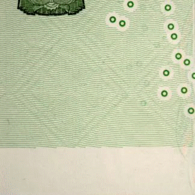
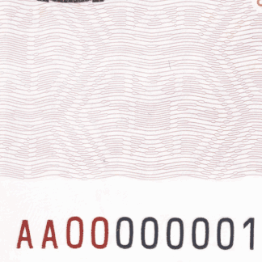
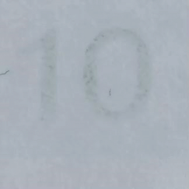

反假货币题目解析｜第1—300题
← 返回系统讲义
题干、选项和题序保留题库原貌；先独立作答，点击折叠栏查看答案，再阅读解析、图例和记忆方式。每题可以跳到讲义的对应段落，讲义右下角可返回该题。图片只证明图注所述可见内容，不代替仪器或实券。
目录｜按题号跳转
1.[单选题]1948 年12 月 1 日，中国人民银行在（）宣告成立。
- A.北京市；
- B.河北省石家庄市；
- C.陕西省延安市；
- D.上海市。
查看答案
B
解析
这是在问1948年的成立地点，不是在问今天的总行所在地。人民银行于1948年12月1日在河北石家庄成立，同日开始发行第一套人民币。北京容易让人联想到现在的总行，延安容易让人联想到革命历史，但都不是这次成立的地点。
把“1948年成立地点”与后来办公地点分成两个问题，题目只要求前者。
本题考点 · 分步理解- 1948年12月1日
- 河北石家庄：中国人民银行成立
- 同日发行第一套人民币
记忆方式｜时间脉络把1948年12月1日的两件事连在一起：人民银行在河北石家庄成立，同日发行第一套人民币；不要把成立地点误记成后来的总行所在地北京。
详细理解：前往讲义中的「法律制度」 →
2.[单选题]我国的货币发行制度模式是（）。
- A.集中统一发行；
- B.通过商业银行发行；
- C.分散发行；
- D.混合模式。
查看答案
A
解析
先区分‘发行人民币’和‘把现金付给客户’。人民币由人民银行统一发行；商业银行给你办理取款，只是让已经发行的现金进入你的手中，并不是各家银行自己发行人民币。因此我国属于集中统一发行，不是分散或混合发行。
例如柜台把100元支付给储户，是现金流通环节；是否有权发行人民币，是另一回事。
本题考点 · 分步理解- 人民银行：依法统一发行
- 商业银行：办理现金收付，不自行发行
记忆方式｜对照比较区分发行权与柜台付现：题库的发行制度是集中统一发行；商业银行办理取款是现金流通环节，不等于自行发行人民币。
详细理解：前往讲义中的「法律制度」 →
3.[单选题]国务院反假货币工作联席会议由（）担任召集人。
- A.中国人民银行行长；
- B.各商业银行行长；
- C.中国人民银行行长和各商业银行行长；
- D.国家金融监督管理总局。
查看答案
A
解析
反假货币工作需要多个部门协调，不是某家商业银行自己的事务。这个联席会议由中国人民银行行长担任召集人。商业银行虽然参与反假工作，但‘参与者’不等于‘召集人’；也不是人行行长与各商业银行行长一起共同召集。
题目限定召集人：先找到协调机制的负责人，再排除只参与具体工作的单位。
记忆方式｜对照比较题库中联席会议的召集人是中国人民银行行长；商业银行参与反假工作，与担任联席会议召集人不是同一角色。
详细理解：前往讲义中的「法律制度」 →
4.[单选题]银行业金融机构反假货币联络会议是国务院反假货币工作联席会议的延伸,在（）指导下开展工作。
- A.国务院反假货币工作联席会议；
- B.中国人民银行；
- C.国务院；
- D.国务院反假货币工作联席会议办公室。
查看答案
D
解析
题目问的是银行业‘联络会议’具体在谁的指导下工作，不是泛泛问哪个大部门主管反假。规定对应的是国务院反假货币工作联席会议办公室。把它理解成日常联络、衔接工作的指导窗口，就不容易把‘联席会议’与它的‘办公室’混在一起。
审题时保留名称末尾的“办公室”，它不是可以随意省略的修饰语。
记忆方式｜流程关系由国务院反假货币工作联席会议延伸到银行业金融机构反假货币联络会议；题库填其办公室指导，记全“联席会议办公室”，不要漏掉办公室。
详细理解：前往讲义中的「法律制度」 →
5.[单选题]新版人民币由中国人民银行组织设计，报（）批准。
- A.国务院；
- B.人民银行；
- C.国家金融监督管理总局；
- D.中国银行业协会。
查看答案
A
解析
把流程拆成两步：人民银行负责组织设计新版人民币，设计完成后报国务院批准。题目已经告诉你谁设计，空格要填的是谁批准。因此不能因为前半句出现了人民银行，就又把批准者也填成人民银行。
可以画一条流程：组织设计 → 报批。题目空格处是最后一步的批准机关。
本题考点 · 分步理解- 人民银行组织设计
- 发行新版报国务院批准
- 人民银行公告发行相关事项
记忆方式｜流程关系按题库把职责连成两步：中国人民银行组织设计新版人民币→报国务院批准；空格问批准机关，不是设计机关。
详细理解：前往讲义中的「法律制度」 →
6.[单选题]人民币的印制材料、技术或者工艺因防伪或其他原因需要作出改变的，由（）决定。
- A.国务院；
- B.全国人民代表大会常务委员会；
- C.国家金融监督管理总局；
- D.中国人民银行。
查看答案
D
解析
这一题不是上一题的‘新版设计报谁批准’，而是因防伪等原因调整印制材料、技术或工艺，决定权在人民银行。容易误选国务院，是把两种不同事项当成了同一个审批流程。先看清‘新版设计’还是‘印制调整’，再找对应主体。
这里问的是印制材料、技术或工艺的调整，和另行批准新版人民币的设计不是同一个问题。
本题考点 · 分步理解- 发行新版：报国务院批准
- 因防伪等改变材料、技术或工艺：由人民银行决定
记忆方式｜对照比较与第5题成对记：新版设计报国务院批准；因防伪等原因改变印制材料、技术或工艺，由中国人民银行决定。先辨认事项再选机关。
详细理解：前往讲义中的「法律制度」 →
7.[单选题]金融机构工作人员涉假犯罪立案追诉的标准是（）。
- A.5 张(枚)以上；
- B.2000 元或200 张(枚)以上；
- C.4000 元或200 张(枚)以上；
- D.根据情节确定。
查看答案
B
解析
按本题对应的金融工作人员购买假币、以假币换取货币的追诉标准，金额达到2000元，或者数量达到200张（枚），满足其中一个就达到门槛。例如20张100元达到金额标准，200张1元达到数量标准。‘5张（枚）’属于另一类业务报告规则，不能拿来当犯罪追诉门槛。
“金额或者张数”是并列条件，不要求同时达到；但题干概括较宽，具体行为仍须对照法条。
核对资料：最高人民检察院：立案追诉标准规定（二），第十六条（联网打开）
本题考点 · 分步理解- 特定金融工作人员涉假行为
- 总面额≥2000元 或 数量≥200张（枚）
- 符合其中一项达到题库所引追诉门槛
记忆方式｜直接记忆题库答案为2000元或200张（枚）以上，金额和数量是两个并列门槛；题干概括了涉假犯罪，具体行为及适用时点需核对原法条，不能将该门槛推广到所有涉假犯罪。
详细理解：前往讲义中的「法律制度」 →
8.[单选题]关于金融机构假币收缴制度的内容，错误的表述是（）。
- A.在用现金机具抽检周期；
- B.收缴业务录像保存时间；
- C.不同来源假币的收缴流程；
- D.向被收缴人告知权利。
查看答案
A
解析
注意要找‘错误的表述’。收缴制度应当讲清楚：不同来源的假币怎么收缴、录像留多久、怎样告知被收缴人的权利。这些都围绕收缴业务。‘在用现金机具多久抽检’管理的是机器的鉴别能力，应归入机具管理，而不是这张收缴制度清单。
先圈出“错误”，再判断每个选项是针对收缴过程还是针对机具性能。
本题考点 · 分步理解- 假币收缴制度：录像、收缴流程、告知权利
- 现金机具管理：在用机具抽检周期
记忆方式｜对照比较题目找不属于收缴制度的内容：录像保存、不同来源假币收缴流程和告知权利都围绕收缴；在用机具抽检周期属于机具管理。
详细理解：前往讲义中的「机具培训」 →
9.[单选题]根据《人民币鉴别仪通用技术条件》(GB 16999-2010)，鉴别仪使用寿命一般为（）年。
查看答案
C
解析
这是指定标准中的固定数值：按题干所列GB 16999-2010，鉴别仪使用寿命一般为3年。它问的是设备一般能使用多长时间，不是每隔多久检测一次。后面‘每半年抽检’是在使用期间检查机器，两个时间回答的是不同问题。
标准名称和年份是题目的一部分；实际采购、使用还应核对现行适用标准。
记忆方式｜直接记忆将数字和标准绑定：题干指定GB 16999-2010，题库记鉴别仪一般使用寿命3年；实际使用还需核对当时适用标准。
详细理解：前往讲义中的「机具培训」 →
10.[单选题]现金机具按鉴别对象可分为（）两大类。
- A.点钞机、鉴别仪；
- B.纸币鉴别机具、硬币鉴别机具；
- C.清分机、捆钞机；
- D.ATM、CRS。
查看答案
B
解析
关键是‘按鉴别对象’分类：机器要么识别纸币，要么识别硬币，所以分成纸币鉴别机具、硬币鉴别机具。点钞机、清分机、ATM等是具体设备或功能名称，不是按对象作出的这两个大类。就像先分客车、货车，而不是先列不同车型。
先问机器处理什么对象，再区分它承担清分、点数还是存取款等具体功能。
本题考点 · 分步理解- 按鉴别对象：纸币机具 / 硬币机具
- 按功能：点验钞、清分等，是另一种分类
记忆方式｜逻辑推导分类依据是鉴别对象，先问机器识别纸币还是硬币，因此选纸币鉴别机具和硬币鉴别机具；点钞、清分或存取是功能和业务分类。
详细理解：前往讲义中的「机具培训」 →
11.[单选题]《人民币现金机具鉴别能力技术规范》列出（）项纸币防伪特征。
查看答案
D
解析
题目问的是这份技术规范列出的纸币防伪特征数量，规定答案为18项。这里不用去数自己认识几种防伪技术，也不是数一张钞票表面能看见几个部位；规范还包括机器识别的相应特征。把‘纸币、该规范、18项’作为一个完整事实掌握即可。
18是题目所指规范中的统计口径，不能直接当成每张票都有18种人工可见特征。
记忆方式｜直接记忆把18项与《人民币现金机具鉴别能力技术规范》的纸币防伪特征清单配对记忆；这是清单数量，不代表每张纸币都有18项人工可见特征。
详细理解：前往讲义中的「机具培训」 →
12.[单选题]属于《人民币现金机具鉴别能力技术规范》界定的纸币可机读防伪特征是（）。
- A.单一合金币电磁特征；
- B.金属复合材料币电磁特征；
- C.双金属结构币电磁特征；
- D.冠字号码。
查看答案
D
解析
‘可机读’就是机器能够识别、检测的信息。冠字号码在纸币上，机器可以识别其中的字母和数字。其他三个选项都在说金属硬币的材料或结构及其电磁特征，虽然也能被机器检测，但不属于题目所问的纸币特征。
识别号码中的字母和数字需要机器读取票面信息；检测硬币金属性质则属于另一类对象。
本题考点 · 分步理解- 纸币：冠字号码可供机读
- 硬币：电磁、尺寸等是另一类对象
记忆方式｜对照比较先分纸币与硬币：冠字号码是纸币上可供机器读取的信息；其余选项描述的是不同硬币材料或结构的电磁特征。
详细理解：前往讲义中的「机具培训」 →
13.[单选题]金融机构应当每半年对（）进行抽样检测。
- A.报废机具；
- B.招标机具；
- C.在用机具；
- D.启用机具。
查看答案
C
解析
抽检是为了确认正在处理现金的机器还能不能可靠识别，所以对象是在用机具，每半年抽样检测。报废机具已经退出使用；招标、启用属于采购或投入使用阶段，不能替代使用过程中的定期检查。题目中的‘每半年’强调的是持续使用时的管理。
采购前的测试和在用期间的抽检发生在不同阶段，一个做过并不自动代替另一个。
口径提示：半年抽检为本题引用的业务口径，原始配套文件和实际适用时点仍需核对。
本题考点 · 分步理解- 题库口径：在用现金机具
- 每半年进行抽样检测
- 与招标前测试分开理解
记忆方式｜时间脉络记住对象和周期成对出现：在用机具每半年抽样检测。把使用期间抽检与招标采购前测试分开，避免选招标机具。
详细理解：前往讲义中的「机具培训」 →
14.[单选题]负责组织金融机构反假货币知识和技能培训工作的主体是（）。
- A.中国银行保险监督委员会；
- B.中国人民银行；
- C.办理存取款业务的金融机构；
- D.国务院反假货币工作联席会议。
查看答案
C
解析
谁实际办理现金业务，谁就要组织本机构人员接受反假知识和技能培训。人民银行等部门提出要求、实施管理，不等于替每一家金融机构完成内部培训。所以这里找具体组织培训的业务机构，而不是只凭‘哪个监管部门更像主管’来选。
把监管要求和本机构落实培训分开：题目找的是实际组织培训的主体。
本题考点 · 分步理解- 金融机构组织本机构现金从业人员培训
- 监管要求不等同替机构开展日常培训
记忆方式｜对照比较题库问实际组织本机构员工培训的主体，选办理存取款业务的金融机构；人民银行的管理职责不能直接等同于该机构自行组织培训。
详细理解：前往讲义中的「机具培训」 →
15.[单选题]金融机构清分外包人员需要掌握的反假工作技能不包括（）。
- A.清分中发现假币处置流程；
- B.涉假纠纷处置流程；
- C.不同来源假币实物的解缴流程；
- D.假币实物的分类保管。
查看答案
B
解析
先看清岗位是‘清分外包人员’。他们直接接触成批现金，需要会处理清分中发现的假币、分类保管实物，并掌握相应解缴流程。涉假纠纷往往涉及客户沟通、业务核查和争议处理，不在本题列给清分外包岗位的技能范围里；这不等于整个金融机构不用会处理纠纷。
判断时先认清被问到的是外包清分岗位，不要把整家银行的全部职责都装进该岗位。
口径提示：清分外包岗位要求按题库理解，具体职责应以适用制度和岗位规范为准。
本题考点 · 分步理解- 清分外包岗位：发现与处置
- 分类、保管与解缴相关流程
- 涉假纠纷处理按题库不属于本题岗位要求
记忆方式｜流程关系沿清分外包人员接触假币的工作链记：发现后的处置、分类保管及解缴相关流程；题库将涉假纠纷处置排除在该岗位要求之外。
详细理解：前往讲义中的「机具培训」 →
16.[单选题]金融机构发生假币流失和涉假舆情的信息报告时间是（）。
- A.都是1 个工作日；
- B.都是立即报告；
- C.都是3 个工作日；
- D.假币流失1 个工作日，涉假舆情3 个工作日。
查看答案
A
解析
这道题的两类信息是‘假币流失’和‘涉假舆情’，按题库的信息报送要求，两者都是1个工作日。不要因为假币问题听起来紧急，就把所有报告都选成‘立即’；也不要把其他业务中出现过的3个工作日搬过来。报告时限必须和具体事项配对。
解题时把“事项—期限”作为一对记忆；这类管理要求可能调整，实际操作要查现行规定。
口径提示：1个工作日为题库涉假舆情与假币流失信息口径，不能混同2019办法确认误收误付的法定期限。
本题考点 · 分步理解- 假币流失 / 涉假舆情
- 题库信息报告：1个工作日
- 不要等同所有误收误付的法定报告期限
记忆方式｜直接记忆把事项与时限一起背：题库中假币流失和涉假舆情均为1个工作日报告；不要混成均须立即报告，也不要把两个事项拆成不同期限。
详细理解：前往讲义中的「反假运营」 →
17.[单选题]金融机构反假货币信息报送工作不涉及（）方面的要求。
- A.信息种类；
- B.报送方式；
- C.报送人员；
- D.报送时限。
查看答案
C
解析
这里考的是信息报送要求的分类：报哪些信息、用什么方式报、在什么时限内报。‘报送人员’不在本题列举的要求维度中，因此应排除。不是说实际工作可以不安排人员，而是不要把现实中需要有人负责，与本题的分类清单混为一谈。
“不涉及”问的是题目列出的分类，并不意味着报送业务可以无人负责。
口径提示：报送分类按题库口径，具体报送职责及现行配套文件仍须核验。
本题考点 · 分步理解- 报什么：信息种类
- 怎么报：报送方式
- 何时报：报送时限
记忆方式｜对照比较题库所列报送要求可按“报什么、怎么报、何时报”对应信息种类、报送方式、报送时限；本题选不涉及的报送人员，不表示实际报送可无人负责。
详细理解：前往讲义中的「反假运营」 →
18.[单选题]流通人民币目前已发行（）。
- A.五套纸币，三套硬币；
- B.四套纸币，四套硬币；
- C.四套纸币，三套硬币；
- D.五套纸币，四套硬币。
查看答案
D
解析
这题按累计发行的套数统计：人民币纸币发行了五套，硬币发行了四套。‘已经发行过’不等于‘每一套现在都还在流通’，所以不能看到早期人民币已经退出流通，就把累计套数减掉。纸币和硬币还要分别统计。
例如某套已经停止流通，仍然曾经发行过；题目是累计统计，不是数钱包里还见得到几套。
记忆方式｜直接记忆按题库的累计发行口径记五套纸币、四套硬币；累计发行与现在仍在流通是两种统计，题干的“目前”应结合题库编制时点核验。
详细理解：前往讲义中的「版本总览」 →
19.[单选题]人民币上的（）具有中国传统文化特色。
- A.年版；
- B.负责人签名；
- C.负责人印章；
- D.发行时间。
查看答案
C
解析
印章是中国传统文化中很有代表性的署名、确认方式。题目所说人民币的中国传统文化特色，对应负责人印章，而不是负责人签名。年版、发行时间主要用于说明版本或发行信息，并不体现这里要考的这种传统形式。
对照选项看承载形式：传统印章是印出来的印记，不能等同于手写签名。
记忆方式｜对照比较把票面负责人印章与手写签名对照：题库所指中国传统文化特色是印章，而不是负责人签名、年版或发行时间。
详细理解：前往讲义中的「版本总览」 →
20.[单选题]第一套人民币于（）首次发行。
- A.1948 年10 月1 日；
- B.1948 年12 月1 日；
- C.1949 年10 月1 日；
- D.1949 年12 月1 日。
查看答案
B
解析
第一套人民币首次发行是在1948年12月1日，和人民银行在石家庄成立是同一天。人民币不是等到1949年10月1日才首次发行的。把第1题的‘成立’和这一题的‘首发’连成同一天的两件事，就能避开国庆日期这个干扰。
可以把同日的两件事并排记：人民银行成立；第一套人民币首次发行。
记忆方式｜时间脉络将首次发行日期与人民银行成立日关联：两者都是1948年12月1日；1949年10月1日是容易混入的另一历史日期。
详细理解：前往讲义中的「版本总览」 →
21.[单选题]第四套人民币（）年版的100 元、50 元开始使用安全线技术。
- A.1980；
- B.1984；
- C.1988；
- D.1990。
查看答案
D
解析
题目限定第四套人民币的100元、50元，开始使用安全线技术的是1990年版。这里‘1990’指年版，不要自行把它理解成所有有关票券的实际发行日。1980年版和1990年版虽然同属第四套，防伪配置并不完全相同。
把“第四套”当作大范围，再用“1990年版”和两个面额缩小范围。
记忆方式｜时间脉络先锁定第四套，再缩到1990年版100元、50元：题库以这两个券别记安全线开始应用；不要把第四套的其他年版一概等同。
详细理解：前往讲义中的「安全线」 →
22.[单选题]目前第四套人民币纸币仍在流通的面额是（）。
- A.2 角和1 元；
- B.1 角和5 角；
- C.1 元和2 元；
- D.1 元和5 元。
查看答案
B
解析
按题库所考的流通范围，第四套人民币纸币保留流通的是1角、5角。这里问的是现在仍在流通的面额，不是第四套当年总共发行过哪些面额。1元、2元、5元等曾经属于第四套，并不能据此判断它们仍属于本题答案。
这道题沿用题库的流通口径；辨认历史上发行过的面额与判断其当前流通状态要分别查。
记忆方式｜对照比较按题库给出的流通口径，第四套仍流通的纸币面额选1角和5角；“历史上发行过”与“特定时点仍流通”须分开，实际时效另核。
详细理解：前往讲义中的「版本总览」 →
23.[单选题]第五套人民币背面的少数民族文字为（）。
- A.蒙、藏、维、壮；
- B.蒙、满、维、壮；
- C.蒙、藏、满、壮；
- D.蒙、满、藏、壮。
查看答案
A
解析
第五套人民币背面的四种少数民族文字是蒙古文、藏文、维吾尔文、壮文。四个选项很接近，区别在于有没有用‘满’替换其中一种。正确组合不含满文；不能因为满文也是少数民族文字，就认为票面一定使用了它。
可以回到票面背面查文字种类，而不是按我国民族数量或熟悉程度推断。
记忆方式｜对照比较第五套背面少数民族文字按题库记蒙古、藏、维吾尔、壮四种；选项主要用满文替换其中一种，检查组合是否含满文即可排除。
详细理解：前往讲义中的「版本总览」 →
24.[单选题]第五套人民币纸币（）个年版和（）个面额。
查看答案
D
解析
把两种统计分开：年版有1999、2005、2015、2019、2020，共5个；纸币面额有1、5、10、20、50、100元，共6个。不是每个年版都发行这六种面额，所以不能把年版数和面额数相乘，也不要把硬币面额算进纸币题。
一个维度数设计年版，另一个维度数纸币面额；不同年版未必包含全部面额。
本题考点 · 分步理解- 年版：1999、2005、2015、2019、2020，共5个
- 纸币面额：1、5、10、20、50、100元，共6个
- 年版与面额是两条维度，并非每个年版都有全部面额
记忆方式｜对照比较分别计数：题库的五个年版为1999、2005、2015、2019、2020；六个纸币面额为1、5、10、20、50、100元。年版数与面额数不是同一个维度。
详细理解：前往讲义中的「版本总览」 →
25.[单选题]第五套人民币1 元的多层次水印图案是（）。
查看答案
B
解析
1元的多层次水印是兰花。水印要把钞票举起来透光看，它是纸张中的明暗图案，不是票面上任意一朵印出来的花。其他花名主要用来混淆不同面额：5元配水仙，10元配月季，20元配荷花；这题只要对应到1元即可。
找水印时先把有空白区域的一侧迎向光源，看到的纸内图案与普通印刷花纹是两回事。

2019年版1元兰花水印：等待动图出现透光效果记忆方式｜图像定位拿1元迎光看纸内多层次水印，配对兰花；与5元水仙、10元月季、20元荷花并排记，别把表面印花当作水印。
详细理解：前往讲义中的「水印与纤维」 →
26.[单选题]第五套人民币20 元、10 元的多层次水印是（）。
- A.人像、荷花；
- B.荷花、月季花；
- C.长江三峡、月季花；
- D.荷花、长江三峡。
查看答案
B
解析
按题干顺序一一对应：先问20元，是荷花；再问10元，是月季花。长江三峡是10元背面的风景主景，不是这里问的多层次水印。人像水印又属于另一组券别，不能看见熟悉的钞票图案就直接选。
按题目顺序作答：先20元，再10元；即使记住两种花，也不能把顺序调换。
2019年版20元荷花水印：迎光观察2019年版10元月季水印：迎光观察
记忆方式｜对照比较依题干顺序配对：20元迎光看荷花，10元迎光看月季；长江三峡是10元背面主景，不是该题所问的水印。
详细理解：前往讲义中的「水印与纤维」 →
27.[单选题]第五套人民币5 元的多层次水印图案是（）。
查看答案
D
解析
5元的花卉水印是水仙花。这类面额与花卉的配对，不能靠花的价格、大小或谐音推出来，认准这组对应关系：1元兰花、5元水仙、10元月季、20元荷花。兰花和月季虽然也是真实水印，但分别属于别的面额。
想象把纸币举向窗户：要辨认的是透出的纸张图案，而非直接看正反面的印刷图。

2020年版5元水仙花水印：迎光观察记忆方式｜图像定位将5元与水仙花水印配对，迎光找纸内花形；与1元兰花、10元月季及20元荷花一起做面额对照，不靠花名谐音猜。
详细理解：前往讲义中的「水印与纤维」 →
28.[单选题]第五套人民币首张应用白水印特征的是（）。
- A.1999 年版100 元；
- B.1999 年版50 元；
- C.1999 年版20 元；
- D.1999 年版10 元。
查看答案
D
解析
白水印通常表现为透光时较明亮、边缘清楚的面额数字，和有明暗层次的人像或花卉水印不是同一种效果。第五套中首张应用白水印的是1999年版10元。题目问‘首次’，不是问后来哪些券别也有，不能把‘有这个特征’直接当成‘最先使用’。
“首次”是时间比较；看见其他年版也有白水印，只能证明后来有使用，不能证明它最早。

2019年版10元白水印示意：本题是1999年版，图仅用于理解白水印记忆方式｜时间脉络题库所考第五套首张白水印是1999年版10元；将“首次”与具体年版、面额绑定，后来券别也有白水印不能证明它们首用。
详细理解：前往讲义中的「水印与纤维」 →
29.[单选题]透光观察，第五套人民币10 元正面左侧可见（）多层次水印。
- A.茶花图案；
- B.兰花图案；
- C.月季花图案；
- D.水仙花图案。
查看答案
C
解析
题目已经给出透光、正面左侧这些观察条件，真正要判断的仍然是‘10元对应什么水印’。10元对应月季花；兰花属于1元，水仙属于5元，茶花不是这里的对应图案。这和第26题是同一个知识点，只是把观察位置写得更具体。
先确定10元，再把钞票迎光看正面左侧；题干已给的观察条件有助于定位水印。
2019年版10元月季花水印演示
记忆方式｜图像定位先定位10元正面左侧，再迎光看纸内多层次月季花；与第26题的10元—月季是一组事实，迎光位置是额外线索。
详细理解：前往讲义中的「水印与纤维」 →
30.[单选题]第五套人民币的无色荧光纤维是（）。
- A.添加在纸张中的特殊纤维；
- B.印刷在纸张上的荧光图案；
- C.在紫外光下呈现红色；
- D.仅在水印区域内垂直施放。
查看答案
A
解析
可以把无色荧光纤维理解成造纸时混进纸里的特殊小纤维：普通光下不明显，紫外灯下会发光。它不是后来印在表面的固定荧光图案，也不是只排在水印区。题库这类纤维在紫外光下看蓝、黄两色，不是选项所说的红色。
检验时要改变照明条件：普通光下不明显，不代表在规定紫外光下没有荧光。
配图说明：暂未找到可核验的人民币纤维纸内微观实拍；纸内属性应按造纸工艺理解，不能把表面发光图片当作截面照片。
记忆方式｜理解原理无色荧光纤维是添加在纸张中的纤维，紫外条件下才显现荧光；它不是印在纸面上的固定荧光图案，也不只限水印区域。
详细理解：前往讲义中的「水印与纤维」 →
31.[单选题]第五套人民币无色荧光纤维的位置是（）。
- A.固定；
- B.半固定；
- C.满版随机分布；
- D.定向施放。
查看答案
C
解析
纤维是在造纸过程中混进去的，可以想成纸里散落的小丝，分布并不是按同一张图案逐点排好的。因此本题选满版随机分布，而不是固定、半固定或定向施放。不要把它与固定位置的荧光面额数字混淆：后者每张都要到相应部位去找。
可以对比纸里的随机小丝与印在固定位置的号码：前者不要求每张票的位置完全相同。
记忆方式｜理解原理把无色荧光纤维想成散落在纸中的细丝：题库记满版随机分布；与每张券都在固定位置的荧光数字相比，纤维不按同一图案排列。
详细理解：前往讲义中的「水印与纤维」 →
32.[单选题]第五套人民币纸张中加入的无色荧光纤维在紫外光下呈现（）荧光。
- A.红色和蓝色；
- B.蓝色和绿色；
- C.蓝色和黄色；
- D.红色和黄色。
查看答案
C
解析
先注意观察条件是紫外光，而且对象是‘无色荧光纤维’。这类纤维在紫外光下呈蓝色和黄色。红、蓝两色容易让人想到1999年版普通光下的彩色纤维，但那是另一项特征；不能把两种纤维的颜色交叉套用。
同一张纸在普通光与紫外光下可呈现不同信息；本题指定紫外光后才判断颜色。
记忆方式｜对照比较记两组条件：无色荧光纤维在紫外光下呈蓝、黄；1999年版可见光下的彩色纤维是红、蓝。颜色必须连同光源和纤维名称记。
详细理解：前往讲义中的「水印与纤维」 →
33.[单选题]人民币1999 年版没有应用红蓝纤维特征的面额是（）。
- A.20 元；
- B.10 元；
- C.5 元；
- D.1 元。
查看答案
D
解析
题目问的是1999年版红蓝彩色纤维的例外，1元没有应用这一项特征。它不是在说1元没有任何纸张防伪，也不是在问无色荧光纤维。做这类题先圈定‘年版＋具体特征’，再判断哪个面额不符合，避免把两种纤维混在一起。
“没有应用”是找例外；答题范围仅限题目说的红蓝彩色纤维，不等于没有其他防伪。
记忆方式｜对照比较题库中1999年版1元是未应用红蓝彩色纤维的例外；限定的是该年版和这一种纤维，并不等于1元没有任何其他防伪。
详细理解：前往讲义中的「水印与纤维」 →
34.[单选题]在可见光下观察,人民币1999 年版钞纸中分布着（）纤维。
- A.红色和黄色；
- B.红色和蓝色；
- C.黄色和蓝色；
- D.绿色和蓝色。
查看答案
B
解析
这里明确说‘可见光’，也就是平时正常看钞票的光线。1999年版有关钞纸中的彩色纤维是红色、蓝色。前面的蓝色、黄色则对应紫外光下的无色荧光纤维。两题对象和照明方式不同，所以答案不同并不矛盾。
审题时把“可见光”和“1999年版”一起圈出，避免调用紫外灯下另一项纤维的颜色。
记忆方式｜对照比较题干限定1999年版、可见光：彩色纤维记红与蓝；不要把紫外光下无色荧光纤维的蓝与黄直接套入。
详细理解：前往讲义中的「水印与纤维」 →
35.[单选题]安全线属于（）防伪技术。
查看答案
B
解析
安全线结合在钞纸之中，全埋或开窗是它与纸张结合的方式，所以归为纸张防伪。虽然部分安全线会变色、带图文，也不能因此把整项技术归成油墨或印刷防伪。像给纸里加了一条专门的识别带，而不是只在纸面画一条线。
先判材料位置：安全线与钞纸结合；其上是否带磁或变色，是另一个维度。
记忆方式｜理解原理安全线与钞纸结合，故归纸张防伪；变色、磁性或线内文字是线的附加特征，不改变它作为纸张内安全线的分类。
详细理解：前往讲义中的「安全线」 →
36.[单选题]2019 年版人民币50、20 元和10 元的磁性全埋安全线（）。
- A.在正面人像水印左侧；
- B.在票面中部；
- C.在正面人像右侧；
- D.横贯整个票面。
查看答案
B
解析
先抓住名字中的‘磁性全埋’：这根线在题目所列2019年版50、20、10元的票面中部。不要把它当成正面右侧显眼的开窗线，一张钞票可以有不同的安全线。‘横贯整个票面’还把方向弄错了，不是本题这根竖向安全线的位置。
“全埋”侧重线与纸的结合方式；找它时按题干指定的中部位置，不能只找肉眼显露的开窗线。
记忆方式｜图像定位题库中2019年版50、20、10元的磁性全埋安全线在票面中部；“全埋”提示它埋入纸内，不要只盯着露在纸面的开窗线。
详细理解：前往讲义中的「安全线」 →
37.[单选题]垂直和倾斜票面观察，人民币2015 年版100 元的光变镂空开窗安全线颜色分别为（）。
- A.品红色和绿色；
- B.黄色和蓝绿色；
- C.金色和绿色；
- D.红色和黄色。
查看答案
A
解析
看的部位是2015年版100元右侧的光变开窗安全线：正对票面看为品红色，倾斜看变绿色。金色和绿色是同一张钞票中部光彩数字的配色，不是这根线的配色。先认部位，再看角度，就不会被熟悉的金绿组合带走。
看同一根线的两个角度：正对和倾斜分别记录颜色；不要读旁边面额数字的颜色。
核对资料：中国人民银行：2015年版第五套人民币100元专题（联网打开）
记忆方式｜对照比较2015年版100元正面右侧开窗安全线：垂直看品红，倾斜看绿；同券中部光彩数字才是金绿，不要把线与数字的配色交换。
详细理解：前往讲义中的「安全线」 →
38.[单选题]第五套人民币安全线有（）类型。
查看答案
A
解析
本题库跨不同年版、面额归纳了四类：全埋、全息磁性开窗、光变镂空开窗、动感光变镂空开窗。这里数的是技术类型，不是说每张钞票同时放了四根线。‘有没有窗口’是一层区别，窗口里的光学效果又是一层区别。
这是一份跨券别的类型清单；数分类与数一张票上有几根安全线并非同一件事。
口径提示：这里是题库跨券别的四项清单；全埋／开窗属于结构维度，全息、磁性、光变与动感描述功能，分类层级并不完全相同。
记忆方式｜对照比较按题库跨券别分类记四类：全埋、全息磁性开窗、光变镂空开窗、动感光变镂空开窗；这是类型数，不是每张券都有四根线。
详细理解：前往讲义中的「安全线」 →
39.[单选题]第五套人民币首次使用全息磁性开窗安全线的是（）。
- A.1999 年版20 元；
- B.1999 年版10 元；
- C.1999 年版5 元；
- D.1999 年版1 元。
查看答案
B
解析
问的是全息磁性开窗安全线‘第一次用在哪张’，题库对应1999年版10元。1999年版5元也会出现在这类安全线的知识中，但‘也有’不能说明它‘首用’。先认清技术名称，再把首用事实与10元配对，不要按面额大小猜发行先后。
题目需要最早使用这一技术的具体券别；同一技术后来还可出现在其他面额。
记忆方式｜时间脉络把“第五套首次应用全息磁性开窗安全线”与1999年版10元配对；其他券别使用同类技术，不等于其为首次。
详细理解：前往讲义中的「安全线」 →
40.[单选题]改变观察角度，2019 年版50 元的动感光变镂空安全线在颜色变化同时，还有亮光带（）。
- A.左右滚动；
- B.沿对角线滚动；
- C.上下滚动；
- D.由内向外移动。
查看答案
C
解析
2019年版50元这根线的特点不只是换颜色，还要看到亮光带上下滚动。题目中的‘动感’就是让你留意运动效果；左右、对角线、向外扩散都不是本题要求的方向。观察时转动票面，不是用手上下移动整张钞票来代替亮带运动。
观察重点是线内亮带相对票面的移动方向；整张票在手中转动只是触发观察的动作。
核对资料：中国人民银行公告〔2019〕4号（联网打开）
记忆方式｜图像定位观察2019年版50元安全线：改变角度时，除了颜色变化，线内亮光带上下滚动；上下说的是亮带的运动，不是要求上下移动纸币。
详细理解：前往讲义中的「安全线」 →
41.[单选题]人民币1999 年版10 元和2005 年版10 元安全线包含的防伪措施是（）。
- A.全息、磁性、缩微；
- B.磁性、荧光、缩微；
- C.全息、荧光、开窗；
- D.变色、磁性、动态。
查看答案
A
解析
这两种10元所考的是全息磁性开窗安全线。名称已经提示全息和磁性，线内还有缩微内容，所以对应全息、磁性、缩微。不要把后面新版安全线的变色、动态表现搬来；有‘开窗’也不表示它就具备所有新技术。
“全息”“磁性”“缩微”分别回答图像效果、仪器信号和细小内容，可以并存在一根线上。
记忆方式｜逻辑推导1999年版和2005年版10元均考全息磁性开窗安全线：名称提示全息、磁性，再补记线内缩微，三者对应正确选项。
详细理解：前往讲义中的「安全线」 →
42.[单选题]人民币2005 年版安全线中的全息图案有缩微文字（）和面额数字。
- A.“RMB”；
- B.“¥”；
- C.“人民币”；
- D.“CNY”。
查看答案
B
解析
这里问2005年版安全线全息图案里的符号：是人民币符号‘¥’加面额数字，不是RMB、CNY或汉字‘人民币’。虽然这些都能在货币知识中见到，但在这一条线里要认具体图文。后面新版全埋线只问面额数字，是另一根线、另一种配置。
符号和英文缩写并非同一类字符；放大或按规定观察时应核对线中实际内容。
记忆方式｜图像定位题库对应2005年版安全线全息图案中的人民币符号“¥”及面额数字；放大辨认符号，不要与字母RMB、CNY或汉字混淆。
详细理解：前往讲义中的「安全线」 →
43.[单选题]人民币2015 年版100 元的光变镂空开窗安全线（）。
- A.在正面左侧；
- B.在正面右侧；
- C.在背面开窗；
- D.变色效果为金色和绿色。
查看答案
B
解析
2015年版100元的光变镂空开窗安全线在正面右侧，窗口也在这一面观察。最后一个选项的金绿配色说错了部位：这根线是品红变绿，中部数字100才是金绿。因此本题不仅要知道位置，还要防止用数字的颜色给安全线作描述。
将“位置”和“颜色”分开核对：即使位置描述正确，颜色若写成数字的金绿也仍然错误。
记忆方式｜图像定位先定位2015年版100元正面右侧开窗安全线；其颜色为品红与绿，选项中的金绿对应中部光彩数字，不能移到安全线上。
详细理解：前往讲义中的「安全线」 →
44.[单选题]人民币2019 年版新增防伪特征为（）。
- A.红外特征；
- B.光变镂空开窗安全线；
- C.动感光变镂空开窗安全线；
- D.凹印对印。
查看答案
C
解析
题眼是2019年版‘新增’。此前2015年版100元已经有光变镂空开窗线；2019年版50元进一步采用带动感效果的安全线。两种名称只多了‘动感’，却是这里要区分的升级点。红外特征也不是2019年才第一次出现。
“新增”必须比较前后版本：如果旧版已有，仅凭新版也出现不能判为新增。
核对资料：中国人民银行公告〔2019〕4号（联网打开）
记忆方式｜时间脉络比较前后版本：2015年版100元已有光变镂空开窗安全线；题库将2019年版50元的动感光变镂空开窗安全线作为新增特征。
详细理解：前往讲义中的「安全线」 →
45.[单选题]使用磁性检测仪检测,人民币2015 年版100 元的光变镂空开窗安全线和全埋安全线（）。
- A.都有磁性特征；
- B.开窗安全线有磁性特征,全埋安全线无磁性特征；
- C.开窗安全线无磁性特征,全埋安全线有磁性特征；
- D.都无磁性特征。
查看答案
C
解析
同一张2015年版100元上的两根线不是同一套属性：右侧光变开窗线在本题配置中无磁性特征，另一根全埋线有磁性。‘会变色’是给人看的光学表现，‘有磁性’是仪器检测的信号，两者不能互相推出，所以不能选两根都有。
磁性需要用对应仪器检验；肉眼看到光变不能推导出磁性结果。
记忆方式｜对照比较2015年版100元把两根线分开记：光变镂空开窗线无磁性，全埋线有磁性；光变是视觉效果，不能据此推断磁性。
详细理解：前往讲义中的「安全线」 →
46.[单选题]透光观察，人民币2015 年版、2019 年版和2020 年版全埋安全线中有镂空（）。
- A.“RMB”；
- B.“￥”；
- C.面额数字；
- D.“CNY”。
查看答案
C
解析
注意这一题看的是‘全埋安全线’，透光时读到的是相应面额数字。RMB、CNY是字母名称，‘￥’是人民币符号，都不是本题要填的内容。不要把2015年版100元右侧开窗线中的‘￥100’整套内容搬给全埋线。
透光后观察线内镂空内容；不同类型安全线的字符不一定相同。
口径提示：题库选面额数字；2019年1元等具体券别的线内字符仍需逐券核验，不应将选项机械推广为已核实的全部配置。
记忆方式｜图像定位对题目所列2015、2019、2020年版的全埋安全线迎光看镂空面额数字；不要混入2015年版100元开窗线的“￥100”组合。
详细理解：前往讲义中的「安全线」 →
47.[单选题]透光观察人民币2015 年版100 元的光变镂空开窗安全线，可见安全线中有（）。
- A.同方向排列的黑色文字“100”；
- B.正反交替排列的黑色文字“100”；
- C.同方向排列的镂空文字“￥100”；
- D.正反交替排列的镂空文字“￥100”。
查看答案
D
解析
把三个判断都做完：字符带‘￥’和‘100’，不是只有100；是透光可见的镂空内容，不是黑色文字；排列是正反交替，不是全都朝同一方向。四个选项就是分别改动这几个条件，只有把三点一起核对才不会漏选错。
把选项拆成字符、透光效果、排列方向三项，逐项核对，不要只看见“100”就作答。
记忆方式｜图像定位2015年版100元开窗线迎光核对三点：内容为“￥100”、形式是镂空、方向正反交替；其他选项分别改错内容、颜色或排列。
详细理解：前往讲义中的「安全线」 →
48.[单选题]在 2019 年版人民币纸币上应用的新防伪特征是（）。
- A.凹印对印；
- B.有色荧光竖号码；
- C.光彩光变面额数字；
- D.动感光变镂空安全线。
查看答案
D
解析
这和第44题考同一个升级点：2019年版的新特征是带动感的光变镂空安全线，典型对应50元。光彩数字和有色荧光竖号码在2015年版100元已经出现。题目问‘新增加了什么’，不等于问‘2019年版上能找到什么’。
注意答案指向2019年版具体券别的新设计，不能解释成所有2019年版面额都有同一根动感线。
记忆方式｜时间脉络与第44题互证：题库所问2019年版新增的是动感光变镂空安全线，典型券别为50元；不要把该配置推广成所有2019年版面额都有。
详细理解：前往讲义中的「安全线」 →
49.[单选题]平视票面观察，人民币2015 年版100 元的光彩光变面额数字颜色（）。
- A.以蓝色为主；
- B.以金色为主；
- C.以品红色为主；
- D.以绿色为主。
查看答案
D
解析
平视票面可以先理解为视线贴近票面方向、把钞票倾斜来看，这时中部光彩数字100以绿色为主。正对票面看才以金色为主。品红色则属于右侧安全线，既不是这个数字在该角度的颜色，也不能因为在同一张钞票上就混用。
平视与垂直观察是两个角度，参考的是数字本身，安全线的颜色不参与判断。
记忆方式｜对照比较2015年版100元光彩数字同一部位随角度变化：按题库，平视票面以绿色为主；与垂直正对时的金色成对记。
详细理解：前往讲义中的「光变数字」 →
50.[单选题]垂直票面观察，人民币2015 年版100 元的光彩光变面额数字颜色（）。
- A.以金色为主；
- B.以蓝色为主；
- C.以绿色为主；
- D.以棕色为主。
查看答案
A
解析
垂直票面观察是眼睛正对着票面，不是简单把纸竖起来。2015年版100元的中部光彩数字在这个角度以金色为主；缓缓倾斜后才转向绿色。所以这题和上一题并不矛盾，只是同一个数字在两个观察角度下的表现。
把视线尽量正对票面，再与倾斜时比较；“票面竖着拿”不必然等于垂直观察。
记忆方式｜对照比较垂直票面是视线正对票面：2015年版100元中部光彩数字以金色为主；与第49题的平视绿色对照，不是纸币竖着拿就叫垂直观察。
详细理解：前往讲义中的「光变数字」 →
51.[单选题]垂直票面观察，人民币2019 年版20 元和2020 年版5 元的光彩光变面额数字颜色（）。
- A.以金色为主；
- B.以蓝色为主；
- C.以绿色为主；
- D.以棕色为主。
查看答案
A
解析
2019年版20元、2020年版5元的光彩数字，与2015年版100元属于本组的金绿配色：正看以金色为主，倾斜后转向绿色。因此不能看见‘新版光彩数字’就统一选绿，也不能把50元、10元的绿蓝配色套过来。
题目列出两个券别，但示例图只展示其中一张；另一张应按其对应版别单独核对。
记忆方式｜对照比较2019年版20元和2020年版5元光彩数字，垂直观察以金色为主；和同组金绿配色关联，不要套用2019年版50元、10元的绿蓝组。
详细理解：前往讲义中的「光变数字」 →
52.[单选题]第五套人民币光变油墨面额数字应用了（）工艺。
查看答案
D
解析
本题说的‘光变油墨面额数字’是旧式光变数字，按题库对应凹印工艺。油墨决定换角度时的颜色表现，凹印是把图文印到纸上的工艺，两者不是互斥的分类。另外，凹印叫这个名字是因为印版图文凹下去，不是因为纸上墨层必然凹下去。
“油墨”回答用什么材料，“凹印”回答怎样印上去；一个图文可以同时有这两个属性。
记忆方式｜理解原理题库将旧式光变油墨面额数字对应凹印工艺：油墨描述材料和光变效果，凹印描述印刷工艺，同一个数字可以同时具备两种属性。
详细理解：前往讲义中的「光变数字」 →
53.[单选题]第五套人民币应用光变油墨特征的是（）。
- A.1999 年和2005 年版；
- B.2015 年版；
- C.2019 年版；
- D.2020 年版。
查看答案
A
解析
按这组题的术语，‘光变油墨面额数字’指1999、2005年版相应券别的旧式特征；2015年版以后重点考的是‘光彩光变面额数字’。不是说新版不会变色，而是题库用不同名称区分两代特征。先识别完整名称，不能只抓到‘光变’两个字。
注意“光变油墨面额数字”与“光彩光变面额数字”的完整名称，不能只按字面中的“光变”判断。
记忆方式｜对照比较题库术语中，1999年和2005年版考“光变油墨面额数字”，新版另称“光彩光变面额数字”；新版也会变色，区别在完整技术名称。
详细理解：前往讲义中的「光变数字」 →
54.[单选题]改变观察角度，人民币2015 年版100 元的光彩光变面额数字颜色在（）之间交替变化。
- A.蓝色和绿色；
- B.金色和红色；
- C.金色和绿色；
- D.棕色和红色。
查看答案
C
解析
题目部位是2015年版100元中部的光彩数字，转动时颜色在金色和绿色之间变化。金色对应较正对的观察，绿色对应较倾斜的观察。这道题把前两道分开问的角度合到一起问，并没有换另一种数字。
同一数字随角度呈现两种颜色；图片或纸币固定在一个角度时，只能看到其中一部分效果。
记忆方式｜对照比较2015年版100元中部光彩数字转动时金绿变化；与第49、50题对应：正对以金为主、平视以绿为主。
详细理解：前往讲义中的「光变数字」 →
55.[单选题]改变观察角度， 人民币2019 年版50 元和10 元光彩光变面额数字的颜色在 （） 之间交替变化。
- A.绿色和蓝色；
- B.金色和红色；
- C.金色和绿色；
- D.紫色和绿色。
查看答案
A
解析
2019年版50元、10元的光彩数字是绿蓝配色，不是前面100元、20元、5元的金绿配色。先看年版和面额，再找对应组。题目只问两种颜色之间怎样变化，不要求在这里额外猜哪一边先出现。
先排除100元的金绿记忆，再针对题干50元、10元及其年版作答。
记忆方式｜对照比较2019年版50元和10元的光彩数字记绿蓝一组；与2015年版100元等券别的金绿组区分，题目仅问两色，不必猜先后方向。
详细理解：前往讲义中的「光变数字」 →
56.[单选题]人民币1999 年版50 元光变油墨面额数字的颜色变化是由（）。
查看答案
B
解析
先看到‘1999年版50元’，这是正面左下的旧式光变油墨数字，颜色由金变绿。最容易误选绿变蓝，因为2019年版50元中部的光彩数字才是那组颜色。面额相同不代表不同年版、不同部位的数字特征相同。
同样是50元也要区分1999年版与2019年版；题目指旧版左下数字。
记忆方式｜对照比较1999年版50元旧式光变油墨数字按题库记金变绿；同面额2019年版光彩数字是绿蓝，比较年版和部位才能避免混淆。
详细理解：前往讲义中的「光变数字」 →
57.[单选题]人民币2015 年版100 元新增加的防伪特征有（）。
- A.白水印；
- B.光彩光变面额数字；
- C.无色荧光面额数字；
- D.凹印缩微文字。
查看答案
B
解析
2015年版100元新增的是中部光彩光变面额数字，它不仅有颜色变化，还能观察亮光带效果。白水印、无色荧光数字、凹印缩微文字在之前的有关人民币上就已有应用，所以不能因为2015年版上也能看到，就把它们说成这次新增。
判断新增时要拿2015年版与此前版本比较，而不是把现有特征逐项罗列。
记忆方式｜时间脉络把2015年版100元与此前版本对照：题库所列新增为光彩光变面额数字；旧特征仍可出现在新版，不能因此都称新增。
详细理解：前往讲义中的「光变数字」 →
58.[单选题]第五套人民币（）的冠字号码首次应用了“一号双色”技术。
- A.1999 年版5 元；
- B.1999 年版1 元；
- C.1999 年版10 元；
- D.1999 年版20 元。
查看答案
C
解析
‘一号双色’是同一个号码字符内部出现两种颜色，不只是整排号码前面红、后面黑。第五套中首次应用这项技术的是1999年版10元。若把整组双色也当成一号双色，就会把其他版本的双色横号码混进来，首用判断也会跟着错。
判断“一个字符内双色”与“整组号码分为不同颜色的几段”时，观察层级不同。
记忆方式｜时间脉络题库将第五套冠字号码首次应用“一号双色”对应1999年版10元；注意区分单个号码的双色表现与整组号码前后分段双色。
详细理解：前往讲义中的「号码」 →
59.[单选题]第五套人民币的冠字号码由（）组成。
- A.8 位,包含字母和数字；
- B.10 位,包含字母和数字；
- C.9 位,包含字母和数字；
- D.12 位,包含字母和数字。
查看答案
B
解析
每组冠字号码共10位，字母和数字都要算进去。比如示例AB12345678，前两个字母加后面的数字一共10个字符。不要只数阿拉伯数字而答8位；如果票面有横竖两组，也不是把两组相加来回答这一题。
把例子按字符逐个数：A、B和8个数字，总计10位；横竖方向不改变每组字符数。
记忆方式｜逻辑推导示例AB12345678逐位数：两个字母加八个数字，共10位；字母也属于号码，不能只数八位数字。
详细理解：前往讲义中的「号码」 →
60.[单选题]第五套人民币横竖双号码是（）。
- A.一组凹印，一组胶印；
- B.两组均为凸印；
- C.两组均为凹印；
- D.一组凸印，一组胶印。
查看答案
B
解析
横、竖描述的是号码排列方向，不决定用什么工艺。这类横竖双号码两组都采用凸印，不是一横一竖就必须一凹一凸。也不要因为票面人像有凹印，就把相邻的号码顺手归成凹印；同张钞票的不同部位可以用不同工艺。
布局方向是横或竖，印刷工艺是凸印或凹印；两套描述彼此独立。
记忆方式｜对照比较横、竖是排列方向，凸印、凹印是印刷工艺，两个维度独立；题库所考横竖双号码两组均为凸印。
详细理解：前往讲义中的「号码」 →
61.[单选题]人民币1999 年版100 元和50 元的冠字号码（）。
- A.一组凹印，一组胶印；
- B.一组凸印，一组胶印；
- C.两组均为凹印；
- D.两组均为凸印。
查看答案
D
解析
1999年版100元、50元上的横竖两组冠字号码都是凸印。这与上一题的双号码工艺是同一条知识。选项把凹印、胶印搭配进去，是利用大家知道钞票上有多种印刷工艺来干扰；不能因此认为每组号码也要分别用一种工艺。
先认1999年版100元、50元，别把2005年版的双色异型横号码直接代入。
记忆方式｜对照比较把第60题规则放进具体券别：1999年版100元、50元横竖两组号码均为凸印，别把票面其他部位的凹印工艺套给号码。
详细理解：前往讲义中的「号码」 →
62.[单选题]人民币1999 年版100 元和50 元的冠字号码特征是（）。
- A.横号码整体有磁性；
- B.竖号码整体有磁性；
- C.横号码部分有磁性；
- D.竖号码部分有磁性。
查看答案
A
解析
题目限定1999年版100元、50元，它们的黑色横号码整体有磁性。这里既要分横号与竖号，也要分整体与部分。后面双色横号‘只有黑色段有磁性’讲的是另一种号码配置，不要把2005年版的分段规则搬到这题。
这里问黑色横号码的磁性；同一票面另一方向的号码不能自动获得相同判断。
记忆方式｜对照比较1999年版100元、50元的横号码按题库记整体有磁性；与后续双色横号码只有黑色段有磁性的配置分开。
详细理解：前往讲义中的「号码」 →
63.[单选题]人民币 1999 年版和 2005 年版部分面额应用的双色横号码由前4 位红色和后 6 位黑色号码组成,其特征是（）。
- A.前 4 位号码无磁性,后6 位号码有磁性；
- B.前 4 位号码有磁性,后6 位号码无磁性；
- C.红色部分有磁性；
- D.整体有磁性。
查看答案
A
解析
按题目限定的旧式双色横号码，前4位红色部分无磁性，后6位黑色部分有磁性。因此不是整组都有磁性，更不是红段有磁、黑段无磁。这个对应只用于所考年版和配置，不能进一步推出‘所有人民币的红色油墨都无磁性’。
可在号码前四位与后六位之间画一道分界线，再分别标注有无磁性。
口径提示：这是题库给定的4＋6分段模型。1999年版10元还有“一号双色”边界字符，其具体色彩和磁性仍需专项核验，不能机械外推。
记忆方式｜图像定位将题目指定的双色横号在第4位后划线：前4位红色无磁、后6位黑色有磁；此对应限定所考年版和配置，不推及所有红黑油墨。
详细理解：前往讲义中的「号码」 →
64.[单选题]人民币2005 年版 100 元和 50 元的横冠字号码由前4 位暗红色和后6 位黑色号码组成，其特征是（）。
- A.号码整体有磁性；
- B.暗红色部分有磁性；
- C.黑色部分有磁性；
- D.黑色部分无磁性。
查看答案
C
解析
把整组号码拆成两段：前4位暗红色无磁，后6位黑色有磁。于是能成立的是‘黑色部分有磁性’，而不是‘号码整体有磁性’。这题和上一题是同一个分段规则，只是把选项写成了部分属性的判断。
四位暗红加六位黑色组成一组；只有后段具题库所述磁性，不等于整组每位都有磁性。
记忆方式｜对照比较2005年版100元、50元横号按4＋6拆段：前4位暗红无磁，后6位黑色有磁；所以选黑色部分有磁，不选整组有磁。
详细理解：前往讲义中的「号码」 →
65.[单选题]人民币2005 年版100 元和50 元应用了（）。
- A.横竖双号码；
- B.双色异型横号码；
- C.双色横号码；
- D.单色异形横号码。
查看答案
B
解析
2005年版100元、50元的完整名称是双色异型横号码：既有两种颜色，又有规定的字符形态、大小变化，方向为横排。‘双色横号码’只说出了其中一部分，没说出异型特点，不是本题要的完整名称；横竖双号码则属于另一种布局。
完整名称中的“双色”“异型”“横”各提供一条信息，少一项就不能完整区分。
口径提示：B是题库答案，名称比“双色横号码”更完整；但C是上位概括，题干没有明确要求最完整名称，单选表述有歧义。
记忆方式｜对照比较2005年版100元、50元对应“双色异型横号码”：双色、异型、横排各是一条识别信息；仅写“双色横号码”少了异型。
详细理解：前往讲义中的「号码」 →
66.[单选题]人民币2015 年版和2019 年版10 元及以上面额的横号码，其冠字号码为（）。
- A.前 4 位暗红色，后6 位黑色；
- B.前 4 位暗红色，后6 位绿色；
- C.前 4 位蓝色，后6 位暗红色；
- D.前 4 位蓝色，后6 位黑色。
查看答案
A
解析
这里问新版横号码的普通光颜色：前4位暗红，后6位黑。蓝色容易让人联想到同张票面的竖号码，但题目不是在问竖号。绿色又会在后面的紫外荧光题中出现。先分横竖，再分普通光或紫外光，颜色就不会混成一团。
题目明确横号码；同张纸币的竖号码虽然邻近，颜色仍应另查。
记忆方式｜对照比较题库对所问横号码记前4位暗红、后6位黑；蓝色易与竖号码混淆。题干将2015年版和10元及以上合写，实际券别组合需核验。
详细理解：前往讲义中的「号码」 →
67.[单选题]第五套人民币（）胶印底纹中应用了有色荧光特征。
- A.所有面额正面；
- B.所有面额背面；
- C.部分面额正面；
- D.部分面额背面。
查看答案
B
解析
本题考的是第五套各面额背面胶印底纹中的有色荧光特征，所以范围是所有面额、背面。‘所有’不表示每个面额的荧光图案都在相同位置、发同一种颜色，后面还会分别考。正面的无色荧光面额数字是另一类，不要与它互换正反面。
荧光需要在指定紫外条件下观察；普通光下的背面照片不能证明发光颜色。
记忆方式｜图像定位题库把有色荧光胶印底纹归到第五套所有面额背面；各面额的具体位置和颜色仍需分别记，不等于背面每处都发同色荧光。
详细理解：前往讲义中的「荧光红外」 →
68.[单选题]第五套人民币10 元、5 元和1 元的无色荧光特征位于（）。
- A.背面主景上下方；
- B.正面主景上方；
- C.背面主景两侧；
- D.正面行名下方。
查看答案
D
解析
先找‘无色荧光’，它在普通光下不明显，照紫外灯后在正面行名下方显示相应特征。这里是10元、5元、1元，不是背面风景周围的有色荧光底纹。正面‘中国人民银行’几个字是找位置的参照物，不是说行名本身就是荧光特征。
找位置时先翻到正面，以行名为参照；是否出现荧光还需规定紫外光。
口径提示：题库这里考印刷的无色荧光面额图案，而非随机分布的无色荧光纤维；普通光票样不证明紫外效果。
本题考点 · 分步理解- 定位：正面“中国人民银行”行名下方
- 特定波长紫外光：观察无色荧光面额图案
- 区分：背面胶印底纹的有色荧光
记忆方式｜图像定位10元、5元、1元先找正面“中国人民银行”行名下方，再用紫外条件观察无色荧光特征；不要找背面有色荧光底纹。
详细理解：前往讲义中的「荧光红外」 →
69.[单选题]第五套人民币10 元、5 元和1 元的有色荧光特征位于（）。
- A.正面上部胶印底纹；
- B.正面团花下胶印底纹；
- C.背面主景两侧胶印底纹；
- D.背面主景上下方胶印底纹。
查看答案
C
解析
这题只把上一题的‘无色’改成了‘有色’，找的位置就变了：10元、5元、1元的有色荧光特征在背面主景两侧胶印底纹。正面行名下方对应无色荧光，背面主景上下方则容易与50元的配置混淆。不要只看到面额相同就照抄上题位置。
与上一题对照，面额相同，特征种类和正反面位置却不同。
记忆方式｜对照比较同样是10元、5元、1元：无色荧光在正面行名下方，有色荧光在背面主景两侧胶印底纹；题目改一个“有／无”，要连正反面一起换。
详细理解：前往讲义中的「荧光红外」 →
70.[单选题]第五套人民币50 元背面主景上方和下方胶印底纹具有（）特征。
- A.无色荧光；
- B.有色荧光；
- C.磁性机读；
- D.高触感。
查看答案
B
解析
题目已经指定50元背面主景上方、下方的胶印底纹，这里对应有色荧光。也就是原本可见的有关图文，在紫外光下呈现规定的荧光表现。它不是靠手摸的高触感，也不能因为机器可检测某些特征，就把这块底纹直接说成磁性特征。
先找50元背面主景，再看其上下方底纹；不能把该位置推广成每种面额的位置。
配图说明：暂未找到来源及年版可核验的50元背面紫外特征图；普通光票样无法展示荧光，故不以整券图冒充。
记忆方式｜图像定位定位50元背面主景的上方与下方胶印底纹，题库对应有色荧光；别与10元、5元、1元背面主景两侧的位置混淆。
详细理解：前往讲义中的「荧光红外」 →
71.[单选题]人民币2015 年版100 元新增加的专业防伪特征是（）。
- A.有色荧光竖号码；
- B.人像水印；
- C.雕刻凹印；
- D.胶印对印图案。
查看答案
A
解析
2015年版100元新增的专业防伪特征是有色荧光竖号码。竖号码平时看是蓝色，紫外光下呈绿色，需要按相应条件检查。人像水印、雕刻凹印、胶印对印图案此前已有应用，不能因为它们也能帮助鉴别，就把它们当作这次新增加的项目。
普通光颜色与紫外荧光颜色属于两种观察结果，必须同时写清观察条件。
读图边界：第三方拼图的拍摄条件及是否经过后期强调未独立核实；图中颜色只作辅助参考，不能当作真伪或色彩的权威证据。
记忆方式｜对照比较2015年版100元新增专业防伪特征记有色荧光竖号码：普通光看蓝色，紫外下看绿色；人像水印和雕刻凹印不是本题新增项。
详细理解：前往讲义中的「荧光红外」 →
72.[单选题]在紫外光下，第五套人民币100 元背面（）可见橘黄色荧光图案。
- A.主景人民大会堂图案；
- B.上部葵花灯图案；
- C.左侧红色立柱图案；
- D.左下方面额数字100。
查看答案
B
解析
在紫外光下，100元背面上部的葵花灯图案呈橘黄色荧光。题目要找的是这个具体装饰部位，不是说整幅人民大会堂主景都会呈同样效果。先确定背面，再找上部葵花灯，别被更显眼的大会堂或大面额数字带走。
先把范围缩小到背面上部的葵花灯；紫外结果不能仅靠普通光票样判断。
读图边界：第三方拼图的拍摄条件及是否经过后期强调未独立核实；图中颜色只作辅助参考，不能当作真伪或色彩的权威证据。
记忆方式｜图像定位翻到100元背面上部，找到葵花灯图案，题库记紫外下橘黄色荧光；不要把颜色推广到整幅人民大会堂主景。
详细理解：前往讲义中的「荧光红外」 →
73.[单选题]在紫外光下,第五套人民币20 元、5 元背面的有色荧光特征呈现（）荧光效果。
查看答案
A
解析
这题锁定20元、5元背面的有色荧光，紫外光下呈绿色。100元上部葵花灯的橘黄色不能通用到所有面额；黄色荧光面额数字又属于另一类无色荧光特征。颜色必须与面额、部位、特征类型一起判断。
这里的绿色归属于题干指定券别、背面和有色荧光；其他票面图案不能照搬。
记忆方式｜对照比较20元、5元背面有色荧光在紫外下记绿色；与100元背面葵花灯橘黄色对照，面额和具体图案不同，颜色不能互套。
详细理解：前往讲义中的「荧光红外」 →
74.[单选题]在紫外光下，第五套人民币50 元、10 元和1 元的无色荧光特征呈现（）。
- A.红色荧光图案；
- B.绿色荧光图案；
- C.黄色荧光面额数字；
- D.蓝色荧光面额数字。
查看答案
C
解析
‘无色荧光’是平时不明显、紫外光下显现出来的相应图案，本题列出的50元、10元、1元可见黄色荧光面额数字。不只是颜色要对，还要认出显示的是面额数字。绿色常见于另一些有色荧光或竖号码题，不能只按‘荧光通常发绿’来猜。
先确认紫外下出现的是面额数字，再核对题目所列面额与颜色。
口径提示：题库所称黄色面额数字与有色荧光号码、荧光纤维不是同一项；不同年版和具体光源应分别核验。
本题考点 · 分步理解- 普通光：无色荧光油墨不明显
- 特定紫外光：题库记黄色荧光面额数字
- 不同券别与设备条件需要分别核验
记忆方式｜直接记忆题库把50元、10元、1元的无色荧光特征归为紫外下黄色面额数字；将“面额组—紫外—黄色—数字”四项一起记。
详细理解：前往讲义中的「荧光红外」 →
75.[单选题]在紫外光下,人民币2019 年版50 元、20 元和10 元的竖号码呈现（）荧光。
查看答案
A
解析
2019年版50元、20元、10元的竖号码，普通光下是蓝色，紫外光下则呈绿色荧光。题目特意给出紫外光，就是要求换到另一种观察条件。选蓝色往往是只记住了日常看到的颜色，却没有按题目的灯光条件作答。
竖号码与横号码是两个部位；本题还明确要求紫外光下的颜色。
配图说明：暂未取得可核验的2019年版50、20或10元竖号码紫外图；不拿2015年版100元代替本题。
记忆方式｜对照比较2019年版50、20、10元竖号码在紫外下呈绿色荧光；普通光看到的蓝色与紫外下绿色是不同条件的结果。
详细理解：前往讲义中的「荧光红外」 →
76.[单选题]在紫外光下观察，第五套人民币的无色荧光特征位于（）。
- A.正面右侧；
- B.正面中部；
- C.背面中上部；
- D.背面左侧。
查看答案
B
解析
本题按题库理解为无色荧光面额图案的位置，不是有色荧光竖号码或背面荧光底纹。普通光下不明显的荧光油墨，在特定紫外条件下呈现相应面额图案；位置在正面“中国人民银行”行名下方，也就是正面中部。
这里按题库所考的固定无色荧光图案，位置在正面中部，可以联系前面的正面行名下方来理解。它不是说所有会发光的东西都只在中部：无色荧光纤维仍然可以满版随机分布。固定荧光图案和随机荧光纤维要分开看。
“固定图案的位置”和“随机纤维的分布”不是同一个位置问题。
口径提示：题库未排除同样属于无色荧光特征的纤维；B按“固定的无色荧光面额图案”理解，不能推广到随机分布的纤维。
本题考点 · 分步理解- 题库所问：正面中部的无色荧光面额图案
- 紫外激发后出现相应的黄色图案
- 另两项：随机分布的无色荧光纤维 / 右侧有色荧光竖号码
记忆方式｜对照比较题库所问固定的无色荧光图案在正面中部，可联系行名下方定位；无色荧光纤维则满版随机分布，别把两者当成同一位置。
详细理解：前往讲义中的「荧光红外」 →
77.[单选题]第五套人民币（）应用了红外特征。
- A.1999 年版10 元；
- B.2005 年版10 元；
- C.2020 年版5 元；
- D.2019 年版10 元。
查看答案
D
解析
按本题考查的红外特征配置，四个选项中对应2019年版10元。这里需要知道年版和券别的具体配置，不能凭‘年份越新技术越多’就选2020年版5元。红外特征也不是普通光下看起来有红色的图案，而是设备在红外观察条件下识别的差别。
做这类题先核对具体券别的配置；红外反应需设备呈现，不能靠票面色彩推断。
配图说明：暂未找到可核验的2019年版10元红外成像图；普通光照片无法证明红外效果。
口径提示：仅按题库选择所考2019版10元，不据此推断其他券别没有任何红外反应。
记忆方式｜对照比较题库在四个候选券别中选2019年版10元具有所考红外特征；把年版和面额完整记住，不能单凭年份新旧推断其他券别。
详细理解：前往讲义中的「荧光红外」 →
78.[单选题]关于第五套人民币红外特征的特点，错误的表述是（）。
- A.位于背面主景右侧和中部；
- B.特征图案在可见光和红外光下有相同颜色；
- C.可供机读以鉴别真伪；
- D.红外光下背面主景出现部分图案消失。
查看答案
B
解析
要找错误项。红外观察不是给普通彩色图像加一道灯光后，仍原样保留所有颜色；设备会把不同材料的红外反应显示出来，有些图案保留，有些部分消失。因此‘可见光和红外光下有相同颜色’不符合这里的特点，其他选项则在说位置、机读和部分消失效果。
判断错误项时对比普通图像与设备生成的红外图像，重点是图文的保留和消失差异。
配图说明：暂未取得符合本题的人民币普通光与红外成像对照图；不要把其他币种或面额的红外图当作本题实例。
本题考点 · 分步理解- 自然光：以可见光观察票面图案
- 红外设备：不同材料的红外反应可显示为不同图像
- 此示意说明观察条件，不代表任何特定券别实拍
记忆方式｜理解原理红外设备显示材料对红外的不同响应，主景部分图案可消失，因此“可见光和红外光下颜色相同”是本题错误项；不是普通彩色照片换一盏灯即可。
详细理解：前往讲义中的「荧光红外」 →
79.[单选题]关于人民币2015 年版100 元红外特征，正确的表述是（）。
- A.在红外光照射下可裸眼观察到；
- B.正面主景人像有红外特征；
- C.背面主景左侧凹印图案有红外特征；
- D.背面中部和右侧凹印图案有红外特征。
查看答案
D
解析
2015年版100元这组红外特征在背面中部、右侧的凹印图案中，需要相应设备观察。普通人眼不能因为照上红外光就直接看见红外图像，所以‘可裸眼观察’不对。人像、国徽等是熟悉的防伪部位，但不能据此当成这一题指定的红外位置。
这题把位置和观察手段一起考：答对背面位置，还应知道需要相应红外设备。
配图说明：普通光票样只能辅助定位；本页不将其当成红外设备图像。
记忆方式｜图像定位2015年版100元先翻背面，找中部和右侧凹印图案，再用相应红外设备观察；红外特征不等于红光照射后可直接用肉眼观察。
详细理解：前往讲义中的「荧光红外」 →
80.[单选题]人民币2015 年版100 元应用的红外特征在（）位置可见。
- A.正面毛泽东头像；
- B.正面国徽；
- C.背面中部和右侧凹印图案；
- D.背面左侧凹印图案。
查看答案
C
解析
和上一题一样，先定位到2015年版100元背面，再找中部与右侧凹印图案。题目只是换了问法，没有把红外位置换到正面人像、国徽或背面左侧。检查的是这些部位在红外设备图像中的表现，不是肉眼看它们原本印成什么颜色。
沿用同一券别的背面位置，但本题问的是“哪里”，不是要求用肉眼观察。
配图说明：普通光票样只能辅助定位；观察红外特征需要相应设备。
记忆方式｜图像定位与第79题互证：2015年版100元红外特征定位于背面中部和右侧凹印图案，不是正面头像、国徽或背面左侧。
详细理解：前往讲义中的「荧光红外」 →
81.[单选题]人民币2019 年版20 元在（）应用红外特征。
- A.正面毛泽东头像；
- B.背面桂林山水中部和右侧凹印图案；
- C.正面国徽；
- D.背面主景上下方胶印底纹。
查看答案
B
解析
20元背面主景是桂林山水，这道题的红外特征对应其背面主景中部、右侧凹印图案。‘上下方胶印底纹’容易让人想到前面的荧光位置，但那是另一项特征。做题要把主景名称、所在位置、凹印或胶印一起核对，不能只记‘在背面’。
同属背面主景，也需区分主景图案与周围胶印底纹；两者的特征不能混用。
配图说明：暂未找到可核验的2019年版20元背面红外成像图；不用其他面额的图替代。
记忆方式｜图像定位2019年版20元翻到桂林山水背面，在主景中部和右侧的凹印图案找红外特征；上下方胶印底纹属于另一种部位描述。
详细理解：前往讲义中的「荧光红外」 →
82.[单选题]1999 年版（）首次应用凹印手感线特征。
- A.1 元；
- B.5 元；
- C.10 元；
- D.20 元。
查看答案
A
解析
1999年版中，首次应用专门凹印手感线特征的是1元。这里的‘手感线’是一个具体设计，不等于钞票上所有能摸到的凹印图文，所以不能理解成人民币此前没有凹印。题目写的1999年版也只是年版名称，不用据此推断这张1元的实际发行日期。
手感线是一项可定位的具体设计，不能把所有有凹凸感的印刷都称为手感线。
记忆方式｜时间脉络题库将1999年版首次应用专门凹印手感线的券别配对1元；“手感线”是具体设计，不能推成此前人民币没有任何凹印。
详细理解：前往讲义中的「印刷缩微」 →
83.[单选题]1999 年版20 元背面主景图案的印刷方式是（）。
查看答案
B
解析
1999年版20元背面主景用的是胶印，这是容易凭‘人民币主景一般有凹凸手感’而误判的例外。题目只限定这一年版、这一面额、背面主景，不是在说整张20元都不用凹印。后来的2005年版20元背面工艺又不同，需要分开记。
读题保留“1999年版、20元、背面主景”三个限制；同面额其他年版不直接适用。
记忆方式｜对照比较同为20元，先记1999年版背面主景为胶印，再对照第84题2005年版背面雕刻凹印；不要按人民币有凹凸手感就猜所有背面主景均凹印。
详细理解：前往讲义中的「印刷缩微」 →
84.[单选题]第五套人民币（）背面应用了雕刻凹印。
- A.1999 年版1 元；
- B.1999 年版20 元；
- C.2019 版1 元；
- D.2005 年版20 元。
查看答案
D
解析
四个选项中，2005年版20元背面应用雕刻凹印。上一题1999年版20元背面是胶印，同样是20元，改版后不能继续套旧工艺。另两项1元背面也不是本题要找的雕刻凹印配置，因此这题的关键是同时看清年版和面额。
与第83题对照看改版：面额相同，但题干指定年版不一样，背面主景工艺也不同。
记忆方式｜对照比较题库选2005年版20元背面应用雕刻凹印；与1999年版20元背面主景胶印对照，以同面额跨年版变化记忆。
详细理解：前往讲义中的「印刷缩微」 →
85.[单选题]第五套人民币正面的主景人像、行名、面额、盲文面额标记均应用了（）。
- A.胶版印刷；
- B.凸印印刷；
- C.雕刻凹版印刷；
- D.丝网印刷。
查看答案
C
解析
题库所列正面主景人像、行名、相应面额文字和盲文面额标记，属于雕刻凹版印刷的典型部位。印版图文凹下去，印到纸上的墨层却可以有凸起手感，所以摸着凸起不能直接选‘凸印’。也别把这句话扩展为票面上每一个面额数字都一定凹印。
先看印版工艺，后看印成纸面的手感；二者的“凹”与“凸”描述的不是同一物体。
记忆方式｜理解原理题库所列正面人像、行名、面额和盲文面额标记采用雕刻凹版印刷；“凹”指印版图文凹入，纸上墨层可有凸起触感。
详细理解：前往讲义中的「印刷缩微」 →
86.[单选题]人民币2015 年版100 元未应用雕刻凹印的部分是（）。
- A.正面的主景人像；
- B.正面的国徽；
- C.背面的人民大会堂；
- D.背面的防复印标记。
查看答案
D
解析
题库答案选D。正面人像、国徽和背面人民大会堂是2015年版100元的雕刻凹印部位；但该版发行资料明确说取消了背面右下角旧防复印标记，题目D笼统写“背面的防复印标记”，没有交代该版本所指对象是否存在，因此表述存疑。不能把题库答案解释成已证实该版背面一定还有此标记。
应区分“该处未采用凹印”和“该处图案在这一版已取消”：二者不是同一个问题。2015年版发行资料。
记忆方式｜对照比较题库选D，但2015版背面右下角旧防复印标记已取消；先分清“不是凹印”与“该标记是否仍存在”。
详细理解：前往讲义中的「印刷缩微」 →
87.[单选题]第五套人民币（）有数排凹印缩微文字“RMB+面额数字”和“人民币”。
- A.正面左上方；
- B.背面右上方；
- C.背面主景下方；
- D.背面主景上方。
查看答案
C
解析
这道题用内容帮你定位：数排‘RMB＋面额数字’和‘人民币’的凹印缩微文字，在背面主景下方。远看可能像几条细线，放大后才能读成字。不是看到票面某处也有小字，就把位置随便换成正面左上或背面上方。
定位时先翻到背面主景下方，再用放大工具辨认细线中的文字和数字。
口径提示：题干统称第五套；这处凹印缩微的年版、面额范围需要逐券核对，不能由单张照片推广到全部券别。
记忆方式｜图像定位翻到背面主景下方，用放大工具找数排“RMB＋面额数字”和“人民币”凹印缩微文字；远看细线不等于没有文字。
详细理解：前往讲义中的「印刷缩微」 →
88.[单选题]关于第五套人民币应用的缩微文字特征，错误的表述是（）。
- A.只有一处特征；
- B.可以有效阻止一般分辨率的数码码设备复制；
- C.裸眼很难识别，需要放大观察；
- D.凹印缩微字体高度在0.25 毫米左右。
查看答案
A
解析
要找错误项。缩微文字可以布置在多个部位，不是整张钞票只有一处。由于字很小，裸眼难读、一般分辨率设备复制容易糊成线或点，放大检查就能帮助区分。题库所述凹印缩微字约0.25毫米是尺寸印象，不需要据此推成任何设备都绝不可能复制。
“有多处”与“每一处都容易用肉眼读清”没有必然关系；位置数量与观察难度分别判断。
口径提示：0.25毫米为题库口径，未独立实测；图像也不能保证某种设备绝对无法复制。
记忆方式｜理解原理缩微字很小，需要放大才能辨认，一般分辨率复制容易损失细节；题库称其可出现在多处，因此“只有一处”是错误项。约0.25毫米是题库尺寸口径。
详细理解：前往讲义中的「印刷缩微」 →
89.[单选题]关于人民币1999 年版和2005 年版100 元凹印缩微文字特征,错误的表述是（）。
- A.在正面主景下方有凹印缩微；
- B.在正面右上角隐形面额数字外围有凹印缩微；
- C.在背面左下大面额数字内有凹印缩微；
- D.在背面主景下方有数排凹印缩微。
查看答案
A
解析
先限定1999、2005年版100元：本题列出的正确部位是正面右上隐形面额数字外围、背面左下大面额数字内、背面主景下方。‘正面主景下方’把背面的位置挪到了正面，因此是错误表述。正反面只差一字，却会把图文位置完全改变。
把三个题库所列位置分别标上正面或背面，再找被挪错到正面的选项。
配图说明：暂未取得1999和2005年版100元各指定位置的可靠缩微放大图；不能用其他年版的行名或号码照片冒充。
记忆方式｜图像定位1999、2005年版100元按题库找三处：正面右上隐形数字外围、背面左下大数字内、背面主景下方；错误项把背面主景下方挪到了正面。
详细理解：前往讲义中的「印刷缩微」 →
90.[单选题]关于人民币2015 年版100 元凹印缩微文字特征，错误的表述是（）。
- A.在正面团花中有凹印缩微；
- B.在正面中文面额内有凹印缩微；
- C.在背面左下大面额数字内有凹印缩微；
- D.在背面主景下方有数排凹印缩微。
查看答案
B
解析
2015年版100元，正面团花中、背面左下大面额数字内、背面主景下方都有本题所考凹印缩微文字；‘正面中文面额内’不是其中一处。中文面额本身可以是凹印，但‘用凹印印了大字’不等于‘大字内部还有缩微字’，不能把两层意思合并。
一个大字采用凹印，不代表大字内部一定含有缩微文字；要核对具体位置。
配图说明：暂未取得2015年版100元团花、背面大数字内及主景下方三处可核验放大图；不能用行名旁缩微字冒充团花。
记忆方式｜对照比较2015年版100元按题库找正面团花、背面左下大数字内和背面主景下方；正面中文面额本身是凹印，不代表其内部有本题所考凹印缩微文字。
详细理解：前往讲义中的「印刷缩微」 →
91.[单选题]关于人民币2019 年版50 元、20 元凹印缩微文字特征，错误的表述是（）。
- A.在正面团花中有凹印缩微；
- B.在背面左下大面额数字内有凹印缩微；
- C.在正面中文面额内有凹印缩微；
- D.在背面主景下方有数排凹印缩微。
查看答案
C
解析
2019年版50元、20元的凹印缩微分布包括正面团花、背面左下大数字及背面主景下方；正面中文面额并非题目所列缩微位置，故选错误项C。
读图提示：2019年版50元官方正背票样，只用于定位团花、背面左下数字及主景；静态整券无法辨读或证实缩微，亦不能代替20元。
记忆方式｜定位排除在纸上画正反两面：正面圈团花，背面圈大数字和主景下方；中文面额打叉。
详细理解：前往讲义中的「缩微文字」 →
92.[单选题]人民币1999 年版和2005 年版50 元（）有凹印缩微文字特征。
- A.正面团花中；
- B.正面右上角隐形面额数字外围；
- C.正面中间大面额数字内；
- D.背面左下大面额数字内。
查看答案
D
解析
题库所考两版50元均在背面左下大面额数字内设凹印缩微；旧版100元隐形数字外围有缩微，不能直接搬到50元。
读图提示：1999版50元正背面官方标注票样与2005版50元背面票样，仅供定位；分辨率不足以直接核实数字内的缩微。
记忆方式｜券别对照先写50，再翻到背面左下的50，在数字内部找小字。
详细理解：前往讲义中的「缩微文字」 →
93.[单选题]第五套人民币凹印接线的特点是（）。
- A.位于正背面底纹；
- B.需要透光观察；
- C.需要视线与票面平行观察；
- D.一根线条两种颜色对接完整。
查看答案
D
解析
凹印接线是在同一根凹印线条上让不同颜色准确衔接；透光拼合是对印，平视转动出现数字是隐形面额，二者都不是接线的定义。
口径提示：不同券别、不同部位的颜色和分布应以实券为准。
本题考点 · 分步理解- 凹印接线：同一根线条上，不同颜色准确衔接
- 透光后拼出图案：对印，是另一项技术
- 调整视角才显现数字：隐形面额，是另一项技术
凹印接线的关系示意｜不是实物照片同一根线的两种颜色准确接续；这个示意只解释关系，不代表真实票面的颜色、位置或工艺实拍。
记忆方式｜概念辨析画一根半红半蓝的连续线，交界处不留白；再分别写下对印要透光、隐形要转动。
详细理解：前往讲义中的「凹印接线」 →
94.[单选题]第五套人民币凹印接线特征位于（）。
- A.正面汉字面额、团花和正背面大面额数字；
- B.正背面主景；
- C.正面上方底纹；
- D.正面团花下底纹。
查看答案
A
解析
题库将第五套人民币的凹印接线定位在正面汉字面额、团花和正背面大面额数字等处；底纹或主景不能替代这一位置组合。
口径提示：此为题库归纳，不代表每个年版和面额均在所有列举位置设置。
本题考点 · 分步理解- 正面：汉字面额、团花与大面额数字等部位
- 背面：题库所列大面额数字等部位
- 具体位置须按年版和面额核对
记忆方式｜位置串联顺着票面点三处：汉字面额、团花、大数字；翻面再找大数字。
详细理解：前往讲义中的「凹印接线」 →
95.[单选题]人民币2015 年版和2019 年版10 元及以上面额在背面大面额数字应用了（）。
- A.胶印接线特征；
- B.隐形面额数字；
- C.凹印接线特征；
- D.无色荧光特征。
查看答案
C
解析
在题目涉及的2015版100元及2019版50、20、10元上，背面大面额数字采用凹印接线；这不是隐形数字或无色荧光。
口径提示：2015年版无10、20、50元纸币；应逐版对应实际发行面额，不能理解成两版各有所有10元以上券别。
读图提示：2019年版50元背面官方票样，仅定位背面大面额数字；无法据静态整券确认凹印接线细节，也不代表其他面额。
本题考点 · 分步理解- 2015年版：实际对应100元
- 2019年版：实际对应50、20、10元
- 背面大面额数字：题库考凹印接线
记忆方式｜年版拆分写成2015→100、2019→50/20/10，再在每张背面大数字旁标记凹印接线。
详细理解：前往讲义中的「凹印接线」 →
96.[单选题]1999 年版（）的隐形面额数字和其他面额这一特征观察方式不同。
- A.1 元；
- B.5 元；
- C.10 元；
- D.50 元。
查看答案
A
解析
1999版1元将票面近乎平行视线，面对光源上下倾斜；同版其他面额通常平面旋转45°或90°，因此1元的操作不同。
本题考点 · 分步理解- 1999年版1元：近乎平行视线，上下倾斜
- 该版其他相关面额：操作方式按具体券别区分
记忆方式｜动作对比用手模拟：1元上下点头；1999版其他面额在票面平面内转方向。
详细理解：前往讲义中的「隐形面额数字」 →
97.[单选题]第五套人民币隐形特征的图文为（）。
查看答案
D
解析
题库所指旧版隐形特征隐藏的是对应券别的面额数字；人像、花卉和弧线不是该项要观察的结果。
口径提示：题干未限定版别；2015版100元及2019版50、20、10元已取消旧式隐形面额数字，不应当作所有第五套券别均有。
本题考点 · 分步理解- 特征名称：隐形面额数字
- 观察动作：低角度并按券别转动或倾斜
- 显现结果：相应面额数字，而不是人像或花
记忆方式｜结果联想对着旧版右上装饰图案模拟倾斜，回答出现的是数字而不是花或人像。
详细理解：前往讲义中的「隐形面额数字」 →
98.[单选题]观察人民币2005 年版隐形面额数字，需要视线与纸币接近平行，（）。
- A.面对光源旋转纸币到一定角度；
- B.迎光透视；
- C.面对光源上下倾斜晃动纸币；
- D.左右晃动纸币。
查看答案
C
解析
2005版隐形面额数字应使视线接近平行票面，面对光源上下倾斜晃动；迎光透视主要用于水印或对印。
本题考点 · 分步理解- 看准2005年版右上装饰图案
- 视线接近平行票面、面对光源
- 上下倾斜观察隐形数字
记忆方式｜观察动作拿纸模拟视线贴近票面，再对光上下点头；不要把纸举起透看当作隐形数字操作。
详细理解：前往讲义中的「隐形面额数字」 →
99.[单选题]2020 年版5 元的凹印对印特征（）。
- A.图文与2005 年版相同；
- B.图文与2019 年版相同；
- C.正面左上角特征为面额数字和花卉图案；
- D.正面右上角为面额数字。
查看答案
D
解析
2020版5元有两组凹印对印，正面右上角与背面左上角对应；题库以右上角面额数字为正确项，左上角并非其正面所列对印位置。
口径提示：央行公开文字将两处概括为面额数字与对印图案，未逐项写明右上角内容；具体位置可结合官方动图核验。
读图提示：央行2020版5元正背样票可定位右上数字与左下花卉；动图将两处局部并排展示以演示对印，图中左右排列不代表票面位置。
记忆方式｜正反定位画正面左下、右上两个点，再在背面对应画右下、左上；记右上看数字。
详细理解：前往讲义中的「胶印对印与凹印对印」 →
100.[单选题]人民币1999 年版（）没有应用胶印对印图案。
- A.10 元；
- B.50 元；
- C.20 元；
- D.100 元。
查看答案
C
解析
1999版20元未设置胶印对印；该版100、50、10元则有古钱币对印。不要把2005版20元新增的配置倒推回1999版。
记忆方式｜新旧对照并排写1999版20：无；2005版20：古钱币；以年份为第一判断条件。
详细理解：前往讲义中的「胶印对印与凹印对印」 →
101.[单选题]人民币1999 年版和2005 年版100、50、10 元的胶印对印图案是（）。
查看答案
B
解析
所列旧版100、50、10元迎光时正反局部拼成古钱币；数字对印是2015版100元和2019版相关券别的配置。
口径提示：具体位置随年版和面额变化，不能将所有旧券的位置一概而论。
本题考点 · 分步理解- 旧版相应券别：正反面圆形局部图案
- 迎光观察：两部分拼成古钱币
- 具体位置随年版和面额改变
记忆方式｜图案年代对照写下旧100/50/10→古钱币，新2015/2019相关券别→面额数字。
详细理解：前往讲义中的「胶印对印与凹印对印」 →
102.[单选题]人民币2015 年版和2019 年版5 元及以上面额的胶印对印图案是（）。
查看答案
D
解析
实际发行的2015版100元和2019版50、20、10元，胶印对印均透光拼成相应面额数字；不是旧版的古钱币。
口径提示：2019年版未发行5元纸币；2020版5元采用凹印对印，不应算作2019版胶印对印。
读图提示：央行2015版100元数字对印动图，只展示该券别，不代表2019版全部面额。
记忆方式｜年版拆分写2015→100，2019→50/20/10；每个箭头后写透光拼面额。
详细理解：前往讲义中的「胶印对印与凹印对印」 →
103.[单选题]人民币2015 年版和2019 年版的胶印对印位置在（）。
- A.正面右下和背面左下；
- B.正面右上和背面左上；
- C.正面左上和背面右上；
- D.正面左下和背面右下。
查看答案
D
解析
2015版100元及2019版50、20、10元的胶印对印位于正面左下和背面右下；迎光使两面局部图形拼合。
口径提示：2019版包括1元，但1元未设置该胶印对印；题干应限定为2019版50、20、10元。
读图提示：仅演示2015版100元对印，不能据此判断2019版1元。
记忆方式｜镜像定位正面圈左下，翻面圈右下，再想象迎光拼成完整面额。
详细理解：前往讲义中的「胶印对印与凹印对印」 →
104.[单选题]人民币2019 年版对印图案使用（）方式印刷。
查看答案
B
解析
2019版50、20、10元的面额数字对印采用胶印，正背局部透光合成；2020版5元的凹印对印不能混入。
口径提示：2019版1元未设置该面额数字对印，题干未排除1元，范围不严谨。
本题考点 · 分步理解- 2019年版50、20、10元：面额数字胶印对印
- 2020年版5元：凹印对印
- 2019年版1元不能套用50、20、10元配置
记忆方式｜工艺对照写2019的50/20/10→胶印；2020的5→凹印，再分别说出观察方法。
详细理解：前往讲义中的「胶印对印与凹印对印」 →
105.[单选题]人民币2020 年版5 元的凹印对印特征有（）处。
查看答案
B
解析
2020版5元正面左下、右上分别有一处凹印对印，并与背面对应局部拼合；按成组位置计为两处，而不是将正背四个局部计成四处。
读图提示：央行正背票样定位两处对应区域；动图将数字与花卉局部并排展示以演示对印，并排顺序不代表票面位置。
记忆方式｜成组计数画两条连线：正左下接背右下，正右上接背左上；数连线是两组。
详细理解：前往讲义中的「胶印对印与凹印对印」 →
106.[单选题]人民币2020 年版5 元应用的新防伪特征是（）。
- A.凹印对印；
- B.有色荧光竖号码；
- C.光彩光变面额数字；
- D.动感光变镂空安全线。
查看答案
A
解析
2020版5元在两处应用凹印对印，是相对旧5元的新增特征；光彩光变面额数字也有应用，但本题考查新采用的双面凹印对印技术。
口径提示：题干只说新防伪特征，未明确相对旧5元还是首次用于普通流通钞；光彩光变数字相对2005版5元也属新增，存在选项歧义。
读图提示：央行2020版5元凹印对印动图并排展示数字与花卉局部的拼合；不能由此判断唯一新增项，触感需用实券确认。
记忆方式｜新技术与已有技术对着2020版5元先透光拼两处，再触摸对印部位；区分中部会变色的5。
详细理解：前往讲义中的「胶印对印与凹印对印」 →
107.[单选题]人民币1999 年版和2005 年版背面应用的防复印标记有（）处。
查看答案
B
解析
题库按所考1999、2005版已应用防复印标记的券别，将背面数量归纳为两处，故保留B；A、C、D分别为1、3、4处，与这一题库统计不符。题干没有限定券别，不能把结论无条件套用于各面额。
口径提示：1999版并非所有面额均有防复印标记；题干未限定已应用该标记的券别，表述过宽。
记忆方式｜前后对比先写题库口径：早期所考券别背面2处，再标注具体年版、面额后核实。
详细理解：前往讲义中的「防复印标记」 →
108.[单选题]人民币2015 年版、2019 年版和2020 年版背面应用的防复印标记有（）处。
查看答案
A
解析
题库将2015、2019和2020版所考券别的背面防复印标记数归纳为1处，故保留A；不要直接把前题旧版背面2处套入。由于题干未逐一限定券别，实际位置和数量需进一步核对。
口径提示：题干笼统列年版，未逐券说明；具体版别和面额应查对应票样与专业资料。
记忆方式｜前后对比写下题库口径“新版所考券别背面1处”，并注明不能替代逐券核验。
详细理解：前往讲义中的「防复印标记」 →
109.[单选题]人民币2015 年版100 元的防复印标记应用在（）。
- A.正面左侧下方；
- B.正面左侧上方；
- C.背面左侧下方；
- D.背面右侧下方。
查看答案
B
解析
2015版100元的防复印标记位于正面左上方；题目问正面位置，不应选背面的左右下方。
本题考点 · 分步理解- 2015年版100元正面
- 左侧上方：防复印标记区域
- 静态票样用于定位，不证明设备一定拒绝复制
记忆方式｜方位定位在2015版100元正面示意图左上角标一个点，并写正左上。
详细理解：前往讲义中的「防复印标记」 →
110.[单选题]“2024 年贺岁纪念钞”票面下方的透明视窗内设置了（）特征。
- A.全息；
- B.光彩光变面额数字；
- C.无色荧光油墨结合；
- D.红外特征。
查看答案
A
解析
2024年贺岁纪念钞下方透明视窗结合动感全息图案；透明材料与全息视觉效果相关但不等同，也不是光彩光变面额数字。
读图提示：2024年贺岁20元纪念钞背面官方票样，可定位下方花窗；静态图不展示完整全息动态。
记忆方式｜区域与效果先找龙钞下方透明花窗，再转动观察窗内的全息变化。
详细理解：前往讲义中的「纪念钞防伪与新技术应用」 →
111.[单选题]“第24 届冬季奥林匹克运动会”纪念钞冰上项目应用的新防伪特征是（）。
- A.磁性数字；
- B.光彩光变面额数字；
- C.塑料基材；
- D.凹印缩微文字。
查看答案
A
解析
冬奥冰上项目纪念钞的题库考点是磁性数字，需用相应设备检测；塑料基材虽用于冰钞，但并非题目所指的新机读特征。
口径提示：新特征按题库语境理解，未将其断言为全球首次。
记忆方式｜基材与机读区分冰钞写塑料作基材，再单列磁性数字作机读，不把材料当检测结果。
详细理解：前往讲义中的「纪念钞防伪与新技术应用」 →
112.[单选题]“第24 届冬季奥林匹克运动会”纪念钞雪上项目正面左下方的灯笼具有（）特征。
- A.有色荧光；
- B.全息动感；
- C.全息3D；
- D.光彩光变面额数字。
查看答案
C
解析
冬奥雪上项目纪念钞正面左下的灯笼为全息3D图案；应区分灯笼的立体全息与光彩光变面额数字。
读图提示：冬奥雪上项目20元纪念钞官方正背面票样，可定位灯笼；静图不能呈现完整立体变化。
记忆方式｜图案定位先认雪上纸钞，找正面左下灯笼，再关联全息3D。
详细理解：前往讲义中的「纪念钞防伪与新技术应用」 →
113.[单选题]“人民币发行70 周年纪念钞”的（）具有凹印接线特征，有助于专业人员鉴别纪念钞真伪。
- A.正面右上角大面额数字；
- B.正面主景大树年轮；
- C.背面主景人民银行大楼；
- D.背面人民银行旧址。
查看答案
B
解析
人民币发行70周年纪念钞正面主景大树年轮使用凹印接线；考查的是线条颜色衔接，不是把背面建筑或正面大数字当成年轮。
读图提示：2018年人民币发行70周年纪念钞正面官方票样，仅用于定位大树年轮；整券分辨率不足以直接验证精细接线。
记忆方式｜图案关联看70周年钞正面大树，沿年轮想象两色线条精密接合。
详细理解：前往讲义中的「纪念钞防伪与新技术应用」 →
114.[单选题]“中国航天纪念钞”的凹印对印在人民币上属于首次应用，其特点是（）。
- A.在正面左侧和背面右侧；
- B.需要侧光观察；
- C.应用凹印制作；
- D.图案为风筝。
查看答案
C
解析
航天纪念钞的对印采用凹印工艺，透光可见两面局部合成；选C。题述风筝属于另一处缩微内容，观察也不是单靠侧光。
口径提示：首次应用指人民币相应应用范围，不等于全球首创。
读图提示：2015年中国航天100元纪念钞正面官方票样，仅供定位；单面静图不能呈现正背透光拼合。
记忆方式｜工艺与动作航天钞先摸凹印，再迎光对齐正反局部；风筝另记为缩微。
详细理解：前往讲义中的「纪念钞防伪与新技术应用」 →
115.[单选题]“中国航天纪念钞”的动感光变开窗安全线在人民币纸币上属于首次应用，其特点是（）。
- A.开窗在背面；
- B.垂直观察，安全线呈绿色；
- C.倾斜观察，安全线呈金色；
- D.开窗处有星形图案和数字100。
查看答案
D
解析
航天纪念钞安全线开窗处有星形图案和数字100；它在正面开窗，垂直看呈金色、倾斜看呈绿色，并有动感。
口径提示：首次应用应限定人民币纸币范围。
读图提示：2015年中国航天100元纪念钞正面静态票样，可找安全线位置；颜色变化和微小图文需实券观察。
记忆方式｜位置与方向正面找线，记窗内星星＋100；垂直金、倾斜绿。
详细理解：前往讲义中的「纪念钞防伪与新技术应用」 →
116.[单选题]“中国航天纪念钞”正面左下角大面额数字应用了凹印缩微特征，图文为（），需要放大观察。
- A.面额数字100 和风筝图案；
- B.RMB1；
- C.￥100；
- D.星形图案和100。
查看答案
A
解析
航天纪念钞正面左下大面额数字内的凹印缩微含数字100和风筝图案；星形与100则是开窗安全线的内容。
读图提示：2015年中国航天100元纪念钞正面票样可定位左下大数字；缩微图文不保证在图中可辨。
记忆方式｜两个位置配对左下大数字→放大看100和风筝；中部安全线→看星星和100。
详细理解：前往讲义中的「纪念钞防伪与新技术应用」 →
117.[单选题]关于“人民币发行70 周年纪念钞”的光彩光变面额数字，正确的表述是（）。
- A.位于正面左上方；
- B.垂直观察呈绿色；
- C.倾斜观察呈金色；
- D.调整观察角度可见一条亮光带上下滚动。
查看答案
D
解析
70周年纪念钞的光彩光变面额数字随角度改变可见亮光带上下滚动；题目所列位置及颜色方向不正确。
读图提示：2018年人民币发行70周年50元纪念钞正面静态票样，可定位面额数字；不能演示亮带运动。
记忆方式｜倾斜观察找到70周年钞正面的光彩数字，缓慢倾斜并追踪上下滚动的亮带。
详细理解：前往讲义中的「纪念钞防伪与新技术应用」 →
118.[单选题]目前正在流通的人民币硬币有（）套。
查看答案
C
解析
题库按第二套硬分币及第四、第五套有关硬币统计，得到三套，故保留C；这是按套别而不是按1分、1角、1元等面额数计数。题干的“目前”依赖统计时点，不能直接当成实时结论。
口径提示：“目前”依题库统计口径和时点作答；是否仍适用于实际流通统计应另核最新公告。
记忆方式｜套别清单列出二、四、五三套，再把硬分币放进第二套核对。
详细理解：前往讲义中的「硬币套别与流通范围」 →
119.[单选题]人民币硬分币属于（）流通硬币。
查看答案
A
解析
1分、2分、5分硬分币属于第二套人民币，虽然至今少见，也不能因其材质或面额小而归入第五套。
记忆方式｜套别归位将1、2、5分硬币画在第二套名下，再与第五套的角、元硬币区分。
详细理解：前往讲义中的「硬币套别与流通范围」 →
120.[单选题]第四套人民币硬币应用了当时最新的（）技术，能设定镀层厚度和机读参数，提升了防伪性能。
- A.铝镁合金；
- B.白铜合金；
- C.钢芯镀铜；
- D.钢芯镀镍。
查看答案
D
解析
第四套有关硬币采用钢芯镀镍，通过钢芯与镍镀层的组合和参数控制支持机读；铝镁、白铜和钢芯镀铜不是题目所问方案。
口径提示：题干泛称第四套硬币，钢芯镀镍并非该套每个面额均采用，应按具体券别核对。
记忆方式｜材料结构画剖面：里面钢芯、外面镍层；在外层旁标可控制厚度。
详细理解：前往讲义中的「硬币材料、镀层与机读」 →
121.[单选题]第五套人民币1999 年版和2005 年版5 角硬币的材质为（）。
- A.不锈钢；
- B.钢芯镀镍；
- C.白铜；
- D.钢芯镀铜。
查看答案
D
解析
旧版第五套5角为钢芯镀铜合金，呈金黄色；2019版改为钢芯镀镍，不能把改版后的材料倒推回旧币。
口径提示：题干称1999及2005年版5角；央行版本说明中旧5角按1999年版式识别，铸造年份不等于另有2005年新版。选项“镀铜”是对钢芯镀铜合金的简写。
读图提示：1999年版第五套5角官方正面图，样币铸造年份2002；颜色仅辅助识别，不能从图片测定材质。
记忆方式｜版本对照旧5角写钢芯镀铜合金、新5角写钢芯镀镍；结合颜色金黄与镍白复述。
详细理解：前往讲义中的「硬币材料、镀层与机读」 →
122.[单选题]第五套人民币1 角硬币的材质有（）。
- A.铜芯镀镍和不锈钢两种；
- B.铝合金一种；
- C.铝合金和不锈钢两种；
- D.钢芯镀镍一种。
查看答案
C
解析
第五套1角的1999版为铝合金，2005版改为不锈钢，故材料有两种；2019版沿用不锈钢。
记忆方式｜时间线写1999铝→2005不锈钢→2019沿用，遮住材料自己回忆。
详细理解：前往讲义中的「硬币材料、镀层与机读」 →
123.[单选题]第五套人民币1 元硬币背面主图为（）。
查看答案
B
解析
第五套1元硬币背面主图是菊花；第四套1元为牡丹，第五套5角为荷花、1角为兰花。
读图提示：2019版第五套1元硬币正背面官方图，背面可识别菊花；只展示该年版。
记忆方式｜花与面额配对按1元、5角、1角依次默写菊、荷、兰，再把牡丹单列到第四套。
详细理解：前往讲义中的「普通流通硬币图案与防伪特征」 →
124.[单选题]第五套人民币5 角硬币的边部应用了（）。
- A.间断丝齿；
- B.光边；
- C.滚字；
- D.连续直丝齿。
查看答案
A
解析
第五套5角硬币边部是间断丝齿；1角为光边，1元有边部滚字，不能把币面图案与边部特征混为一谈。
记忆方式｜边部对比画三枚硬币侧面：1角光边、5角间断齿、1元滚字。
详细理解：前往讲义中的「普通流通硬币图案与防伪特征」 →
125.[单选题]人民币2019 年版1 角和1 元硬币的正面边部内缘均增加了（）。
- A.圆点；
- B.内十一边形；
- C.微缩文字；
- D.内十二边形。
查看答案
A
解析
2019版1角和1元硬币正面内周缘增加圆点；内十一边形是2019版5角的内周缘形状，不是这两种币的共同新增项。
读图提示：2019版1角及1元官方正背面图，正面内缘小圆点需放大观察。
记忆方式｜三币比较把1角、1元圈成一组写圆点；把5角单独写内十一边形。
详细理解：前往讲义中的「普通流通硬币图案与防伪特征」 →
126.[单选题]人民币2019 年版1 元硬币新增的防伪特征为（）。
- A.双金属结构；
- B.边部滚字；
- C.隐形图文；
- D.复合材料。
查看答案
C
解析
2019版1元新增数字轮廓内的隐形图文；边部滚字在此前第五套1元已存在，不能选作本次新增。
读图提示：央行2019版1元隐形图文动图，演示不同角度的图文变化。
记忆方式｜新增与保留转动看¥与1是新增；观察边部RMB滚字是保留。
详细理解：前往讲义中的「普通流通硬币图案与防伪特征」 →
127.[单选题]人民币2019 年版5 角硬币的材质调整为（）。
- A.不锈钢 ；
- B.钢芯镀镍；
- C.白铜；
- D.钢芯镀铜。
查看答案
B
解析
2019版5角由旧版钢芯镀铜合金调整为钢芯镀镍，外观由金黄色变为镍白色；不锈钢是1角的相关材质。
读图提示：旧版与2019版5角官方票样可比较外观颜色；图片不能直接证实金属成分。
记忆方式｜材料前后对照把旧5角和2019版5角并排：金黄镀铜合金→镍白镀镍。
详细理解：前往讲义中的「普通流通硬币图案与防伪特征」 →
128.[单选题]调整观察角度,人民币2019 年版1 元硬币正面面额数字的轮廓线上可见隐形图文（）。
- A.“1”；
- B.“¥”；
- C.“RMB”；
- D.“¥”和“1”。
查看答案
D
解析
转动2019版1元硬币，正面数字轮廓线内的隐形图文可分别呈现“¥”与“1”；只选其中一项不完整。
读图提示：央行2019版1元正面隐形图文动图，演示不同角度效果。
记忆方式｜转动配对先看一角度的¥，再转动找1；两种图文一起记。
详细理解：前往讲义中的「普通流通硬币图案与防伪特征」 →
129.[单选题]（） 普通纪念币是 “国家公园” 系列普通纪念币的第一枚， 具有双金属结构和复合材料币芯、斜全齿间隔半齿、隐形图文与微缩文字等防伪特征。
- A.大熊猫；
- B.三江源；
- C.东北虎豹；
- D.峨眉山-乐山大佛。
查看答案
B
解析
国家公园系列普通纪念币首枚为三江源，题列双金属、复合材料币芯、边齿和隐形缩微组合；东北虎豹同属系列但不是首枚。
读图提示：2023年三江源国家公园10元普通纪念币背面官方图；不能从背面图验证币芯和边齿。
记忆方式｜系列顺序写国家公园系列起点→三江源，再列币芯、边齿、隐形、缩微四项。
详细理解：前往讲义中的「普通纪念币防伪」 →
130.[单选题]“第24 届冬季奥林匹克运动会”纪念币是我国（）应用疏密齿技术的普通纪念币。
查看答案
C
解析
题库将冬奥普通纪念币列为第三枚应用疏密齿技术的品种，故保留C；泰山、武夷山可作为此前品种的时间线对照。由于冬奥币一套两枚，题干按枚还是按项目计数尚未独立证实，不能仅凭先后顺序推导出第三枚。
口径提示：冬奥普通纪念币一套两枚，题库“第三枚”的枚数或品种统计口径未获独立明确证实，应以命题口径为准。
记忆方式｜节点排序依次写泰山、武夷山、冬奥，标注题库序号第三。
详细理解：前往讲义中的「普通纪念币防伪」 →
131.[单选题]“第 24 届冬季奥林匹克运动会”雪上项目纪念币首次在普通纪念币上应用了（），强化了纪念币的艺术表现力和防伪性能。
- A.彩色喷墨工艺；
- B.复合材料内芯；
- C.隐形图文；
- D.微缩文字。
查看答案
A
解析
冬奥雪上项目普通纪念币使用彩色喷墨工艺；题库所称首次是首次应用于人民币普通纪念币，不能与同套冰上币或纸质纪念钞混淆。
记忆方式｜同套区分写冬奥雪上币→彩色喷墨；再写冰上币，提醒不自动套用雪上图案。
详细理解：前往讲义中的「普通纪念币防伪」 →
132.[单选题]“泰山”普通纪念币边部首次采用了疏密齿特征，其主要特点是（）。
- A.长丝齿与短丝齿间隔排列；
- B.丝齿等长、等距排列；
- C.丝齿疏密相间排列；
- D.全齿与半齿间隔排列。
查看答案
C
解析
泰山普通纪念币的疏密齿指边部齿距疏密相间；长短齿和全齿半齿是不同的边部安排，不能只看“间隔”二字。
记忆方式｜边缘示意画一段密齿、一段疏齿交替；旁边另画全齿半齿，比较间距与长度。
详细理解：前往讲义中的「普通纪念币防伪」 →
133.[单选题]“中国京剧艺术”普通纪念币在沿用2019 年以来 5 元系列普通纪念币防伪特征配置的基础上，还应用了（）特征。
- A.彩色喷墨；
- B.隐形图文；
- C.微缩文字；
- D.复合材料内芯。
查看答案
A
解析
中国京剧艺术普通纪念币在既有5元系列防伪配置上增加彩色喷墨；隐形图文、微缩文字属于既有配置，复合材料内芯也不是本题增加项。
记忆方式｜增量辨析先写既有隐形、微缩、边齿，再另圈京剧币增加的彩色喷墨。
详细理解：前往讲义中的「普通纪念币防伪」 →
134.[单选题]第二轮贺岁币的首枚羊年币应用了双金属结构和复合材料内芯、 斜全齿间隔半齿、 隐形图文、微缩文字等防伪特征，成为（）普通纪念币防伪技术应用的标准配置。
- A.10 元；
- B.5 元；
- C.1 元；
- D.2 元。
查看答案
A
解析
第二轮贺岁羊年普通纪念币的双金属、复合币芯、边齿、隐形和缩微组合，是题库所说的10元普通纪念币标准配置。
口径提示：标准配置为题库对相关10元品种的概括，不保证所有10元普通纪念币均完全相同。
记忆方式｜币值锚定第二轮羊年→10元→币芯、齿、隐形、缩微；不要将整套配置套到5元。
详细理解：前往讲义中的「普通纪念币防伪」 →
135.[单选题]第二轮贺岁币倾斜到适当角度,在正面面额数字“10”的轮廓线内,可见隐形图文（）交替变换。
- A.RMB 和 10；
- B.¥和10；
- C.RMB 和符号；
- D.RMB 和一组10。
查看答案
A
解析
第二轮贺岁币正面数字10轮廓内，调整角度可见RMB与10交替变化；底端放大阅读的微缩字是另一项。
口径提示：具体年份和品种的隐形图文须以对应实币核对。
记忆方式｜位置与动作转动数字轮廓看RMB/10；再用放大镜看数字底端的小字。
详细理解：前往讲义中的「普通纪念币防伪」 →
136.[单选题]我国第一枚应用异形特证的普通纪念币是（）。
- A.“泰山”普通纪念币；
- B.“武夷山”普通纪念币；
- C.“建国35 周年”普通纪念币；
- D.“香港特别行政区成立”普通纪念币。
查看答案
A
解析
泰山普通纪念币采用圆角方形，是我国普通纪念币中首次采用异形的品种；武夷山出现得更晚。
口径提示：首次限我国普通纪念币，不泛称所有中国纪念币或全球首创。
读图提示：2019年泰山5元普通纪念币官方背面图，能直接观察圆角方形轮廓。
记忆方式｜形状与先后画一个圆角方形并写泰山，再在旁边写普通纪念币范围。
详细理解：前往讲义中的「普通纪念币防伪」 →
137.[单选题]在第二轮贺岁币（），放大观察可见微缩文字“RMB YUAN”。
- A.正面面额数字轮廓线内；
- B.正面团花内；
- C.正面面额数字的底端
- D.背面主图内。
查看答案
C
解析
题库所考第二轮贺岁币的微缩文字位于正面面额数字底端；轮廓线内的RMB与10是转动观察的隐形图文。
口径提示：题库未指明生肖年份；不同品种的具体字串和位置应逐枚核验。 已复核原PDF确实写“RMB YUAN”；人民银行对2024年贺岁币的官方描述为“RMB 10 YUAN”，中间有10。原题答案仍按位置选C，不把2024年字串推广到所有生肖币。
记忆方式｜上下分工位置记在面额数字底端；注意原题“RMB YUAN”与央行2024年贺岁币“RMB 10 YUAN”的具体字串不同。
详细理解：前往讲义中的「普通纪念币防伪」 →
138.[单选题]第五套人民币伪造币大多数有色荧光图文特征与真币（）。
- A.十分相似；
- B.完全相同；
- C.有较大差异；
- D.差异不大。
查看答案
C
解析
题库总结多数伪造币的有色荧光图文与真币差异较大，可在规定紫外条件下比较图案与颜色；不能由此断言所有假币都明显不同。
口径提示：“多数”反映题库样本和时期，不能作为所有现时伪造币的保证。
记忆方式｜条件比较同条件照真币与可疑券，逐项比较荧光的颜色、图案和位置。
详细理解：前往讲义中的「假人民币伪造特征与真假比较」 →
139.[单选题]第五套人民币伪造币光彩光变特征与真币相比，主要差异在于（）。
- A.位置不同；
- B.真币转动特征有变色/动感效果，假币转动不变色或只有反光，无动感；
- C.观察方式不同；
- D.图案不同。
查看答案
B
解析
题库所述常见伪造币光彩特征常只有静态反光，缺少真券随转动出现的颜色和亮带变化；仅位置或图案相似并不能证明动态效果相同。
口径提示：仿制技术会变化，部分假币可能模仿变色或动感；不得仅凭单项效果定真伪。
记忆方式｜动态对比同光线下缓慢倾斜真券和可疑券，比较颜色变化与亮带运动。
详细理解：前往讲义中的「假人民币伪造特征与真假比较」 →
140.[单选题]关于第五套人民币伪造币安全线的制作方式，表述错误的是（）。
- A.印刷安全线，没有模仿磁性；
- B.印刷安全线，用磁性油墨印刷模仿磁性；
- C.在造纸中植入安全线；
- D.纸张中夹入磁性条，表面印刷图文模仿开窗。
查看答案
C
解析
题库列举印刷、磁性油墨和夹入磁性条等仿安全线方式；其所考伪造样本未采用造纸时植入安全线，故C为错误项。
口径提示：这是题库样本范围内的归纳，不能断言所有现有或未来伪币都不可能在造纸时植入安全线。
记忆方式｜制造环节把表面印、后夹条与造纸中植入分成两栏，记本题所述伪币样本不属后者。
详细理解：前往讲义中的「假人民币伪造特征与真假比较」 →
141.[单选题]关于第五套人民币伪造币模仿纸张防伪特征，错误的表述是（）。
- A.紫外光下假币纸张都没有荧光反应；
- B.水印以表面印刷为主；
- C.没有抄造形成的安全线；
- D.造纸中加入无色荧光纤维，但特性与真钞差异较大。
查看答案
A
解析
假币纸张的荧光表现并不全部相同，部分可能出现荧光背景或仿荧光纤维，因此“都没有荧光反应”错误；水印也可能通过表面印刷仿制。
口径提示：题库关于未抄造安全线的描述有样本和时点限制，不能推及所有伪币。
记忆方式｜排除绝对化看到“假币纸张都无荧光”先画叉，再对照背景、水印与纤维分别检查。
详细理解：前往讲义中的「假人民币伪造特征与真假比较」 →
142.[单选题]假人民币伪造币仿制冠字号码磁性的主要方法是（）。
- A.和其他图文一起印刷；
- B.和其他图文一起打印；
- C.在印刷后进行二次加工套印、描画或涂抹；
- D.用真币号码拼贴。
查看答案
C
解析
题库所述伪造号码磁性常在印后通过套印、描画或涂抹磁性材料仿制；单纯与普通图文一起印刷不必然形成所需磁响应。
口径提示：这是题库归纳的主要仿制方式，不排除其他工艺。
记忆方式｜工序顺序写印号码→二次加磁性材料→仪器检测，区分目视号码和磁性响应。
详细理解：前往讲义中的「假人民币伪造特征与真假比较」 →
143.[单选题]为了模仿真币的凹凸效果，伪造者主要用 （） 方式对第五套人民币伪造币印刷成品进行二次加工。
查看答案
A
解析
伪造者可在成品上模压制造表面凹凸，模仿真币雕刻凹印手感；摸到凸起不能直接证明它经过真正的凹版印刷。
口径提示：题库描述常见方式，不代表所有伪币均采用模压。
记忆方式｜工艺与结果区分真券凹印形成的凸感和印后模压出的凸感，再结合其他特征检查。
详细理解：前往讲义中的「假人民币伪造特征与真假比较」 →
144.[单选题]美元纸币正背面主景图案有固定搭配关系，其中100 美元正面和背面主景分别是（）。
- A.林肯，独立堂；
- B.富兰克林，独立堂；
- C.富兰克林，国会大厦；
- D.林肯，白宫。
查看答案
B
解析
100美元正面人物是本杰明·富兰克林，背面主景是独立堂；林肯对应5美元，而国会大厦是50美元背面主景。
读图提示：彩钞设计100美元正面官方票样，仅显示富兰克林；背面独立堂须另查背面票样。
记忆方式｜人物建筑配对做两张卡片：100美元正面富兰克林；翻面独立堂。
详细理解：前往讲义中的「美元票面与防伪」 →
145.[单选题]在紫外光下，大头版和彩钞版5 美元的全埋安全线整体呈()荧光。
查看答案
C
解析
大头像版和彩钞版5美元的全埋安全线在紫外光下呈蓝色；颜色要和面额一起记，不能把别的美元面额荧光颜色套用。
记忆方式｜面额颜色配对写5美元→全埋线→紫外蓝；用紫外灯查线，而非把整张纸当蓝色。
详细理解：前往讲义中的「美元票面与防伪」 →
146.[单选题]彩钞版100 美元（）应用了胶版印刷。
- A.光变油墨面额数字；
- B.金色羽毛笔；
- C.联储系统印章；
- D.冠字号码。
查看答案
B
解析
彩钞版100美元金色羽毛笔属于胶印图文；光变数字依靠特殊油墨，号码与印章涉及凸印，不能把图文工艺混为一类。
读图提示：彩钞设计100美元正面官方图可定位金色羽毛笔；静态图不能单独证明印刷工艺。
记忆方式｜图文工艺配对百元羽毛笔→胶印，冠字号码→凸印，光变数字→光变油墨。
详细理解：前往讲义中的「美元票面与防伪」 →
147.[单选题]前后或左右晃动彩钞版100 美元，可见蓝色动感安全线上的图文出现（）。
- A.自由钟与100 交替变化；
- B.USA 与 100 交替变化；
- C.自由钟与USA 交替变化；
- D.国旗与100 交替变化。
查看答案
A
解析
彩钞版100美元的蓝色3D动感安全带内，自由钟与100随观察角度交替出现；USA与100是另一类安全线文字，不能混同。
读图提示：彩钞设计100美元正面官方静态票样可定位蓝色3D安全带；不能演示图案交替运动。
记忆方式｜两条线分工蓝带记钟↔100；透光的全埋安全线另记USA与100。
详细理解：前往讲义中的「美元票面与防伪」 →
148.[单选题]在美元纸币各面额上应用的红蓝纤维，其分布方式是（）。
- A.正背面随机分布；
- B.正面随机分布；
- C.背面随机分布；
- D.正背面固定部位分布。
查看答案
A
解析
美元纸张中的红、蓝纤维随机分布，可在正背面观察到；不是只在一面，也不是每张券固定在同一位置。
记忆方式｜纸内随机分布画纸张剖面，随机撒红蓝短线；翻面仍可能看到，位置不固定。
详细理解：前往讲义中的「美元票面与防伪」 →
149.[单选题]流通中的美元纸币票幅统一为（）。
- A.132×66 毫米；
- B.66×156 毫米；
- C.156×66 毫米；
- D.150×76 毫米。
查看答案
C
解析
题库按现行常见美元纸币统一票幅约156毫米×66毫米作答，长边在前；132×66等选项不符合该常见规格。
口径提示：题目以毫米取整；美国常用标称尺寸为约6.14×2.61英寸，换算后约156×66毫米，古旧特殊票券不宜一概外推。
记忆方式｜尺寸方向画横向钞票，长边标约156毫米、短边标约66毫米。
详细理解：前往讲义中的「美元票面与防伪」 →
150.[单选题]彩钞版5 美元全埋安全线的位置在( )。
- A.绿色印章右侧；
- B.黑色印章左侧；
- C.主景人像左侧；
- D.主景人像右侧。
查看答案
D
解析
彩钞版5美元的全埋安全线位于正面林肯头像右侧，迎光可见；不要把其他面额或大头版5美元的位置直接套入。
记忆方式｜以头像定位在林肯像右边画一条竖线，旁边写彩钞5美元、迎光看。
详细理解：前往讲义中的「美元票面与防伪」 →
151.[单选题]在紫外光下，可见第二版欧元正背面随机分布的无色荧光纤维呈现( )。
- A.一根纤维有红、蓝、绿三色荧光；
- B.一根纤维有红、蓝双色荧光；
- C.一根纤维有红、黄、蓝三色荧光；
- D.一根纤维有蓝、绿双色荧光。
查看答案
C
解析
题库选C：第二版欧元的同一根荧光纤维在紫外光下呈红、黄、蓝三色；A、B、D列出的颜色或数量不同。欧洲央行资料确认每根纤维呈三色，但该资料未明确写出三色名称，具体颜色仍需进一步核验。
口径提示：红、黄、蓝按题库答案保留；现查欧洲央行材料只确认每根三色，未逐项列明颜色，不宜称三色已获官方文字核实。
记忆方式｜单根三色画一根短纤维并分三段标红、黄、蓝，用紫外观察条件作标题。
详细理解：前往讲义中的「欧元票面与防伪」 →
152.[单选题]第二版欧元有（）种面额。
查看答案
B
解析
第二版欧罗巴系列共有5、10、20、50、100、200欧元六种面额；没有新版500，但第一版500欧元仍是法定货币。
口径提示：第二版没有500欧元不等于第一版500欧元失去法偿地位。
记忆方式｜列举计数依次写5、10、20、50、100、200，数六个；500留在第一版。
详细理解：前往讲义中的「欧元票面与防伪」 →
153.[单选题]第二版欧元正面左侧为多种文字行名首写字母，50 欧元及以上面额由（）种文字组成。
查看答案
A
解析
题库按第二版50、100、200欧元正面的欧洲央行名称缩写为10种作答；5、10、20欧元的缩写数量不能直接套用。
口径提示：题干说10种文字，准确说是欧洲央行名称的10种语言缩写形式，不能等同于10种不同文字系统。
读图提示：第二版50欧元正面官方票样可定位左侧行名缩写；图像分辨率可能不足以逐个计数。
记忆方式｜面额分组写50/100/200→10种缩写；再单列5/10/20，避免整套一律记10。
详细理解：前往讲义中的「欧元票面与防伪」 →
154.[单选题]第一版和第二版欧元的安全线位置在（）。
- A.位置不相同；
- B.第一版偏左，第二版偏右；
- C.都在正面中间偏左；
- D.都在正面中间偏右。
查看答案
C
解析
第一版和第二版欧元的全埋安全线均在正面中部偏左，迎光可见；不应与第二版右侧全息条或视窗混淆。
记忆方式｜左右定位画欧元正面：中左画全埋线，右侧画全息条；两版都按对应券别核对。
详细理解：前往讲义中的「欧元票面与防伪」 →
155.[单选题]前后晃动观察，第二版欧元正面左下角的光彩光变数字由（），并且有（）效果。
- A.翠绿变黑，彩虹；
- B.黑变蓝，明暗；
- C.翠绿变深蓝，动感；
- D.绿变黑，珠光。
查看答案
C
解析
第二版欧元正面左下的翠绿数字随倾斜由翠绿色变深蓝色，同时有亮光上下移动；并非单纯彩虹或明暗变化。
口径提示：不同面额的附加细节可能不同，图仅代表第二版50欧元。
读图提示：第二版50欧元正面官方静态票样可定位左下翠绿数字；无法完整展示变色和动态。
记忆方式｜颜色加动作左下数字先记翠绿→深蓝，再模拟亮光上下滚动。
详细理解：前往讲义中的「欧元票面与防伪」 →
156.[单选题]透光观察,可见第二版欧元纸币全埋安全线上有镂空文字（）。
- A.门窗和面额数字；
- B.人像和面额数字；
- C.EUR 和面额数字；
- D.欧元符号和面额数字。
查看答案
D
解析
第二版欧元全埋安全线迎光可见欧元符号€及面额数字；EUR和数字是旧版欧元安全线的文字组合，不能混记。
记忆方式｜新旧符号对照旧版线写EUR＋面额，新版线写€＋面额；两者都迎光看。
详细理解：前往讲义中的「欧元票面与防伪」 →
157.[单选题]迎光透视，可以观察到第一版50 欧元及以上面额全息标上应用（）制作的欧元符号。
- A.微孔技术；
- B.全息技术；
- C.荧光技术；
- D.红外技术。
查看答案
A
解析
第一版50欧元及以上券别的全息标上有微孔组成的欧元符号，迎光可辨；全息是另一种光学效果，不能把微孔识别说成荧光或红外。
读图提示：第一版50欧元正面官方票样可定位全息标；普通静图无法可靠显示微孔透光效果。
记忆方式｜特征分层第一版高面额先找全息标，再迎光找由微孔组成的€。
详细理解：前往讲义中的「欧元票面与防伪」 →
158.[单选题]港元2010 年版中国银行券的珠光油墨图案是()。
查看答案
D
解析
2010系列中国银行港元的珠光油墨图案为中银大厦；洋紫荆属于该行另一处光彩效果，不能把不同特征的图案混为一谈。
口径提示：票样仅为中银100港元，不代表其他发钞行的珠光图案。
读图提示：中国银行2010系列100港元正面官方票样；静图不能充分展示珠光随角度变化。
记忆方式｜同券两图对照中银2010版：珠光记大厦，光彩记洋紫荆；分别找位置和观察效果。
详细理解：前往讲义中的「港元票面与防伪」 →
159.[单选题]港元2010 年版的隐形图案为()。
- A.发钞行行徽；
- B.面额数字；
- C.行名缩写；
- D.洋紫荆花。
查看答案
B
解析
2010系列港元的隐形图案为面额数字，按适当角度观察可显现；发钞行行徽、行名缩写和洋紫荆不是本题所问结果。
口径提示：不同发钞行和面额的具体位置应按相应票样核对。
记忆方式｜动作与结果将2010系列港元倾斜观察，回答出现的是对应面额数字。
详细理解：前往讲义中的「港元票面与防伪」 →
160.[单选题]在紫外光下，港元2010 年版正面右下角对印图案呈现（）颜色的荧光。
查看答案
C
解析
题库所考2010系列港元正面右下对印图案，在紫外光下呈两种颜色的荧光；迎光拼合与紫外观察是同一区域的不同检查条件。
口径提示：香港金融管理局2010系列说明确认荧光对印在紫外光下呈两种颜色，面向三家发钞行；本题具体方位仍应结合各行各面额票样核对。
记忆方式｜条件拆分对印先迎光看拼合，再用紫外灯检查正面右下的两色荧光。
详细理解：前往讲义中的「港元票面与防伪」 →
161.[单选题]垂直-倾斜观察，港元2010 年版背面变色磁性镂空开窗安全线()。
- A.从紫红变绿；
- B.从金变绿；
- C.从绿变金；
- D.从绿变黑。
查看答案
A
解析
2010系列港元背面变色磁性镂空开窗安全线由垂直至倾斜观察呈紫红变绿；其磁性须用设备检测，颜色变化本身不证明磁性。
记忆方式｜观察方向在背面找开窗线，写垂直紫红→倾斜绿色；磁性另用仪器查。
详细理解：前往讲义中的「港元票面与防伪」 →
162.[单选题]港元2018 年版正面和背面（）内有凹印缩微文字,
查看答案
A
解析
2018系列港元正背面的大面额数字内有凹印缩微文字，应放大检查；不能将其笼统定位成主景、对印或底纹。
口径提示：三家发钞行及各面额的具体缩微内容和位置应逐券核对。
读图提示：中国银行2018系列100港元正背面官方票样，可定位大数字；缩微文字可能无法在静图中辨读。
记忆方式｜大字里找小字先在2018版港元两面找大面额数字，再用放大镜检查数字内部文字。
详细理解：前往讲义中的「港元票面与防伪」 →
163.[单选题]《中国人民银行货币鉴别及假币收缴、鉴定管理办法》所指假币可分为（）两大类。
- A.伪造币和打印币；
- B.打印币和复印币；
- C.伪造币和变造币；
- D.机制币和变造币。
查看答案
C
解析
题库选C。伪造币是仿照真币图样制作的假币；变造币是在真币基础上通过挖补、拼凑、涂改等改变原形态。打印、复印是可能使用的手段，不是办法规定的两大类别。
本题考点 · 分步理解- 伪造币：仿照真币图案、形状等制作
- 变造币：以真币为基础挖补、拼凑等改变原形态
记忆方式｜对比记忆从无到有仿真是伪造；以真币为底改造是变造。
详细理解：前往讲义中的「伪造币与变造币分类」 →
164.[单选题]《中国人民银行货币鉴别及假币收缴、鉴定管理办法》中所称的货币是指（）。
- A.人民币和外币；
- B.人民币和其他主要货币；
- C.人民币及其纪念币；
- D.不包括人民币纪念币。
查看答案
A
解析
题库选A。2019办法所称货币包括人民币和外币；其中外币有在我国境内可存取或兑换的其他国家或地区流通中法定货币这一限定。人民币纪念币属于人民币，不能据此排除。
口径提示：外币范围以2019办法第三条原文为准，不是所有外币票券。
本题考点 · 分步理解- 货币：人民币（纸币、硬币）
- 外币：境内可存取、兑换的其他国家或地区流通中法定货币
记忆方式｜范围记忆先分人民币、外币两支；外币再核对流通和境内业务条件。
详细理解：前往讲义中的「反假规章名称、对象与效力」 →
165.[单选题]为规范对假币的收缴、鉴定行为， 保护货币持有人的合法权益。中国人民银行制定并公布了（），自2020 年4 月1 日起施行。
- A.《中华人民共和国刑法》；
- B.《中华人民共和国中国人民银行法》；
- C.《中华人民共和国人民币管理条例》；
- D.《中国人民银行货币鉴别及假币收缴、鉴定管理办法》。
查看答案
D
解析
题库选D。题干给出规范鉴别、收缴和鉴定及2020年4月1日施行等线索，指向2019年人民银行第3号令公布的办法；刑法、人民银行法及人民币管理条例不是本题所问办法的名称。
记忆方式｜关键词定位鉴别＋收缴＋鉴定，找2019年第3号令。
详细理解：前往讲义中的「反假规章名称、对象与效力」 →
166.[单选题]被收缴人对收缴单位作出的有关收缴具体行政行为有异议， 提出行政复议的时间期限是收到《假币收缴凭证》之日起（）日内。
查看答案
D
解析
题库选D。2019办法第二十条规定，对收缴具体行政行为有异议，可自收到收缴凭证起60日内申请行政复议；这与自收缴之日起3个工作日申请真伪鉴定是不同权利。
口径提示：复议机关和程序应结合现行行政复议法及具体行为核验。
本题考点 · 分步理解- 收缴行为有异议：收到收缴凭证起60日内申请复议（依2019办法表述）
- 真伪有异议：收缴日起3个工作日内书面申请鉴定
记忆方式｜起点对比收缴行为复议：收到凭证起60日；真伪鉴定：收缴起3个工作日。
详细理解：前往讲义中的「收缴异议与行政救济」 →
167.[单选题]个人或单位主动向金融机构上缴假币，金融机构应当（）。
- A.无须鉴定直接没收；
- B.先鉴定后没收；
- C.按照假币收缴程序办理；
- D.给予奖励或补偿。
查看答案
C
解析
题库选C。主动交至金融机构仍按假币收缴程序处理，履行复核、记录及凭证等要求；金融机构不能因为主动上交就无手续直接没收，奖励或补偿也不是该题规定的处理方式。
口径提示：人民币主动上缴的其他受理机关及处理方式另依适用规定。
本题考点 · 分步理解- 主动交至金融机构 → 按假币收缴程序办理
- 主动交至人民银行分支机构 → 由其依法没收
记忆方式｜场景归类主动交到银行，进入收缴程序；不要把收缴写成直接没收。
详细理解：前往讲义中的「假币收缴、报告与解缴流程」 →
168.[单选题]根据人民银行规定， 金融机构在收缴假币中需要立即报告当地人民银行和公安机关的情况有（）种。
查看答案
B
解析
题库选B。2019办法第十六条列出五类立即报告情形：达到规定数量、新造假手段、获得涉假线索、被收缴人不配合以及人民银行规定的其他情形；报告对象是当地人民银行分支机构和公安机关。
口径提示：数量项有5张（枚）以上及当地较低起点的比较条件。
本题考点 · 分步理解- 数量：一次5张（枚）以上，或按当地更低发文起点
- 其他任一：新造假手段、涉假线索、不配合、人民银行规定的其他情形
- 出现任一情形 → 立即报告当地人民银行分支机构和公安机关
记忆方式｜分类记忆数量、新手段、线索、不配合、其他，共五类；同时报人行和公安。
详细理解：前往讲义中的「假币收缴、报告与解缴流程」 →
169.[单选题]关于假币实物解缴，错误的做法是（）。
- A.关注类和普通类假币分开上缴；
- B.网点收缴假币数量太少，不用每月向上级行集中解缴；
- C.解缴时交接双方应使用《假币解缴清单》；
- D.不同来源假币应按规定时间要求解缴。
查看答案
B
解析
题库选B。2019办法第十八条要求收缴的假币每月全额解缴，数量少不能成为免解缴理由；关注类、普通类及不同来源按适用操作规定分类交接，不能以少代免。
口径提示：网点向上级行集中与最终向人行解缴是不同环节，具体交接和分类要求以配套制度为准。
本题考点 · 分步理解- 一般收缴假币 → 每月全额解缴至规定人民银行分支机构
- 网点向上级行集中 → 按机构内部交接规定，不以数量少为由免缴
记忆方式｜反例记忆按月全额，少也要缴；分类和清单服务于交接。
详细理解：前往讲义中的「假币收缴、报告与解缴流程」 →
170.[单选题]金融机构办理货币存取或兑换时一次性发现多张假币的报告时间是（）。
- A.1 个工作日；
- B.3 个工作日；
- C.2 个工作日；
- D.立即报告。
查看答案
D
解析
原题答案D，即立即报告。但2019办法第十六条的数量项是一次发现5张（枚）以上与当地规定起点两者较小者，另有新造假手段、被收缴人不配合等情形；题干只说多张，未给出数量或其他触发事实，不能仅凭题干断定必须立即报告。
口径提示：原答案D保留为题库口径；缺少事实，不能判断本题必然达到法定立即报告条件。来源：2019办法第十六条，https://www.hengqin.gov.cn/lab/flfg/bmgz/content/post_3639114.html 。
本题考点 · 分步理解- 一次发现多张假币 → 核实具体张数与当地报告起点
- 同时核查新造假手段、涉假线索、不配合等其他报告情形
- 符合任一法定条件 → 立即报告人行和公安；仅知多张无法判断
记忆方式｜条件核查看到“多张”先问具体张数、当地起点和其他报告情形，不把多张等同5张以上。
详细理解：前往讲义中的「假币收缴、报告与解缴流程」 →
171.[单选题]金融机构确认误收或者误付假币的，应当在（）个工作日内将假币实物解缴到人民银行。
查看答案
B
解析
题库选B。2019办法第十三条规定，确认误收或误付后3个工作日内向人行报告并在同一期限内解缴实物；一般按月解缴不能替代该期限。所在地没有人行分支机构时，应向所在地上一级人行分支机构报告及解缴。
口径提示：题干把去向笼统写成“人民银行”，不能忽略所在地没有分支机构时的上一级人行分支机构例外；来源：2019办法第十三条，https://www.hengqin.gov.cn/lab/flfg/bmgz/content/post_3639114.html 。
本题考点 · 分步理解- 金融机构确认误收或误付
- 3个工作日内向当地人民银行分支机构报告并解缴实物
- 所在地无人民银行分支机构 → 向所在地上一级人民银行分支机构报告并解缴
记忆方式｜期限与例外配对误收误付确认后：3个工作日，报告加解缴；本地无人行分支机构则向上一级。
详细理解：前往讲义中的「假币收缴、报告与解缴流程」 →
172.[单选题]金融机构在办理假币收缴业务时，被收缴人拒绝签字的情况时有发生，正确的做法是（）。
- A.收缴人代签；
- B.不能代签，收缴凭证签字栏保留空白；
- C.被收缴人不签字扣留；
- D.收缴人在收缴凭证上注明“被收缴人拒签”。
查看答案
D
解析
题库选D。被收缴人拒绝签字时，收缴人按题库口径在收缴凭证上注明“被收缴人拒签”，留下真实记录；A代签会虚构签名，B留空无法说明原因，C不能因拒签就不按程序处理。是否属于不配合收缴，应结合具体行为判断。
口径提示：拒签的文书填写为题库口径；是否构成不配合收缴并触发立即报告，须结合具体事实。
本题考点 · 分步理解- 被收缴人拒签 → 收缴人在凭证上注明拒签（题库口径）
- 是否另属不配合收缴 → 根据具体行为判断是否立即报告
记忆方式｜动作对比客户拒签，柜员注明拒签；不代签、不空着。
详细理解：前往讲义中的「假币收缴、报告与解缴流程」 →
173.[单选题]金融机构在办理现金存取业务时发现假人民币纸币，正确的处理方法是（）。
- A.当面以统一格式的专用袋封装并在封口处加盖“假币”印章；
- B.当面在假币实物上加盖“假币”印章；
- C.在假币实物正背面人像处盖章；
- D.可以不盖章单独存放。
查看答案
B
解析
题库选B。2019办法第十五条规定，柜面发现假人民币纸币，当面在实物加盖假币戳记；假外币纸币及各类假硬币则以专用袋封装并在封口盖章。人像处盖章不是题库规定位置。
口径提示：清分过程中发现假币的处理方式不同，不能把柜面做法套用于清分。
本题考点 · 分步理解- 柜面假人民币纸币 → 当面在实物加盖假币戳记
- 柜面假外币纸币或各种假硬币 → 当面封专用袋并在封口盖章
- 清分发现假币 → 比照外币纸币及硬币封袋方式
记忆方式｜对象对比柜面假人民币纸币盖实物；假外币纸币和假硬币封袋盖封口。
详细理解：前往讲义中的「假币收缴、报告与解缴流程」 →
174.[单选题]被收缴人对被收缴货币的真伪有异议,可以自收缴之日起 （） 个工作日内提出书面申请鉴定。
查看答案
B
解析
题库选B。2019办法第二十一条规定，被收缴人对真伪有异议，可自收缴之日起3个工作日内持收缴凭证提出书面鉴定申请；起点是收缴日，不是收到鉴定书日。
本题考点 · 分步理解- 收缴之日起3个工作日内
- 被收缴人持收缴凭证 → 直接或通过收缴单位提出书面鉴定申请
记忆方式｜起点记忆收缴起3个工作日，凭证加书面申请鉴定。
详细理解：前往讲义中的「真伪鉴定、文书、时限与违规责任」 →
175.[单选题]被收缴人对被收缴货币的真伪有异议，提出鉴定申请的时间期限是自收缴之日起 （） 个工作日内。
查看答案
B
解析
题库选B。真伪鉴定申请期限是自收缴之日起3个工作日；2、4、5个工作日均非2019办法第二十一条规定的这一期限。
记忆方式｜数字对照收缴后申请鉴定记3；鉴定机构出具鉴定书通常记15。
详细理解：前往讲义中的「真伪鉴定、文书、时限与违规责任」 →
176.[单选题]被收缴人对被收缴货币的真伪有异议的，应采取（）方式向鉴定单位提出鉴定申请。
查看答案
A
解析
题库选A。2019办法第二十一条要求持收缴凭证提出书面鉴定申请，可直接或通过收缴单位提交；口头、电话或短信不能替代该规定的书面申请。
本题考点 · 分步理解- 被收缴人持假币收缴凭证
- 提交书面鉴定申请 → 直接向当地鉴定单位，或通过收缴单位提交
记忆方式｜材料记忆真伪有异议：收缴凭证＋书面鉴定申请。
详细理解：前往讲义中的「真伪鉴定、文书、时限与违规责任」 →
177.[单选题]关于货币真伪鉴定，错误的表述是（）。
- A.货币真伪鉴定是反假业务的重要内容之一；
- B.货币真伪鉴定是实施主体依申请开展的活动；
- C.对同一货币实物可以实施多次真伪鉴定；
- D.对鉴定单位的鉴定行为有异议可以申请行政复议。
查看答案
D
解析
题库将D判为错误。2019办法明确对鉴定结果不服可按第二十八条申请再鉴定，因此不能把鉴定结果争议直接等同收缴行为复议；但题干概括鉴定行为复议，是否可复议仍要看行为主体、性质和现行法，不能据题库答案断言一律无救济。
口径提示：原答案D保留；鉴定行为是否可复议需按具体事实与现行行政复议法核验，不能一概而论。
本题考点 · 分步理解- 对鉴定结果有异议 → 按规定申请再鉴定
- 对具体鉴定行为有异议 → 是否可申请复议须按行为及现行法判断
记忆方式｜对象区分真伪结论先看再鉴定；具体行政行为的救济另核行为性质。
详细理解：前往讲义中的「真伪鉴定、文书、时限与违规责任」 →
178.[单选题]关于货币真伪鉴定申请，错误的表述是（）。
- A.个人申请鉴定可委托代办人；
- B.单位申请鉴定不得委托其他单位代办；
- C.被收缴人必须直接向鉴定单位申请鉴定；
- D.鉴定与再鉴定使用相同样式的鉴定申请书。
查看答案
C
解析
题库选C。2019办法第二十一条允许被收缴人直接或通过收缴单位向当地鉴定单位书面申请，因此“必须直接申请”错误。A、B的代理限制及D的表式说法不能仅凭该条确认。
口径提示：代理资格、单位委托限制和鉴定与再鉴定表式为题库口径，未核到完整配套文件；题178与题782关于申请表述存在冲突。
本题考点 · 分步理解- 被收缴人申请鉴定 → 可直接向当地鉴定单位
- 被收缴人申请鉴定 → 也可通过收缴单位
- 代理资格与再鉴定表式 → 核对配套文件
记忆方式｜路径对照鉴定申请有两条路：直接提交，或通过收缴单位提交。
详细理解：前往讲义中的「真伪鉴定、文书、时限与违规责任」 →
179.[单选题]己收缴货币经鉴定结果为假时，鉴定单位应出具中国人民银行统一格式的（）。
- A.《假币收缴凭证》；
- B.《货币真伪鉴定书》；
- C.《假人民币没收收据》；
- D.《假币解缴单》。
查看答案
B
解析
题库选B。鉴定单位出具《货币真伪鉴定书》记载鉴定结论；收缴凭证证明收缴，没收收据适用于依法没收假人民币的相应情形，解缴单用于实物移交。
口径提示：假币的后续处理应区分假人民币纸币、假外币纸币及硬币，不能一律认定由鉴定单位没收。
本题考点 · 分步理解- 收缴单位 → 出具假币收缴凭证
- 鉴定单位 → 出具货币真伪鉴定书
- 鉴定单位依法没收相应假人民币 → 另出具假人民币没收收据
记忆方式｜文书用途对照收缴有凭证，鉴定出鉴定书，没收有收据，解缴有清单。
详细理解：前往讲义中的「真伪鉴定、文书、时限与违规责任」 →
180.[单选题]鉴定单位应当自收到鉴定申请之日起（）个工作日内，通知收缴单位报送需要鉴定的货币。
查看答案
C
解析
题库选C。2019办法规定鉴定单位收到鉴定申请后2个工作日内通知收缴单位报送需要鉴定的货币；这不是收缴单位收到通知后送达实物的另一个2日环节，也不是鉴定完成期限。
本题考点 · 分步理解- 鉴定单位收到鉴定申请 → 2个工作日内通知收缴单位
- 收缴单位收到通知 → 2个工作日内送达待鉴定货币
记忆方式｜双2串联鉴定单位收到申请2日内通知；收缴单位收到通知2日内送币，均为工作日。
详细理解：前往讲义中的「真伪鉴定、文书、时限与违规责任」 →
181.[单选题]鉴定单位应当自受理鉴定之日起（）个工作日内，出具《货币真伪鉴定书》。
查看答案
C
解析
题库选C。2019办法规定自受理鉴定之日起15个工作日内出具鉴定书；情况复杂可延长至30个工作日并书面说明原因。不能把收到申请的通知期限2日或再鉴定申请期限60日混入。
口径提示：上述2、15、30日均为工作日；延长须符合规定并书面说明。
本题考点 · 分步理解- 鉴定单位受理鉴定 → 15个工作日内完成并出具鉴定书
- 情况复杂 → 可延长至30个工作日，书面说明原因
记忆方式｜起算点对比收到申请2日通知，受理鉴定15日出书，复杂情况可延长至30日。
详细理解：前往讲义中的「真伪鉴定、文书、时限与违规责任」 →
182.[单选题]已收缴货币经鉴定结果为假时，鉴定单位应出具中国人民银行统一格式的（）。
- A.《假币收缴凭证》；
- B.《货币真伪鉴定书》；
- C.《假人民币没收收据》；
- D.《假币解缴单》。
查看答案
B
解析
题库选B。鉴定结论应由鉴定单位通过《货币真伪鉴定书》出具；《假币收缴凭证》反映此前收缴，《假人民币没收收据》反映适用情形下的没收，不能取代鉴定书。
记忆方式｜环节配文书问鉴定结论，找鉴定书；问收缴或没收，找相应凭证或收据。
详细理解：前往讲义中的「真伪鉴定、文书、时限与违规责任」 →
183.[单选题]被收缴人向某授权鉴定机构申请货币真伪鉴定，因提交材料不全， 被直接拒绝受理，并未告知补齐材料再提交申请。根据相关法规,人民银行对该授权机构的直接处理是（）。
- A.不算违规；
- B.按《中国人民银行货币鉴别及假币收缴、鉴定管理办法》第34 条处罚；
- C.按《中国人民银行货币鉴别及假币收缴、鉴定管理办法》第33 条处罚；
- D.纪律处分。
查看答案
C
解析
题库选C。2019办法第二十一条规定鉴定单位应即时回复能否受理，不得无故拒绝；第三十三条第十一项列有授权鉴定机构无故拒绝受理鉴定申请的行为。材料不全时应向申请人说明并依适用程序处理；是否构成无故拒绝须结合具体事实和配套规则判断，不能仅凭材料不全自动定责。
口径提示：具体是否构成无故拒绝及处罚，须核实事实、主体、适用条件与程序；不能仅凭材料不全即自动推定违法。
本题考点 · 分步理解- 鉴定材料不全 → 核实材料及申请情况
- 不能无故拒绝受理 → 是否构成第33条违规须结合事实
记忆方式｜行为找条款申请鉴定被无故拒绝，先找鉴定受理义务，再找第三十三条。
详细理解：前往讲义中的「真伪鉴定、文书、时限与违规责任」 →
184.[单选题]不属于金融机构反假货币业务数据管理的内容是（）。
- A.现金机具；
- B.人员培训；
- C.特殊残损币兑换；
- D.假币收缴、鉴定。
查看答案
C
解析
题库选C。2019办法第三十一条列出现金机具、人员培训、冠字号码以及假币收缴鉴定等数据管理项目；A、B、D均在所列范围内，特殊残损币兑换另有业务规则，不是本题所列项目。第三十四条第六项规定相应违法责任。
口径提示：第31条列举数据管理项目，第34条第6项规定相关责任；不表示残损币业务无需数据管理。
本题考点 · 分步理解- 反假数据管理：现金机具、人员培训、冠字号码、假币收缴鉴定等
- 特殊残损币兑换：另有业务规则，不是本题所列反假数据项目
记忆方式｜清单排除反假数据看机具、培训、号码、收缴鉴定；残损兑换另归类。
详细理解：前往讲义中的「反假业务数据与冠字号码系统管理」 →
185.[单选题]金融机构更新自助取款设备后未及时接入冠字号码管理系统,只能在本机查询到收付现金的冠字号码,人民银行将依照（）予以处罚。
- A.《中国人民银行货币鉴别及假币收缴、鉴定管理办法》第33 条；
- B.《中国人民银行货币鉴别及假币收缴、鉴定管理办法》第34 条；
- C.《中华人民共和国人民币管理条例》第46 条；
- D.《中国人民银行货币鉴别及假币收缴、鉴定管理办法》第35 条。
查看答案
A
解析
题库选A，即第三十三条。题设设备未接入冠字号码管理系统，只能在本机查询；第三十三条列有未按规定采集、存储冠字号码等情形，第三十四条另列未按规定数据管理及报送等情形。仅凭题干不能确认具体违反哪一项。
口径提示：第三十三条未直接列出“未接入系统”；不能仅因本机可查就断定未按规定采集、存储，具体适用项待核。
本题考点 · 分步理解- 未接入冠字号码管理系统，本机仍可查询
- 核查是否实际违反采集、存储要求或数据管理报送要求
- 依据已查明事实确定适用条款；题库选择第33条
记忆方式｜行为找依据本题答案记第三十三条；实际须核实采集存储与数据管理报送的具体事实。
详细理解：前往讲义中的「反假业务数据与冠字号码系统管理」 →
186.[单选题]金融机构未对“假币”印章和“货币真伪鉴定专用章”进行专人管理,未建立交接与销毁登记制度的,人民银行将依照（）予以处罚。
- A.《中国人民银行货币鉴别及假币收缴、鉴定管理办法》第33 条；
- B.《中华人民共和国人民币管理条例》第46 条；
- C.《中国人民银行货币鉴别及假币收缴、鉴定管理办法》第34 条；
- D.《中国人民银行货币鉴别及假币收缴、鉴定管理办法》第35 条。
查看答案
A
解析
题库选A。题设是印章未专人管理且缺少交接、销毁登记；2019办法第三十三条列有未按规定建立内部管理制度和操作规范等情形，但没有直接写明本题印章行为，不能仅凭题干认定其具体处罚构成。
口径提示：第三十三条未直接列出该印章管理行为；印章细则及对应处罚构成须核实，不能把题库答案当成已证实的直接条文。
本题考点 · 分步理解- 题设：未专人管理印章，未建立交接及销毁登记制度
- 进一步核查相关制度、操作规范及处罚构成
- 题库选择第33条，具体适用项待核
记忆方式｜责任链记忆印章要有人保管、有交接和销毁记录；本题答案记第三十三条。
详细理解：前往讲义中的「印章管理、假币流失与违规责任」 →
187.[单选题]金融机构已盖章假币流入市场的,人民银行将依照（）予以处罚。
- A.《中华人民共和国中国人民银行法》第46 条；
- B.《中华人民共和国人民币管理条例》第44 条；
- C.《中国人民银行货币鉴别及假币收缴、鉴定管理办法》第35 条；
- D.《中国人民银行货币鉴别及假币收缴、鉴定管理办法》第34 条。
查看答案
B
解析
题库选B。2019办法第三十三条第十三项列明使已收缴、没收假币重新流入市场的行为；涉及假人民币时援引《人民币管理条例》第四十四条处罚。题干只说“假币”，未限定人民币，若涉及假外币则不能直接套用B，具体责任还须核查事实。
口径提示：题干未限定假人民币；第33条对假人民币与假外币规定不同处罚路径，具体适用依事实与有效规定判断。
本题考点 · 分步理解- 已收缴或没收假币重新流入市场 → 核实保管和流失事实
- 2019办法第33条第13项 → 涉及假人民币援引条例第44条
记忆方式｜后果倒查盖章后仍流向市场，倒查收缴保管；假人民币看条例第四十四条。
详细理解：前往讲义中的「印章管理、假币流失与违规责任」 →
188.[单选题]金融机构在办理存取款、货币兑换等业务过程中发生的误收误付，属于（）。
- A.违规行为；
- B.犯罪行为；
- C.业务差错，不属于违规；
- D.以上都不是。
查看答案
A
解析
题库选A。2019办法要求金融机构准确鉴别、防止误收误付；该办法对误收及未按规定处理误付等分别规定责任，因此不能笼统说业务差错就不违规。发生误收误付也不自动构成犯罪。
口径提示：误收与误付相关处罚条款的具体构成不同，不能仅凭题干认定某项处罚。
本题考点 · 分步理解- 假币误付 → 2019办法第33条规定相关责任
- 假币误收 → 2019办法第34条规定相关责任
- 是否犯罪 → 另按构成要件及事实判断
记忆方式｜层级区分业务差错可有监管责任；是否犯罪还要另看法定构成。
详细理解：前往讲义中的「误收误付与违规责任」 →
189.[单选题]某金融机构部分网点多次出现未按月全额向上级行解缴假币的，人民银行将给予的处罚是（）。
- A.涉及假外币的最高罚款3 万元；
- B.涉及假人民币的最高罚款3 万元；
- C.涉及假外币的罚款为1000 元以下；
- D.涉及假人民币的罚款起点是5000 元。
查看答案
A
解析
题库选A。2019办法第三十三条对相关假外币违法规定1000元以上3万元以下罚款；涉及假人民币则援引人民币管理条例第四十四条，其罚款上限为5万元，不能把两者上限混同。
口径提示：题目所述内部集中环节是否构成法定解缴违规及处罚幅度，须核查全部事实和有效规定。
本题考点 · 分步理解- 符合2019办法第33条且涉及假外币 → 罚款1000元以上3万元以下
- 符合该条且涉及假人民币 → 按人民币管理条例第44条处罚
- 内部集中延迟是否构成法定解缴违规 → 须核查事实
记忆方式｜币种配罚则本题外币上限3万；对应条例的假人民币上限5万。
详细理解：前往讲义中的「假币收缴、解缴违规责任」 →
190.[单选题]人民币管理条例第 44 条规定，金融机构反假货币工作在收缴、鉴定、解缴、防范等方面存在违规行为的，将处以（）。
- A.罚款5000 以下3 万元以下；
- B.罚款1000 元以上3 万元以下；
- C.行政警告，罚款1000 元以上3 万元以下；
- D.行政警告，罚款1000 元以上5 万元以下。
查看答案
D
解析
题库选D。《人民币管理条例》第四十四条对其列明主体违反第三十三至三十五条规定的行为，规定警告并处1000元以上5万元以下罚款；对直接负责的主管人员和其他直接责任人员依法给予纪律处分。A、B、C的金额或警告措施与该条不符，题干对适用行为概括较宽。
口径提示：仅适用于第四十四条列明的行为及适用主体，不是所有反假工作问题均自动适用。
本题考点 · 分步理解- 条例第44条适用的相关主体和行为 → 警告并处1000元以上5万元以下罚款
- 直接负责的主管人员及其他直接责任人员 → 依法给予纪律处分
记忆方式｜数字加措施条例四十四：警告并罚，1000至5万。
详细理解：前往讲义中的「假币收缴、解缴违规责任」 →
191.[单选题]《冠字号码查询登记簿》 要素包括每笔查询业务经办与复核人员签名、 查询冠字号码、 （） 、查询结果等。
- A.查询人证件号码；
- B.查询申请与办理时间；
- C.查询方式；
- D.查询人联系方式。
查看答案
B
解析
题库选B。按题库登记簿口径，除号码、办理结果和经办复核签名，还记录查询申请与办理时间，便于核验受理及办理过程；其他选项不能代替本题所考时间要素。
口径提示：登记簿具体字段以适用的正式表式和制度为准。
本题考点 · 分步理解- 登记办理人员：经办、复核签名
- 登记查询事项：冠字号码、申请及办理时间、查询结果
记忆方式｜记录链记忆登记簿追问谁办、查什么、何时申请和办理、结果如何。
详细理解：前往讲义中的「冠字号码记录查询、再查询与涉假纠纷」 →
192.[单选题]《冠字号码查询结果通知书》一式两联，查询人签字确认后，第一联和第二联分别给（）。
- A.查询单位和当地人民银行；
- B.查询人和当地人民银行；
- C.查询单位和查询人；
- D.查询人和当地人民银行。
查看答案
C
解析
题库选C。查询结果通知书一式两联，签字确认后查询单位与查询人各留一联，以便双方保存结果；当地人民银行不是本题所述两联的当然接收方。
口径提示：联次和接收方按题库业务表式，实际以有效配套规定为准。
本题考点 · 分步理解- 查询人签字确认查询结果通知书
- 第一联 → 查询单位
- 第二联 → 查询人
记忆方式｜双方留存一式两联：办查询的留一联，提查询的留一联。
详细理解：前往讲义中的「冠字号码记录查询、再查询与涉假纠纷」 →
193.[单选题]《冠字号码查询申请表》、《冠字号码再查询申请表》和《冠字号码查询结果通知书》应自成类别，以业务发生时间先后为序，按（）装订。
查看答案
C
解析
题库选C。查询申请表、再查询申请表和结果通知书各自分类，按发生时间先后并按年装订；按月、半年或季度不是本题给出的题库要求。
口径提示：归档周期属于题库业务口径，须核查有效档案制度。
本题考点 · 分步理解- 查询申请表、再查询申请表、结果通知书 → 分别归类
- 各类按业务发生时间排序 → 按年装订
记忆方式｜归档顺序先分表种，再按业务时间排序，最后按年装订。
详细理解：前往讲义中的「冠字号码记录查询、再查询与涉假纠纷」 →
194.[单选题]对不同来源现金冠字号码记录、存储的原则,错误的表述是（）。
- A.本行清分并对外付出,本行负责记录存储；
- B.谁清分,谁负责记录存储；
- C.委托他行代理清分,协议确定记录存储责任；
- D.外部调入现金重新清点记录存储。
查看答案
B
解析
题库选B。委托他行代理清分时，记录、存储等责任应结合协议明确，不能简单概括为“谁清分谁负责”；本行自清分自付出的记录责任及外部调入现金的处理应按相应规则执行。
口径提示：外部调入现金是否重新记录及交接方式应核对题库所依据制度和具体来源。
本题考点 · 分步理解- 本行清分并对外付出 → 本行记录、存储
- 委托他行代理清分 → 依协议明确记录、存储责任
- 外部调入现金 → 按来源及适用规则处理，不能只套谁清分谁负责
记忆方式｜反例记忆委托清分先看协议，“谁清分谁全负责”过于绝对。
详细理解：前往讲义中的「冠字号码记录查询、再查询与涉假纠纷」 →
195.[单选题]对于存储的冠字号码不能与取款人取款业务信息关联的， 冠字号码查询单位应在 《冠字号码査询结果通知书》中注明査询过程，其中采用（）的，应对具体方式进行解释。
- A.精确检索；
- B.精确查询；
- C.模糊查询；
- D.模糊检索。
查看答案
C
解析
题库选C。号码不能关联具体取款业务时，通知书应说明查询过程；采用部分号码、时间范围等模糊查询时，还应解释具体方法。精确查询依赖完整识别信息，不能代替对模糊过程的说明。
口径提示：“查询”与“检索”用词依题库区分，系统实际术语以适用规范为准。
本题考点 · 分步理解- 号码不能关联具体取款业务 → 结果通知书说明查询过程
- 采用模糊查询 → 进一步解释具体查询方式
记忆方式｜信息完整度对比无法关联交易，用模糊查询须说明怎么模糊、怎样查。
详细理解：前往讲义中的「冠字号码记录查询、再查询与涉假纠纷」 →
196.[单选题]对于存储的冠字号码能与取款人取款业务信息关联的， 冠字号码査询单位应在 （）中列示该笔取款所有冠字号码及其冠字号码图片。
- A.《冠字号码再查询结果通知书》；
- B.《冠字号码查询申请表》；
- C.《冠字号码查询结果通知书》；
- D.《冠字是码查询更查询申请表》。
查看答案
C
解析
题库选C。记录能关联到取款业务时，应在《冠字号码查询结果通知书》中列示该笔取款的全部冠字号码及图片；申请表用于提出申请，再查询通知书属于后续不同环节。
口径提示：属于题库查询文书要求，具体表式以有效制度为准。
本题考点 · 分步理解- 号码记录能关联某笔取款 → 确认该笔全部号码与图片
- 在冠字号码查询结果通知书中列示
记忆方式｜环节配文书交易能关联，查询结果通知书列全号码和图片。
详细理解：前往讲义中的「冠字号码记录查询、再查询与涉假纠纷」 →
197.[单选题]公众如对所支取或兑换的货币真伪有异议，经金融机构鉴别确认是假币的,有义务告知当事人通过（）来判别假币是否由其付出。
- A.货币真伪鉴定；
- B.冠字号码查询；
- C.行政复议；
- D.行政诉讼。
查看答案
B
解析
题库选B。已鉴别确认是假币后，冠字号码查询用于追溯是否由相关机构付出；货币真伪鉴定解决真假争议，行政复议和诉讼是法律救济，不能直接替代号码追溯。
口径提示：号码记录的存在不当然证明与某笔交易关联，须结合完整证据。
本题考点 · 分步理解- 是否真币 → 货币真伪鉴定
- 确认假币后，是否由相关机构付出 → 冠字号码查询及其他记录
记忆方式｜问题找工具真假找鉴定；哪家付出的，查冠字号码及关联记录。
详细理解：前往讲义中的「冠字号码记录查询、再查询与涉假纠纷」 →
198.[单选题]冠字号码查询单位对于存储的冠字号码能与取款人取款业务信息关联的， 应在 《冠字号码查询结果通知书》中列示该笔取款（）冠字号码及其图片。
- A.部分；
- B.所有；
- C.前 10 个；
- D.前 20 个。
查看答案
B
解析
题库选B。当存储记录能够关联该笔取款时，题库要求列示该笔取款所有冠字号码及图片；只列部分、前10个或前20个，无法满足题目中的完整列示要求。
口径提示：按题库业务口径；未能建立交易关联时应如实说明查询过程。
本题考点 · 分步理解- 能关联具体取款业务 → 列示该笔所有冠字号码
- 同时列示对应图片，不只列前10个或前20个
记忆方式｜全量记忆关联到具体取款，就列该笔所有号码与对应图片。
详细理解：前往讲义中的「冠字号码记录查询、再查询与涉假纠纷」 →
199.[单选题]冠字号码查询单位与再查询单位均应建立（）。
- A.冠字号码查询申请登记簿；
- B.投诉登记簿；
- C.冠字号码查询登记簿；
- D.冠字号码再查询申请登记簿。
查看答案
C
解析
题库选C。查询单位和再查询单位均要建立《冠字号码查询登记簿》，记录办理情况；其他选项虽名称相近，但不是题目指定的共同登记簿名称。
口径提示：具体登记表名称以适用业务制度为准。
本题考点 · 分步理解- 查询单位 → 建立冠字号码查询登记簿
- 再查询单位 → 也建立冠字号码查询登记簿
记忆方式｜共同项记忆初查、再查两单位，共建查询登记簿。
详细理解：前往讲义中的「冠字号码记录查询、再查询与涉假纠纷」 →
200.[单选题]冠字号码查询结果显示不是查询单位付出的假币，查询单位对于假币实物应当（）。
- A.退还持有人；
- B.予以收缴；
- C.交由公安处理；
- D.没收假币。
查看答案
B
解析
题库选B。即使查询结果显示非本单位付出，确认是假币后仍须依法收缴，不能退回持有人；由公安处理或没收并非该查询单位在本场景可直接替代的通常收缴动作。
本题考点 · 分步理解- 查询结果显示并非本单位付出，且假币实物尚未收缴
- 依法收缴 → 出具收缴凭证并书面告知结果
- 若已被他行收缴 → 按实际收缴凭证办理
记忆方式｜拆分问题来源不是本行，不改变假币应收缴。
详细理解：前往讲义中的「冠字号码记录查询、再查询与涉假纠纷」 →
201.[单选题]冠字号码查询结果显示假币非查询单位付出的，查询单位应告知查询人有（）的权利。
- A.申请行政复议；
- B.申请行政诉讼；
- C.申请再查询；
- D.申请货币真伪再鉴定。
查看答案
C
解析
题库选C。对冠字号码查询结果有异议，按题库可申请再查询；真伪再鉴定针对货币真假结论，而行政复议、诉讼不能简单作为本题号码查询复核程序的同义词。
口径提示：不因存在再查询程序而推断其他法定救济一律不存在。
本题考点 · 分步理解- 对冠字号码查询结果有异议 → 申请冠字号码再查询
- 对货币真伪鉴定结论有异议 → 按规定申请再鉴定
记忆方式｜同名对应号码查询结果有异议，先对应号码再查询；真假鉴定结果则看再鉴定。
详细理解：前往讲义中的「冠字号码记录查询、再查询与涉假纠纷」 →
202.[单选题]冠字号码查询人如委托第三方代理冠字号码查询,代理查询人除应提供规定的材料外，还应提供（）。
- A.第三方授权委托书；
- B.本人有效合法证件；
- C.本人无犯罪证明；
- D.人民银行授权书。
查看答案
B
解析
题库选B。委托第三方代理时，代理查询人除按要求提交查询材料外，还须提供代理人本人有效合法证件，以核验代办身份；题库材料还涉及相应委托授权，不能把选B理解为无需授权。
口径提示：代理材料的具体清单与表述应以适用查询制度为准；选项A的“第三方授权委托书”表述不等于已核实的规范用语。
本题考点 · 分步理解- 查询人委托代理人 → 按规定提交查询材料及相应授权
- 代理人另提供本人有效合法证件
记忆方式｜两人身份代办先核代理人本人证件，再核相应授权和基础申请材料。
详细理解：前往讲义中的「冠字号码记录查询、再查询与涉假纠纷」 →
203.[单选题]冠字号码查询人申请再查询的时间期限是（）工作日。
查看答案
A
解析
题库选A。按题库所引用的冠字号码业务口径，申请再查询的期限是3个工作日，不是7、15或30个工作日；它不同于真伪鉴定结果申请再鉴定的60日。题干未说明起算点，历史业务说明以收到首次查询结果通知书为起点，现行适用规则仍须核验。
口径提示：起算点来自公开历史业务说明，不是题干明确内容；3个工作日及其现行适用范围待核。
本题考点 · 分步理解- 题库口径：收到首次查询结果后申请再查询的历史规则 → 3个工作日
- 起算点及现行适用范围 → 须核对适用正式制度
记忆方式｜期限配程序号码再查询记3个工作日；真伪再鉴定另看收到鉴定书后的60日。
详细理解：前往讲义中的「冠字号码记录查询、再查询与涉假纠纷」 →
204.[单选题]冠字号码查询人遇到（）等情况时有权向当地人民银行分支机构投诉。
- A.查询单位无正当理由不受理查询人申请；
- B.查询单位未在规定期限内完成查询，但已提前告知查询人；
- C.查询单位在受理查询申请之日起3 个工作日内办结查询事项；
- D.查询单位在通知书中详细描述了查询过程。
查看答案
A
解析
题库选A。无正当理由不受理查询申请妨碍查询权利，题库列为可投诉情形；按期办结及详细说明查询过程本身不是同类问题。B涉及延迟并已提前告知，是否合规还须核对延期条件。
口径提示：首次查询期限及延期条件未取得完整原始制度，B不能仅凭题干一概认定合法或违法。
本题考点 · 分步理解- 查询单位无正当理由不受理申请 → 查询人可向当地人民银行分支机构投诉
- 延期且已提前告知 → 仍须核查是否符合适用延期条件
记忆方式｜识别问题行为无正当理由拒收申请，可投诉；延期不能仅凭提前告知认定合规。
详细理解：前往讲义中的「冠字号码记录查询、再查询与涉假纠纷」 →
205.[单选题]冠字号码的（）指输入待查冠字号码、取款业务办理证件号等完整信息进行查询。
- A.精确检索；
- B.模糊查询；
- C.精确查询；
- D.模糊检索。
查看答案
C
解析
题库选C。输入待查冠字号码、取款证件号等完整信息是题库所称精确查询；用部分号码或时间段缩小范围属于模糊查询，精确检索等近义词不是本题答案用语。
口径提示：此处按题库术语区分查询与检索，实际系统命名可不同。
本题考点 · 分步理解- 完整待查号码或取款业务证件号等信息 → 精确查询
- 部分号码、时间范围等条件 → 模糊查询
记忆方式｜完整度对照完整条件做精确查询；部分条件做模糊查询。
详细理解：前往讲义中的「冠字号码记录查询、再查询与涉假纠纷」 →
206.[单选题]冠字号码再查询处理完成的期限是自受理再查询申请之日起（）个工作日内。
查看答案
B
解析
题库选B。按题库程序，再查询单位自受理再查询申请起15个工作日内处理完成；这一期限不同于申请人提出再查询的3个工作日，也不同于真伪鉴定程序。
口径提示：再查询期限及延期条件属题库口径，实际以适用正式制度为准。
本题考点 · 分步理解- 提出再查询 → 申请期限按题库为3个工作日
- 受理再查询 → 处理期限按题库为15个工作日
记忆方式｜申请与办理对比申请号码再查询记3，单位受理后处理记15，均是工作日。
详细理解：前往讲义中的「冠字号码记录查询、再查询与涉假纠纷」 →
207.[单选题]金融机构的冠字号码查询信息系统应当采用SFTP 方式（）。
查看答案
D
解析
题库选D。SFTP是安全文件传输协议，本题考它承担数据传输；记录、存储和查询是业务系统其他环节，不能把协议名当成这些动作或文件格式。
口径提示：技术接口以适用的现行系统规范为准。
本题考点 · 分步理解- 冠字号码数据 → 通过SFTP传输
- 采集、存储、查询 → 由相应业务系统功能完成
记忆方式｜缩写联想SFTP里的T对应传输，记作安全文件传输。
详细理解：前往讲义中的「冠字号码记录查询、再查询与涉假纠纷」 →
208.[单选题]金融机构的冠字号码查询信息系统应当能够导入导出的文件格式为（）。
- A.SFTP；
- B.DOCX；
- C.FSN；
- D.JPEG。
查看答案
C
解析
题库选C。FSN是本题所用冠字号码数据导入导出文件格式；SFTP是传输协议，DOCX是文档格式，JPEG是图像格式，不能替代题设的号码数据交换格式。
口径提示：文件格式属于题库技术口径，实际以现行接口规范为准。
本题考点 · 分步理解- FSN → 题库所考号码数据导入导出格式
- SFTP → 传输协议
- DOCX、JPEG → 文档或图片格式
记忆方式｜协议与格式对照FSN装号码数据，SFTP负责传输。
详细理解：前往讲义中的「冠字号码记录查询、再查询与涉假纠纷」 →
209.[单选题]金融机构的柜台或自助设备办理的取款业务信息与冠字号码记录关联， 能在涉假纠纷中向客户提供所取现金冠字号码文本及图像，并且与现金上的冠字号码一一对应，应张贴（）。
查看答案
C
解析
题库选C。题设要求取款业务与冠字号码记录关联，并能提供逐张对应的文本及图片，题库将此能力对应蓝标；其他颜色不是本题给定能力的答案。
口径提示：标识分类属于题库所引业务标准，适用范围和现行状态需核对正式文件。
本题考点 · 分步理解- 取款业务与冠字号码记录关联
- 可提供所取现金逐张对应的号码文本及图像
- 题库标识 → 蓝标
记忆方式｜能力配标识业务可关联、文本图像逐张对应，题库记蓝标。
详细理解：前往讲义中的「冠字号码记录查询、再查询与涉假纠纷」 →
210.[单选题]金融机构将冠字号码信息存储在本行现金清分中心或社会清分机构的， 应在现金对外支付后至少保存（），并确保数据的安全。
- A.1 个月；
- B.2 个月；
- C.3 个月；
- D.30 个工作日。
查看答案
C
解析
题库选C。针对清分中心或社会清分机构保存号码信息的题设，题库要求至少保存至现金对外支付后3个月；起点是对外支付，不是清分、调入或入库日期。
口径提示：为该题特定来源及保存场景的题库口径，不能替代所有记录保存规则。
本题考点 · 分步理解- 清分中心或社会清分机构保存号码数据
- 起算点：现金对外支付日
- 至少保存至对外支付后3个月
详细理解：前往讲义中的「冠字号码记录查询、再查询与涉假纠纷」 →
211.[单选题]金融机构内负责冠字号码数据归集的分支机构应组织对所辖网点前一日上传冠字号码信息的（）进行核查。
查看答案
C
解析
题库选C。归集机构核查前一日网点上传信息的完整性，是为了发现应上传记录是否缺漏；及时性、有效性是不同检查维度，真伪性也不是本题所选关键词。
口径提示：具体核查频次与项目依题库所引用的内部或配套制度。
本题考点 · 分步理解- 网点上传冠字号码数据
- 归集分支机构 → 核查前一日上传记录的完整性
记忆方式｜问题对应问数据有没有缺，答完整性；问上传迟不迟，才是及时性。
详细理解：前往讲义中的「冠字号码记录查询、再查询与涉假纠纷」 →
212.[单选题]金融机构与客户之间的涉假纠纷由（）举证。
- A.金融机构；
- B.客户；
- C.人民银行；
- D.公安机关。
查看答案
A
解析
题库选A。金融机构掌握收付记录、冠字号码和相应业务资料，题库将涉假纠纷举证指向金融机构；2019办法第十条也要求记录在保存期内时向客户提供相关记录。
口径提示：具体诉讼或争议中的证明责任仍依适用法律、事实和证据规则判断，不能推定客户在任何情况下无需举证。
本题考点 · 分步理解- 发生涉假纠纷 → 金融机构按规定提供保存期限内相关业务记录
- 具体争议证明责任 → 根据适用规则和事实判断
记忆方式｜证据掌握者涉假纠纷查记录，金融机构按题库承担举证。
详细理解：前往讲义中的「冠字号码记录查询、再查询与涉假纠纷」 →
213.[单选题]“假币”印章为长方型印章，印章上半部分刻有（）。
- A.“假币”字样；
- B.“假币收缴”字样；
- C.“假币鉴定”字样；
- D.“假币没收”字样。
查看答案
A
解析
题库选A。按题库印章样式，长方形印章上半部刻“假币”，下方是机构编码；“假币收缴”“假币鉴定”“假币没收”均不是题目所考上半部文字。
口径提示：印章规格为题库配套表式口径，应核查有效正式附件。
本题考点 · 分步理解- 假币戳记上半部 → 假币
- 下半部 → 14位金融机构编码
记忆方式｜上下分区假币章上写假币，下写14位机构编码。
详细理解：前往讲义中的「收缴鉴定印章、凭证、封装与文书管理」 →
214.[单选题]“假币”印章应加盖在（）上。
- A.货币真伪鉴定书；
- B.假币收缴凭证；
- C.假币实物或假币收缴专用袋；
- D.假人民币没收收据。
查看答案
C
解析
题库选C。柜面假人民币纸币在实物盖假币章；假外币纸币及各类假硬币封袋并在封口盖章。收缴凭证和鉴定书有各自要求的业务公章或鉴定专用章，不能混作假币章位置。
口径提示：清分发现的假币按清分封袋规则处理。
本题考点 · 分步理解- 柜面假人民币纸币 → 假币戳记盖实物
- 柜面假外币纸币、各种假硬币及清分发现假币 → 专用袋封口盖章
记忆方式｜章与载体匹配假币章盖实物或专用袋封口；鉴定书盖鉴定专用章。
详细理解：前往讲义中的「收缴鉴定印章、凭证、封装与文书管理」 →
215.[单选题]《货币真伪鉴定书》一式（）份。
查看答案
C
解析
题库选C。按题库文书口径，《货币真伪鉴定书》一式三份；不要与《假币收缴凭证》的一式两份混记，两者分别记录鉴定结论和收缴行为。
口径提示：份数为题库配套表式口径，具体以有效正式附件为准。
本题考点 · 分步理解- 货币真伪鉴定书 → 题库记一式三份
- 假币收缴凭证 → 题库记一式两份
详细理解：前往讲义中的「收缴鉴定印章、凭证、封装与文书管理」 →
216.[单选题]《货币真伪鉴定书》上需要加盖“货币真伪鉴定专用章”的位置有（）处。
查看答案
B
解析
题库选B。按题库表式，鉴定专用章加盖在鉴定书的鉴定单位盖章处，计一处；鉴定人名章是另一类印章，不能将不同印章一起计入专用章位置。
口径提示：具体盖章位置以有效正式表式为准。
本题考点 · 分步理解- 鉴定书鉴定单位盖章处 → 鉴定专用章一处（题库表式）
- 鉴定人名章 → 另一种印章，不能计作专用章位置
记忆方式｜章种分数只数鉴定专用章：题库记一处；鉴定人名章另算。
详细理解：前往讲义中的「收缴鉴定印章、凭证、封装与文书管理」 →
217.[单选题]《假币收缴凭证》的编号为（）。
- A.14 位金融机构编码加4 位业务流水号；
- B.14 位金融机构编码；
- C.14 位金融机构编码加4 位年份；
- D.14 位金融机构编码、4 位年份和至少4 位业务流水号。
查看答案
D
解析
题库选D。收缴凭证编号由14位金融机构编码、4位年份和至少4位业务流水号构成；只有机构编码、机构编码加年份或只加流水号都缺少组成部分。
口径提示：编号规则为题库配套表式口径，具体以现行正式附件为准。
本题考点 · 分步理解- 14位金融机构编码
- 4位年份
- 至少4位业务流水号
记忆方式｜结构分组编号拆三段：机构14位＋年份4位＋流水至少4位。
详细理解：前往讲义中的「收缴鉴定印章、凭证、封装与文书管理」 →
218.[单选题]《假币收缴凭证》一式（）份。
查看答案
B
解析
题库选B。按题库表式，《假币收缴凭证》一式两份，用于收缴单位和被收缴人留存；《货币真伪鉴定书》是另一个环节，题库记三份。
口径提示：联次及流转按有效表式核对。
本题考点 · 分步理解- 收缴单位出具假币收缴凭证 → 题库记一式两份
- 鉴定单位出具货币真伪鉴定书 → 题库记一式三份
详细理解：前往讲义中的「收缴鉴定印章、凭证、封装与文书管理」 →
219.[单选题]对于鉴定没收的人民币,《假人民币没收收据》一式（）份。
查看答案
B
解析
题库选B。按题库配套表式，鉴定后依法没收人民币使用的《假人民币没收收据》一式三份；主动上交情形题库另记两份，不可不分场景记忆。
口径提示：文书份数和接收人需核查有效正式附件；假外币纸币及硬币鉴定为假的处理不能一律套用假人民币没收。
本题考点 · 分步理解- 假人民币经鉴定后依法没收 → 题库记没收收据三份
- 主动上交假人民币 → 题库另记两份，主体及表式待核
记忆方式｜场景配份数鉴定没收记三份，主动上交记两份。
详细理解：前往讲义中的「收缴鉴定印章、凭证、封装与文书管理」 →
220.[单选题]对于主动上交的人民币，《假人民币没收收据》一式（）份。
查看答案
B
解析
题库选B。按题库表式，主动上交假人民币所用《假人民币没收收据》一式两份；与鉴定后没收情形题库所记的三份不同。
口径提示：题干仅写主动上交人民币，按所引没收收据语境理解为主动上交假人民币；适用主体及份数以正式附件为准。
本题考点 · 分步理解- 主动上交假人民币 → 题库记没收收据两份
- 鉴定后依法没收假人民币 → 题库记三份
- 适用主体及文书流转 → 核对正式附件
记忆方式｜场景对照主动上交二，鉴定没收三；先分场景再数份数。
详细理解：前往讲义中的「收缴鉴定印章、凭证、封装与文书管理」 →
221.[单选题]关于“假币”印章,错误的表述是（）。
- A.印章尺寸为5x2.5 厘米；
- B.应当建立印章保管交接销毁制度；
- C.印章上“假币”字样为宋体一号加粗；
- D.印章下方为14 位金融机构编码。
查看答案
C
解析
题库将C判错。题库提供的印章关键识别信息是长方形5×2.5厘米、上方“假币”、下方14位机构编码，并要求保管交接销毁制度；C所述字体字号不符合题库答案，但现有资料未核实正确字体字号。
口径提示：未取得完整正式附件确认字体字号；仅保留题库C的判项，不猜测正确字号。
本题考点 · 分步理解- 题库假币章：长方形5×2.5厘米，上方假币，下方14位机构编码
- 宋体一号加粗 → 题库判错，正确字体字号待核
记忆方式｜保留已知先记尺寸、上下文字和保管制度；字体字号查原附件，不反推。
详细理解：前往讲义中的「收缴鉴定印章、凭证、封装与文书管理」 →
222.[单选题]关于《假人民币没收收据》的样式规格,正确的表述是（）。
- A.用于鉴定没收的《假人民币没收收据》一式二份；
- B.用 A4 纸单页单面打印或者采用印刷制式单据填写；
- C.《假人民币没收收据》使用中英两种文字；
- D.按年装订,保存期限2 年。
查看答案
B
解析
题库选B。题库称没收收据可用A4纸单页单面打印或采用印刷制式单据填写；A把鉴定没收份数写为两份，而题库记三份。C和D的文字及保管要求不能从该答案反推出完整正确规则。
口径提示：配套表式原件未完整核实；不得据C、D被排除反推出其他语种或保存期限。
本题考点 · 分步理解- 题库选B：A4纸单页单面打印或使用印刷制式单据
- 鉴定没收份数、语种与保存年限 → 分别按正式表式核对
记忆方式｜规格与份数分开样式记A4单页单面；鉴定没收份数另记三。
详细理解：前往讲义中的「收缴鉴定印章、凭证、封装与文书管理」 →
223.[单选题]关于假币印章和鉴定专用章，错误的表述是（）。
- A.由人民银行统一制作发放；
- B.由鉴定机构按规定要求样式自行制作；
- C.专人保管；
- D.建立保管、交接和销毁制度。
查看答案
A
解析
题库选A为错误项。题库口径下，假币章与鉴定专用章依规定样式由相关机构制作并实行专人保管、交接及销毁制度，而非由人民银行统一制作发放。
口径提示：两类印章的制作主体及管理细节以有效正式配套规范为准。
本题考点 · 分步理解- 题库口径：有关机构按规定样式制作印章
- 印章管理：专人保管，建立交接和销毁制度
- 两类印章的具体制作主体 → 核对有效规范
记忆方式｜制发与保管对照题库记机构按样式制作，专人管并登记；不是人行统一发放。
详细理解：前往讲义中的「收缴鉴定印章、凭证、封装与文书管理」 →
224.[单选题]关于假币专用封装袋，正确的表述是（）。
- A.专用袋的材质与一般信封用纸相同；
- B.金融机构收缴的假纸币和假硬币，都必须用专用袋封装；
- C.为了保证实物安全，专用袋应全部使用不透明材质；
- D.银行柜面办理假币收缴业务使用专用袋，必须当被收缴人面进行封装。
查看答案
D
解析
题库选D。柜面需要专用袋封装时应当面操作；假人民币纸币在柜面通常直接在实物盖章，并非所有假纸币都须封袋。题库还描述专用袋为厚牛皮纸并设透明窗口，故不能把一般信封纸或全部不透明视为标准。
口径提示：清分发现假币另按封袋规则；袋材和规格以有效附件为准。
本题考点 · 分步理解- 柜面假人民币纸币 → 当面在实物盖章
- 柜面假外币纸币或各类假硬币 → 当面封袋并盖封口
- 清分发现假币 → 按清分封袋规则
记忆方式｜对象与场景柜面假外币纸币及假硬币当面封袋；假人民币纸币柜面盖实物。
详细理解：前往讲义中的「收缴鉴定印章、凭证、封装与文书管理」 →
225.[单选题]关于在人民币2015 版100 元假币实物正面加盖“假币”印章的位置,正确的表述是（）。
- A.正面水印窗处；
- B.正面中间处；
- C.正面毛泽东头像处；
- D.正面盲文标记处。
查看答案
A
解析
题库选A。对于题设2015版100元假人民币纸币，题库所记正面加盖假币印章位置为水印窗处，而非人像、正中或盲文位置；这是针对该版本和面的题目。
口径提示：位置为本题所涉版本的题库口径，不可未经核查套到所有版本。
本题考点 · 分步理解- 适用对象：2015版100元假人民币纸币
- 正面盖章位置：水印窗处（题库口径）
- 其他版本或背面 → 不能直接套用
记忆方式｜定位记忆2015版100元假钞正面：找水印窗盖章。
详细理解：前往讲义中的「收缴鉴定印章、凭证、封装与文书管理」 →
226.[单选题]金融机构一次收缴持有人同一面额两张及以上假人民币纸币,可以合并张数、面额填写凭证的情况是（）。
- A.版别、面额相同；
- B.版别、券别相同，冠字号码前4 位相同；
- C.版别、券别相同，冠字号码前6 位相同；
- D.版别、券别相同，冠字号码重号或连号。
查看答案
D
解析
题库选D。按题库表式，满足版别、券别相同且冠字号码重号或连号等条件时，可按规定合并填写；仅面额相同，或仅前4位、前6位相同，均不能替代重号或连号条件。
口径提示：具体合并填写范围和必要字段以有效正式表式为准。
本题考点 · 分步理解- 同一次收缴两张以上假人民币纸币
- 版别、券别相同，且冠字号码重号或连号
- 满足题库条件 → 按规定合并填写凭证
记忆方式｜条件叠加同版同券还要号码重号或连号，才看能否合并。
详细理解：前往讲义中的「收缴鉴定印章、凭证、封装与文书管理」 →
227.[单选题]金融机构应将不加盖“假币”印章假币的范围严格限定于（）发现的假币。
- A.特定网点；
- B.特定银行业金融机构；
- C.金融机构清分中心；
- D.营业中心主管。
查看答案
C
解析
题库选C。题库针对清分中心发现的假币，强调不在假币实物上盖章，而是封袋并在封口盖章；但2019办法第十五条还规定柜面假外币纸币和各种假硬币也不在实物盖章，而是当面封袋并盖封口。因此题干将不在实物盖章的范围绝对限定于清分中心并不严谨。
口径提示：题库答案C仅对应清分场景；柜面外币纸币及各种假硬币也在专用袋封口盖章，题干绝对化。
本题考点 · 分步理解- 清分中心发现假币 → 不在实物上盖章，专用袋封口盖章
- 柜面假外币纸币及各种假硬币 → 也封袋并盖封口
- 柜面假人民币纸币 → 当面在实物盖章
记忆方式｜地点对照清分封袋盖封口；柜面假人民币纸币盖实物。
详细理解：前往讲义中的「清分中心发现假币的处置与解缴」 →
228.[单选题]金融机构清分中心操作员在清分回笼现金中发现可疑的人民币，应立即向（）报告，并换人复核。
- A.分管行长；
- B.当地人民银行货币金银部门；
- C.现场负责人；
- D.复核人。
查看答案
C
解析
题库选C。清分操作员发现可疑人民币，应先向现场负责人报告并换人复核，以完成现场核验和后续处理；直接找分管行长或人行不替代该现场步骤。
口径提示：现场岗位和操作顺序为题库配套流程，实际依有效制度执行。
本题考点 · 分步理解- 清分操作员发现可疑人民币
- 立即报告现场负责人
- 换人复核
记忆方式｜流程记忆清分发现可疑币：报现场负责人，再换人复核。
详细理解：前往讲义中的「清分中心发现假币的处置与解缴」 →
229.[单选题]金融机构清分中心在上门收款现金中发现的假币，向当地人民银行解缴的周期是（）。
- A.3 个工作日；
- B.1 个月；
- C.15 个工作日；
- D.10 个工作日。
查看答案
B
解析
题库选B。对题设清分中心在上门收款现金中发现的假币，题库按一般收缴口径每月解缴；是否已完成收款以及是否构成误收仍须根据事实判断。柜面或自助设备收入的现金在清分时发现假币，应确认为误收差错，按2019办法第十三条在确认后3个工作日内报告和解缴。
口径提示：上门收款具体完成状态及责任判断应核实事实；按月周期为本题口径。
本题考点 · 分步理解- 清分中心上门收款发现假币 → 题库按月解缴
- 若确认属于柜面或自助设备已收入款误收 → 按确认误收后3个工作日规则报告并解缴
记忆方式｜来源分流上门款题库记按月；柜面或自助设备已收入款发现假币，走误收规则。
详细理解：前往讲义中的「清分中心发现假币的处置与解缴」 →
230.[单选题]金融机构现金管理部门将本行清分中心发现的假币集中整理，随同（）电子和纸质文档，一并解缴到当地人民银行。
- A.《假币代保管登记簿》；
- B.《假币解缴单》；
- C.《假币收缴登记簿》；
- D.《假币收缴凭证》。
查看答案
B
解析
题库选B。清分中心假币集中整理后，题库要求随《假币解缴单》的电子和纸质文档移交，以便实物与移交记录核对；代保管登记簿、收缴登记簿和收缴凭证各有不同用途。
口径提示：具体单据名称、形式与交接要求以有效配套制度为准。
本题考点 · 分步理解- 现金管理部门集中整理本行清分中心发现的假币
- 准备假币解缴单电子和纸质文档
- 实物与资料一并解缴当地人民银行
记忆方式｜动作配文书实物向人行解缴，随解缴单电子版和纸质版。
详细理解：前往讲义中的「清分中心发现假币的处置与解缴」 →
全库第231题 · 原题多选题第1题
1.[多选题]关于货币进位制，哪些说法是正确的?（）
- A.是指货币之间的计量关系；
- B.是规范货币数量计算方式的规则；
- C.非十进制是最普遍应用的货币进位制；
- D.人民币采用十进制；
查看答案
ABD
解析
A选：进位制规定不同货币单位之间的计量关系。B选：它也规定数量换算和计算的规则。C不选：十进制而非非十进制是目前最普遍的形式。D选：人民币元、角、分按十进制换算。
口径提示：A中的“货币之间”宜理解为同一货币制度下不同单位之间的关系。
本题考点 · 分步理解- 元、角、分：相邻单位按十进位
记忆方式｜单位换算1元＝10角＝100分；题库答案ABD。
详细理解：前往讲义中的「货币单位与十进制进位制度」 →
全库第232题 · 原题多选题第2题
2.[多选题]货币发行制度涉及哪些内容？（）
- A.本国货币发行权限；
- B.本国货币发行额度；
- C.其他发行条件；
- D.采取法律形式规定。
查看答案
ABCD
解析
A选：发行权限决定由谁发行。B选：发行额度或数量安排属于发行制度可规范的内容。C选：发行条件也在其范围内。D选：发行制度通过法律等规范形式确立。
口径提示：题目是一般制度概述，不表示所有国家均采用同一种固定发行额度制度。
本题考点 · 分步理解- 发行制度：权限｜额度安排｜其他条件｜法律规范
记忆方式｜要素归纳发行看权限、额度、条件，以及法律规范；答案ABCD。
详细理解：前往讲义中的「货币发行制度的法定内容」 →
全库第233题 · 原题多选题第3题
3.[多选题]货币制度的基本内容包括（）。
- A.货币材质；
- B.货币单位；
- C.通货铸造、发行与流通程序；
- D.发行准备制度。
查看答案
ABCD
解析
A选：货币材质是制度规定的要素。B选：货币单位及其关系属于制度内容。C选：铸造、发行和流通程序涉及货币如何进入和退出流通。D选：发行准备制度是传统货币制度构成的考查内容。
口径提示：货币制度会随时代和国家变化，传统发行准备制度的具体形式不能一概而论。
本题考点 · 分步理解- 货币制度：材质｜单位｜发行与流通｜发行准备
记忆方式｜分类记忆材质、单位、发行流通、发行准备；答案ABCD。
详细理解：前往讲义中的「货币制度的基本构成」 →
全库第234题 · 原题多选题第4题
4.[多选题]下列表述正确的是（）。
- A.人民币的国际货币标准代码是CNY；
- B.中国人民银行是我国的中央银行；
- C.人民币货币符号为￥；
- D.人民币辅币不具备无限法偿能力。
查看答案
ABC
解析
A选：人民币国际标准代码为CNY。B选：中国人民银行是我国中央银行。C选：人民币常用符号为￥。D不选：人民币辅币也是人民币，不能笼统认定其不具备法偿性。
口径提示：境内债务的法偿规则及具体支付限制应结合适用法律，不能从本题推断境外普遍适用。
记忆方式｜标识与法偿对照代码CNY、符号￥、发行主体人民银行；辅币也是人民币。
详细理解：前往讲义中的「人民币法定标识、中央银行与法偿性」 →
全库第235题 · 原题多选题第5题
5.[多选题]在我国，现金是中国人民银行依法发行流通的人民币，包括（）。
查看答案
BC
解析
A不选：银行卡是支付工具，不是人民币现金。B选：依法发行的人民币纸币属于现金。C选：依法发行的人民币硬币属于现金。D不选：镍币按材质描述，并非条例列出的与纸币、硬币并列的第三类；具体镍质人民币硬币仍属于硬币。
口径提示：排除D不代表镍材质的人民币硬币不是现金。
本题考点 · 分步理解- 人民币现金：纸币｜硬币
记忆方式｜形态分类人民币现金按形态分纸币和硬币；银行卡不是现金。
详细理解：前往讲义中的「现金与人民币的法定范围」 →
全库第236题 · 原题多选题第6题
6.[多选题]关于国务院反假货币工作联席会议，下列说法正确的有（）。
- A.是我国反假货币工作的最高组织形式；
- B.负责组织和协调各有关部门做好打击、防范假币犯罪工作；
- C.日常办事机构为国务院反假货币工作联席会议办公室；
- D.召集人是中国人民银行行长。
查看答案
ABCD
解析
A选：题库将国务院反假货币工作联席会议称为我国反假工作的最高组织形式。B选：其职责包括组织协调有关部门防范、打击假币犯罪。C选：日常工作由联席会议办公室承担。D选：题库记载召集人为中国人民银行行长。
口径提示：机构设置、召集人和成员可能调整，上述为题库口径，实际以当时有效文件为准。
本题考点 · 分步理解- 联席会议：组织协调
- 办公室：日常工作
记忆方式｜组织职责归纳联席会议负责协调，办公室办理日常工作；题库答案ABCD。
详细理解：前往讲义中的「国务院反假货币工作联席会议职责与组织」 →
全库第237题 · 原题多选题第7题
7.[多选题]关于银行业金融机构反假货币联络机制，下列说法正确的有（）。
- A.是我国反假货币工作的最高组织形式；
- B.在国务院反假货币工作联席会议办公室指导下开展工作；
- C.是国务院反假货币工作联席会议机制的重要补充；
- D.为金融机构提供了反假货币交流的平台。
查看答案
BCD
解析
A不选：题库将最高组织形式归于国务院反假货币工作联席会议，而非银行业金融机构联络机制。B选：该机制在联席会议办公室指导下开展工作。C选：它是联席会议机制的重要补充。D选：它为金融机构交流反假工作提供平台。
口径提示：按题库所述机制作答，机构及名称以现行正式文件为准。
本题考点 · 分步理解- 国务院联席会议：组织协调
- 银行业联络机制：指导下交流与补充
记忆方式｜组织层级对比国务院联席会议统筹；银行业联络机制补充、交流。
详细理解：前往讲义中的「银行业金融机构反假货币联络机制」 →
全库第238题 · 原题多选题第8题
8.[多选题]国务院反假货币联席会议成员单位联络员的工作职责是（）。
- A.协助本单位分管领导（联席会议成员）做好本单位的反假货币相关工作；
- B.负责本单位与联席会议办公室的联系工作，及时向联席会议办公室反馈反假货币工作的有关情况；
- C.参加反假货币工作联络员会议；
- D.配合联席会议办公室做好日常反假货币工作和专项调研、检查工作。
查看答案
ABCD
解析
A选：联络员协助本单位分管领导开展反假工作。B选：负责与办公室联络并反馈本单位情况。C选：参加联络员会议。D选：配合办公室日常工作及专项调研、检查。
口径提示：职责依据题库所述工作机制，具体岗位要求以适用文件为准。
本题考点 · 分步理解- 联络员职责：协助｜联络反馈｜参会｜配合调研检查
记忆方式｜职责归纳内部协助、对外联络、参加会议、配合检查；答案ABCD。
详细理解：前往讲义中的「反假货币联席会议联络员职责」 →
全库第239题 · 原题多选题第9题
9.[多选题]《中华人民共和国人民币管理条例》制定目的（）。
- A.维护人民币的信誉；
- B.稳定金融秩序；
- C.加强对人民币的管理；
- D.维护公众对银行业的信心。
查看答案
ABC
解析
A选：维护人民币信誉是条例制定目的之一。B选：稳定金融秩序是其目的之一。C选：加强人民币管理也是明文目的。D不选：维护银行业信心虽可能与金融管理有关，但不是本条例制定目的条款所列措辞。
口径提示：D不入选是因为题问条例的具体制定目的，并非否认公众信心的重要性。
记忆方式｜法规目的关键词加强管理、维护信誉、稳定秩序；答案ABC。
详细理解：前往讲义中的「人民币管理条例的立法目的」 →
全库第240题 · 原题多选题第10题
10.[多选题]残损人民币销毁主要指如下过程（）。
- A.中国人民银行发行库回笼残损人民币；
- B.商业银行按规定程序对回笼残损人民币进行整点；
- C.中国人民银行将整点后残损人民币移交销毁点销毁；
- D.中国人民银行将已销毁券从发行基金库存账面予以注销。
查看答案
ABCD
解析
A选：题库将发行库回笼残损人民币列入销毁链条。B选：商业银行按规定对回笼券整点。C选：人民银行将整点后残损券移交销毁点。D选：销毁后按规定注销发行基金库存账面。
口径提示：题库A所指发行库回笼及各环节的精确先后，以适用业务规程为准；不将选项排列视为法定流程。
本题考点 · 分步理解- 商业银行按规定整点残损券 → 按规定上缴人民银行
- 人民银行接收并依规定移交销毁 → 销毁后按规定账务处理
记忆方式｜业务链梳理回笼、整点、移交销毁、账面注销；答案ABCD。
详细理解：前往讲义中的「人民币发行回收与残损销毁权限及程序」 →
全库第241题 · 原题多选题第11题
11.[多选题]单位和个人持有伪造、变造的人民币的，应当及时上交（）。
- A.中国人民银行；
- B.公安机关；
- C.办理人民币存取款业务的金融机构；
- D.当地政府。
查看答案
ABC
解析
A选：单位和个人可向人民银行及时上交假人民币。B选：公安机关也是上交渠道。C选：办理人民币存取款业务的金融机构也是上交渠道。D不选：当地政府并非该规定列明的上交对象。
口径提示：主动上交后的具体处理应按适用程序办理。
本题考点 · 分步理解- 假人民币上交渠道：人民银行｜公安机关｜办理人民币存取款的金融机构
记忆方式｜受理渠道并列记忆上交渠道：人民银行、公安机关、办理存取款的金融机构。
详细理解：前往讲义中的「单位个人主动上交假币的受理渠道」 →
全库第242题 · 原题多选题第12题
12.[多选题]各种纪念币(钞)的主题、面额、图案、发行数量、（）等内容，由中国人民银行在发行前向社会公告。
- A.材质；
- B.式样；
- C.规格；
- D.数量；
- E.发行时间。
查看答案
ABCE
解析
A选：公告应说明材质。B选：式样属于公告事项。C选：规格属于公告事项。D不选：题干已写“发行数量”，题库将“数量”视为重复项。E选：发行时间属于发行前公告的内容。
口径提示：D本身并非不公告数量，而是题库按题干已列“发行数量”排除，题目表述存在重复歧义。
记忆方式｜排除重复题干已有发行数量，空格再补材质、式样、规格、发行时间；答案ABCE。
详细理解：前往讲义中的「纪念币钞发行公告的法定事项」 →
全库第243题 · 原题多选题第13题
13.[多选题]关于人民币管理条例第44 条，正确的表述是（）。
- A.处罚对象是办理人民币存取款业务的金融机构和人民银行授权的鉴定机构；
- B.处罚事项涉及假币收缴、鉴定、保管解缴等；
- C.处罚形式有警告与罚款；
- D.处罚对象是机构不是个人。
查看答案
ABC
解析
A按题库选，但其表述将条例中的特定授权对象概括为所有授权鉴定机构，范围不够精确。B选：条文涉及假币的收缴、鉴定及保管解缴等违反规定情形。C选：对符合条文条件的机构给予警告并处罚款。D按题库不选：条文同时规定对直接责任人员依法给予纪律处分；但纪律处分与行政处罚并非同一概念，D说的是处罚对象，存在歧义。
口径提示：题库答案ABC有争议：条例第四十四条的机构对象包括办理人民币存取款业务的金融机构及人民银行授权的国有独资商业银行的业务机构，A的泛化和D的措辞均需谨慎。https://czj.cq.gov.cn/zwgk_268/fdzdgknr/lzyj/xzfg/202310/t20231020_12450950.html
本题考点 · 分步理解- 机构：警告并罚款｜直接责任人员：依法给予纪律处分
记忆方式｜机构处罚与人员责任并看机构警告并罚款；直接责任人员依法受纪律处分。
详细理解：前往讲义中的「假币收缴、鉴定及保管解缴违规的行政处罚」 →
全库第244题 · 原题多选题第14题
14.[多选题]人民币纪念币的种类包括（）。
- A.金银纪念币；
- B.普通纪念币；
- C.非流通纪念币；
- D.贵金属纪念币。
查看答案
BD
解析
A不选：金银纪念币属于贵金属纪念币的一部分，不是与其并列的一级分类。B选：普通纪念币是一类。C不选：非流通是另一种描述维度，并非本题采用的法定两分名称。D选：贵金属纪念币是另一类。
口径提示：A确实属于纪念币；题库按两大类别选择BD，不能理解为金银纪念币不存在。
本题考点 · 分步理解- 人民币纪念币：普通纪念币｜贵金属纪念币
记忆方式｜分类层级纪念币分普通与贵金属；金银是贵金属类别中的例子。
详细理解：前往讲义中的「纪念币种类」 →
全库第245题 · 原题多选题第15题
15.[多选题]人民币纪念币的主题涉及（）方面的，应当报国务院批准。
- A.传统文化；
- B.文物保护；
- C.重大政治；
- D.历史题材。
查看答案
CD
解析
A不选：传统文化本身不是题目所列必须报批的法定关键词。B不选：文物保护本身也不能一概推定必须报批。C选：涉及重大政治题材须报国务院批准。D选：涉及历史题材须报国务院批准。
口径提示：具体主题是否同时涉及重大政治或历史题材，需要按其内容判断。
记忆方式｜关键词限定纪念币主题涉及重大政治、历史题材，报国务院批准。
详细理解：前往讲义中的「纪念币重大主题的审批权限」 →
全库第246题 · 原题多选题第16题
16.[多选题]下列表述错误的是（）。
- A.纪念币主要指普通纪念币；
- B.人民银行有权力销毁残损人民币；
- C.商业银行可以自行销毁残缺污损人民币；
- D.普通纪念币不能流通。
查看答案
ACD
解析
题目选错误项。A选：纪念币包括普通纪念币和贵金属纪念币，不能仅概括为普通纪念币。B不选：人民银行依法负责残损人民币销毁，该项正确。C选：商业银行不能自行代替人民银行销毁。D选：普通纪念币具有流通职能，说不能流通错误。
口径提示：A称“主要指”而非“仅指”，判断依赖出题人的分类意图，题库答案ACD存在表述歧义；普通纪念币具有流通职能。
记忆方式｜反向题与权限对照普通、贵金属都是纪念币；销毁由人民银行负责；选ACD。
详细理解：前往讲义中的「纪念币流通地位及残损人民币销毁权限」 →
全库第247题 · 原题多选题第17题
17.[多选题]下列表述正确的是（）。
- A.人民币由中国人民银行统一发行；
- B.中国人民银行发行新版人民币，应当报全国人民代表大会常务委员会批准；
- C.中国人民银行应当将新版人民币的发行时间、 面额、 图案、 式样、 规格、 主色调、 主要特征等予以公告；
- D.中国人民银行不得在公告发布前将新版人民币支付给金融机构。
查看答案
ACD
解析
A选：人民币由人民银行统一发行。B不选：发行新版应报国务院批准，不是报全国人大常委会批准。C选：人民银行应公告发行时间及题列票面事项。D选：公告发布前不得将新版人民币支付给金融机构。
口径提示：本题区分发行新版与仅调整印制材料、技术或工艺的权限。
本题考点 · 分步理解- 新版：人民银行组织 → 国务院批准 → 人民银行公告
- 公告发布前不得支付给金融机构
记忆方式｜发行权限链人行组织发行，国务院批准，人行公告；公告前不得支付。
详细理解：前往讲义中的「新版人民币统一发行、公告与支付限制」 →
全库第248题 · 原题多选题第18题
18.[多选题]在人民币的发行与回收环节中，下列表述正确的是（）。
- A.人民币由中国人民银行统一发行；
- B.中国人民银行发行新版人民币，应当报全国人民代表大会常务委员会批准；
- C.因防伪或者其他原因，需要改变人民币的印制材料、技术或者工艺的，应当报国务院批准；
- D.中国人民银行应当将改版人民币的发行时间、面额、主要特征等予以公告。
查看答案
AD
解析
A选：人民币由人民银行统一发行。B不选：新版发行报国务院批准，不是人大常委会。C不选：因防伪等需要改变印制材料、技术或工艺，由人民银行决定，并非该项所说报国务院批准。D选：人民银行公告改版发行时间、面额及主要特征等。
口径提示：依人民币管理条例区分相应事项，不应把两类程序混为一谈。
本题考点 · 分步理解- 发行新版：国务院批准
- 调整材料、技术或工艺：人民银行决定并公告
记忆方式｜新版与改版对比新版报国务院；印制材料、技术或工艺调整由人民银行决定并公告。
详细理解：前往讲义中的「人民币发行改版的审批与公告」 →
全库第249题 · 原题多选题第19题
19.[多选题]中国人民银行发行新版人民币，应当将（）予以公告。
查看答案
ABCD
解析
A选：发行时间应公告。B选：面额应公告。C选：图案应公告。D选：式样应公告；此外还包括规格、主色调、主要特征等。
记忆方式｜公告要素归纳时间、面额、图案、式样，另有规格、主色调与主要特征。
详细理解：前往讲义中的「新版人民币发行公告的法定事项」 →
全库第250题 · 原题多选题第20题
20.[多选题]对金融机构反假执法检查中发现存在违规或违法问题，人民银行的处理措施包括（）。
- A.责令整改；
- B.出具警示函、监管意见书；
- C.行政处罚；
- D.移送其他相关部门处理。
查看答案
ABCD
解析
A选：人民银行可按权限责令整改。B选：警示函、监管意见书是题库列出的监管措施。C选：符合处罚条件时可依法实施行政处罚。D选：属于其他部门职责的可依法移送。
口径提示：并非每次检查发现问题都同时采取所有措施，须依法区分情形。
本题考点 · 分步理解- 检查发现问题：整改｜监管提示｜依法处罚｜依法移送
记忆方式｜措施分类整改、警示监管、处罚、移送；按事实和权限选择。
详细理解：前往讲义中的「反假执法检查与违法违规处置措施」 →
全库第251题 · 原题多选题第21题
21.[多选题]根据司法解释，假纪念币犯罪的数额计算为（）。
- A.假贵金属纪念币按面额；
- B.假普通纪念币按初始发售价；
- C.假贵金属纪念币按真币初始发售价；
- D.假普通纪念币按面额。
查看答案
CD
解析
A不选：题库不按假贵金属纪念币面额计算。B不选：题库不按假普通纪念币初始发售价计算。C选：题库口径为按对应真贵金属纪念币初始发售价计算。D选：题库口径为假普通纪念币按面额计算。
口径提示：最高人民法院司法解释（二）第四条规定，假普通纪念币按面额，假贵金属纪念币按贵金属纪念币初始发售价格计算。具体适用须结合案件事实与行为时点。https://www.court.gov.cn/zixun/xiangqing/1735.html
本题考点 · 分步理解- 假贵金属纪念币：真币初始发售价
- 假普通纪念币：面额
记忆方式｜两类币分开记题库口径：贵金属看真币初始发售价，普通纪念币看面额。
详细理解：前往讲义中的「假纪念币犯罪数额的计算依据」 →
全库第252题 · 原题多选题第22题
22.[多选题]关于货币犯罪的认定，正确的表述是（）。
- A.以使用为目的，大量印制第三版人民币的，不属于伪造货币罪；
- B.伪造正在流通的境外货币的，属于伪造货币罪；
- C.同时采用伪造和变造手段，制造真伪拼凑货币的，以伪造货币罪论处；
- D.甲某购买假人民币纸币10 张，未达到假币罪立案标准，因此不承担法律责任。
查看答案
ABC
解析
A选：第三套人民币已停止流通，不属于伪造正在流通货币的对象；但以使用为目的伪造停流货币，符合司法解释和犯罪构成要件时可能以诈骗罪定罪处罚。B选：正在流通的境外货币可以是假币犯罪对象。C选：同时采用伪造、变造手段制造真伪拼凑货币，司法解释按伪造货币罪论处。D不选：未达刑事追诉标准不等于不承担行政等法律责任。
口径提示：最高人民法院司法解释（二）第二、三、五条；是否构罪还需结合具体事实。https://www.court.gov.cn/zixun/xiangqing/1735.html
记忆方式｜对象、行为、责任分开看是否流通、使用何种手段；未达追诉标准不等于无责任。
详细理解：前往讲义中的「货币犯罪对象、行为与责任认定」 →
全库第253题 · 原题多选题第23题
23.[多选题]关于假币违法行为的行政处罚依据有（）。
- A.人民银行法；
- B.商业银行法；
- C.人民币管理条例；
- D.中国人民银行货币鉴别及假币收缴、鉴定管理办法。
查看答案
ABCD
解析
A选：人民银行法是相关监管和责任依据之一。B选：题库把商业银行法列为相关依据之一。C选：人民币管理条例对假人民币管理和违法后果有规定。D选：货币鉴别及假币收缴、鉴定管理办法规范相关业务及责任。
口径提示：参考资料未逐项核实四部规范对应的具体罚则；并非任何假币行为都可直接适用全部选项。
本题考点 · 分步理解- 相关规范：人民银行法｜商业银行法｜人民币管理条例｜鉴别收缴鉴定办法
记忆方式｜依据分层法律、条例和部门规章需结合具体违法事实查找对应条款。
详细理解：前往讲义中的「假币违法行为行政处罚的法律依据」 →
全库第254题 · 原题多选题第24题
24.[多选题]关于金融机构人员涉假犯罪，正确的表述为（）。
- A.因其具有较大危害性，立案追诉标准与变造货币罪不同；
- B.因其具有较大危害性，立案追诉标准与伪造货币罪相同；
- C.犯罪形式包括购买假币、以假换真；
- D.犯罪形式包括走私、伪造等。
查看答案
BC
解析
本题按题库选B、C。C描述金融工作人员购买假币、利用职务便利以假币换真币的行为；D列的是其他涉假行为。A说该罪与变造货币罪追诉标准不同，但现行规定两者一般金额或数量门槛均为2000元或者200张（枚）。B说与伪造货币罪标准相同，只能理解为一般金额或数量门槛相同：伪造货币罪另列某些其他追诉情形，完整标准并不完全相同。
口径提示：题干没有区分一般门槛与完整追诉情形，B的绝对表述存在歧义；保留题库BC，详见最高检、公安部立案追诉标准（二）第14、16、18条。
记忆方式｜主体与行为绑定金融工作人员重点辨购买假币、利用职务便利以假换真；答案BC。
详细理解：前往讲义中的「金融机构人员涉假货币犯罪与追诉标准」 →
全库第255题 · 原题多选题第25题
25.[多选题]关于金融机构反假内控制度建设的原则是（）。
- A.全国性机构总行统一制定制度框架；
- B.全国性机构省级分支机构制定实施细则和操作规范；
- C.非跨省地方法人机构必须由总行统一的制度框架和实施细则；
- D.跨省地方法人机构由总行直接制定制度框架和实施细则。
查看答案
AB
解析
A选：题库要求全国性机构总行统一制定制度框架。B选：省级分支机构制定实施细则及操作规范。C不选：不能把全国性机构的总行分层模式机械规定给非跨省地方法人机构。D不选：题库并未将跨省地方法人机构一概设定为总行直接包办两级制度。
口径提示：C、D的准确组织层级须以机构性质和有效制度原文核验；题库未选不等于任何地方法人都不得由总行制定制度。
本题考点 · 分步理解- 全国性机构：总行制度框架｜省级分支实施细则和操作规范
记忆方式｜机构类型与层级对照全国性机构：总行定框架，省级分支定细则。
详细理解：前往讲义中的「金融机构反假内控制度的分层制定」 →
全库第256题 · 原题多选题第26题
26.[多选题]鉴定流程管理制度包括（）等项内容。
- A.鉴定流程中涉及的几个时效要求；
- B.鉴定货币采取人机结合、实质性复核；
- C.不同鉴定结果的处理；
- D.向被收缴人告知相关权利。
查看答案
ABCD
解析
A选：鉴定环节的受理、通知、送达及完成等应管理时限。B选：题库要求人机结合并实质性复核。C选：应规定不同鉴定结论的后续处理。D选：还应告知被收缴人依法享有的相关权利。
口径提示：各期限起算点及权利内容须查具体适用规定。
本题考点 · 分步理解- 鉴定管理：时效｜人机与复核｜结果处理｜权利告知
记忆方式｜流程四要素时效、鉴定复核、结果处理、权利告知。
详细理解：前往讲义中的「假币鉴定流程、复核、时限与权利告知」 →
全库第257题 · 原题多选题第27题
27.[多选题]金融机构的反假内部控制制度包括（）,并且以检査监督作为制度保障。
- A.货币鉴别制度；
- B.假币收缴制度；
- C.假币鉴定制度；
- D.不宜流通人民币挑剔。
查看答案
ABC
解析
A选：货币鉴别制度是反假内控环节。B选：假币收缴制度规范发现后处理。C选：假币鉴定制度规范符合条件机构的鉴定工作。D不选：不宜流通人民币挑剔属于现金质量管理，不是本题列举的反假内控三项。
口径提示：不选D不表示不宜流通人民币无需建立管理制度；并非所有金融机构均有鉴定授权。
本题考点 · 分步理解- 反假内控：鉴别｜收缴｜鉴定
- 保障：检查监督
记忆方式｜业务边界反假内控三项：鉴别、收缴、鉴定；另有检查监督。
详细理解：前往讲义中的「金融机构反假内部控制体系」 →
全库第258题 · 原题多选题第28题
28.[多选题]金融机构建立反假货币工作内部管理制度和操作规范的依据是（ ）。
- A.残损人民币兑换管理办法；
- B.不宜流通人民币金融行业标准；
- C.中国人民银行货币鉴别及假币收缴、鉴定管理办法；
- D.中华人民共和国人民币管理条例。
查看答案
CD
解析
A不选：残损人民币兑换办法主要规范残损币兑换，不是题目所列反假制度的直接依据。B不选：不宜流通标准主要解决流通质量判断。C选：2019年货币鉴别及假币收缴、鉴定管理办法直接规范相关工作。D选：人民币管理条例为人民币及假币管理提供依据。
口径提示：不选A、B是就本题直接依据而言，不代表机构可以忽视相关现金管理规定。
记忆方式｜按管理对象区分反假看鉴别收缴鉴定办法与人民币管理条例；残损兑换另有规则。
详细理解：前往讲义中的「反假内部管理制度与操作规范的制定依据」 →
全库第259题 · 原题多选题第29题
29.[多选题]现金机具鉴伪能力管理制度是指金融机构对（）等方面制定的内控管理制度,
- A.机具操作；
- B.机具维护；
- C.机具升级；
- D.机具报废；
- E.机具达标。
查看答案
BCDE
解析
A不选：原答案未将机具操作列入本题所称鉴伪能力管理制度。B选：维护关系到机具持续有效运行。C选：升级使机具适应新券和新假币。D选：报废涉及不合格机具退出。E选：达标涉及鉴伪能力符合要求。
口径提示：原答案BCDE；实际内控通常也涉及机具正确操作，题目未说明为何排除A，不能据此认定操作无需管理。
本题考点 · 分步理解- 机具鉴伪管理：维护｜升级｜报废｜达标
记忆方式｜设备生命周期按题库选维护、升级、报废、达标；操作是否纳入存在边界问题。
详细理解：前往讲义中的「现金机具鉴伪能力全生命周期管理」 →
全库第260题 · 原题多选题第30题
30.[多选题]《人民币现金机具鉴别能力技术规范》（GB 40560-2021）规定硬币鉴别机具的鉴别能力包括（）等。
- A.鉴别速度；
- B.漏识率；
- C.误识率；
- D.拒钞率。
查看答案
ABC
解析
A选：鉴别速度反映机具处理能力。B选：漏识率反映假币未被识出的情况。C选：误识率反映识别错误的情况。D不选：题库未将拒钞率作为此题所列硬币机具鉴别能力指标，且拒钞不能直接等同于漏识或误识。
口径提示：以GB 40560—2021具体条文对指标和适用设备的定义为准；本题答案不等于所有机具都没有拒收指标。
记忆方式｜指标含义对照题库选速度、漏识率、误识率；拒钞率不机械等同误识率。
详细理解：前往讲义中的「硬币鉴别机具的鉴别性能指标」 →
全库第261题 · 原题多选题第31题
31.[多选题]《人民币现金机具鉴别能力技术规范》(GB 40560-2021)所指的人民币硬币可机读识别防伪特征的有（）。
- A.直径、厚度、质量；
- B.表面、边部围文；
- C.隐形图文、微缩文字；
- D.荧光图文。
查看答案
ABC
解析
A选：硬币直径、厚度、质量可用于机读识别。B选：表面和边部围文属于可识别的硬币特征。C选：隐形图文、微缩文字可作为识别对象。D不选：题库未将荧光图文列入该题所指硬币可机读特征。
口径提示：具体检测方法、设备能力与标准表述须对照适用标准；不据此概括所有硬币均具备相同特征。
记忆方式｜物理尺寸与图文硬币看尺寸质量、表面边部、隐形微缩；题库答案ABC。
详细理解：前往讲义中的「机读防伪特征」 →
全库第262题 · 原题多选题第32题
32.[多选题]关于现金从业人员反假培训与测评，正确的表述是（）。
- A.从业人员经过培训测评应当满足人民银行规定的《金融机构现金从业人员货币鉴别能力要求》；
- B.从业人员自学反假知识技能就可以从事反假工作；
- C.测评合格的有效期为3 年；
- D.测评不合格人员须再培训至测评合格才能从事反假工作。
查看答案
ACD
解析
A选：题库要求人员培训测评达到人民银行规定的鉴别能力要求。B不选：仅自学不能代替规定的培训和测评。C选：题库记测评合格有效期3年。D选：测评不合格应再培训，合格后再从事相关工作。
口径提示：3年期限所依据配套文件及其现行状态未独立核验，实际按有效监管和机构制度执行。
本题考点 · 分步理解- 培训 → 测评 → 合格后从事相关工作
- 不合格 → 再培训并重新测评
记忆方式｜培训闭环培训→测评→合格上岗；不合格再培训，题库有效期3年。
详细理解：前往讲义中的「现金从业人员反假培训测评与有效期」 →
全库第263题 · 原题多选题第33题
33.[多选题]关于现金清分人员反假技能要求，正确的表述是（）。
- A.熟练掌握假币收缴流程；
- B.熟悉假币鉴定流程；
- C.按规定时间解缴报告不同来源假币；
- D.熟悉不同来源假币分类处置保管要求。
查看答案
ACD
解析
A选：题库要求清分人员熟练掌握假币收缴流程。B不选：题库未将熟悉假币鉴定流程列为该岗位此题要求；鉴定与清分的职责不同。C选：应按规定时间报告、解缴不同来源假币。D选：应熟悉不同来源假币的分类处置与保管。
口径提示：不选B仅说明本题的岗位考查范围，不表示清分人员了解鉴定流程没有价值。
记忆方式｜岗位职责对照清分重收缴、分类保管、报告解缴；鉴定是另一项专业职责。
详细理解：前往讲义中的「现金清分人员岗位反假技能要求」 →
全库第264题 · 原题多选题第34题
34.[多选题]人民银行[2019]319 号文件对金融机构反假培训工作的（）作出了规定要求,
- A.测评分数线；
- B.培训、测评、考核机制；
- C.培训对象与周期；
- D.测评证书管理。
查看答案
BCD
解析
A不选：题库未将测评分数线列为319号文件此题所考内容。B选：文件涉及培训、测评和考核机制。C选：涉及培训对象与周期。D选：涉及测评证书管理。
口径提示：参考资料未逐项核验该文件全文和现行状态；排除A不代表实际测评一定没有合格标准。
记忆方式｜培训制度构成题库记机制、对象周期、证书管理，答案BCD。
详细理解：前往讲义中的「反假培训机制、周期与测评证书管理」 →
全库第265题 · 原题多选题第35题
35.[多选题]现金收付人员应当掌握的反假货币业务知识包括（）。
- A.反假法规制度与操作规范；
- B.人民币流通钞币知识；
- C.人民币纪念钞币防伪知识；
- D.假人民币伪造特点。
查看答案
ABCD
解析
A选：收付人员需要掌握反假法规和操作规范。B选：应认识流通人民币钞币及防伪特征。C选：纪念钞币防伪也是题库所列知识。D选：了解假人民币伪造特点有助于识别。
记忆方式｜法规、真币、假币三面记会制度、认流通币和纪念币、懂假币特点；答案ABCD。
详细理解：前往讲义中的「现金收付人员反假知识与能力范围」 →
全库第266题 · 原题多选题第36题
36.[多选题]反假货币培训新机制所指的现金从业人员是（）。
- A.运营管理人员；
- B.现金收付人员；
- C.清分人员；
- D.鉴定人员。
查看答案
BCD
解析
A不选：题库所称培训新机制的现金从业人员范围未包括运营管理人员。B选：现金收付人员属于范围。C选：现金清分人员属于范围。D选：货币鉴定人员属于范围。
口径提示：不选A不表示运营管理人员不需要培训；具体培训责任以有效制度为准。
本题考点 · 分步理解- 题库培训范围：现金收付｜清分｜鉴定
记忆方式｜岗位并列题库范围：收付、清分、鉴定；答案BCD。
详细理解：前往讲义中的「反假培训新机制的现金从业人员范围」 →
全库第267题 · 原题多选题第37题
37.[多选题]金融机构反假货币宣传的总体工作要求是（）。
- A.合法合规；
- B.导向正确；
- C.突出创新；
- D.保证供应。
查看答案
ABC
解析
A选：反假宣传应合法合规。B选：宣传内容和导向应正确。C选：题库要求突出创新，使宣传更有效。D不选：保证供应属于现金供应管理，不是本题宣传工作的总体要求。
记忆方式｜宣传目标分类宣传要合法、导向正确、形式创新；供应另属现金管理。
详细理解：前往讲义中的「金融机构反假货币宣传工作要求」 →
全库第268题 · 原题多选题第38题
38.[多选题]第五套人民币应用的防伪印刷技术主要有（）。
- A.雕刻凹版印刷；
- B.胶印印刷；
- C.丝网印刷；
- D.凸版印刷。
查看答案
ABCD
解析
A选：雕刻凹印用于多种图文，部分墨层有触感。B选：胶印可用于底纹等精细图文。C选：第五套人民币应用丝网印刷等工艺。D选：凸版印刷用于相关号码等。
口径提示：并非每个年版、面额的同一部位都使用所有列举工艺。
本题考点 · 分步理解- 印刷工艺：雕刻凹印｜胶印｜丝印｜凸印
记忆方式｜工艺并列第五套并用凹印、胶印、丝印、凸印；不能全部归为凹印。
详细理解：前往讲义中的「防伪技术体系与印刷工艺」 →
全库第269题 · 原题多选题第39题
39.[多选题]目前已停止流通的人民币纸币有（）。
- A.第一套；
- B.第二套；
- C.第三套；
- D.第五套1999 年版。
查看答案
ABC
解析
A选：第一套人民币纸币已停止流通。B选：第二套纸币已停止流通。C选：第三套纸币已停止流通。D不选：第五套1999年版不能作为整体已经停止流通处理。
口径提示：“目前”依题库口径，具体券别是否停止流通应以人民银行公告及使用时点为准。
记忆方式｜套别与年版区分题库选已停止流通的第一、二、三套；第五套1999版不整体套入。
详细理解：前往讲义中的「纸币版别、面额与流通范围」 →
全库第270题 · 原题多选题第40题
40.[多选题]目前正在流通的人民币硬币面额有（）。
- A.1 元；
- B.5 角；
- C.1 角；
- D.5 分；
- E.2 分；
- F.1 分。
查看答案
ABCDEF
解析
A选：1元硬币属于流通面额。B选：5角硬币属于流通面额。C选：1角硬币属于流通面额。D选：5分硬币属于题库所列流通面额。E选：2分硬币也在所列范围。F选：1分硬币也在所列范围。
口径提示：分币日常少见不等于自动停止流通；具体版别和流通状态以有效公告为准。
本题考点 · 分步理解- 元：1元｜角：5角、1角｜分：5分、2分、1分
记忆方式｜按单位分组元：1；角：5、1；分：5、2、1。
详细理解：前往讲义中的「硬币版别、面额与流通范围」 →
全库第271题 · 原题多选题第41题
41.[多选题]人民币2005 年版和1999 年版的票面特征相同点有（）。
- A.规格、主景图案、主色调；
- B.汉语拼音行名、面额数字；
- C.花卉图案、国徽；
- D.盲文面额标记、民族文字。
查看答案
ABCD
解析
A选：题库概括同面额相应券别规格、主景和主色调保持不变。B选：汉语拼音行名、面额数字等主要要素保留。C选：花卉图案、国徽等票面要素保留。D选：盲文面额标记和民族文字等要素保留。
口径提示：比较应针对两版均有的对应面额；主要要素相同不等于所有细节与防伪特征完全一致。
记忆方式｜保留要素分组规格主景主色、行名面额、花卉国徽、盲文民族文字。
详细理解：前往讲义中的「票面要素与版别比较」 →
全库第272题 · 原题多选题第42题
42.[多选题]人民币票面特征主要包括（）。
- A.主景图案；
- B.固定人像/花卉水印；
- C.行名；
- D.面额；
- E.国徽。
查看答案
ACDE
解析
A选：主景图案是票面识别要素。B不选：固定人像或花卉水印在纸张内部形成，题库此处将其归入防伪特征而非所列票面要素。C选：行名是票面要素。D选：面额是票面要素。E选：国徽是票面要素。
口径提示：水印同样可通过票面透光观察；不选B是本题分类口径，不是说水印与纸币票面无关。
记忆方式｜票面要素与防伪分类题库以主景、行名、面额、国徽概括票面要素；水印另归防伪。
详细理解：前往讲义中的「票面要素与版别比较」 →
全库第273题 · 原题多选题第43题
43.[多选题]人民币纸币的防伪技术主要有（）。
- A.油墨防伪技术；
- B.纸张防伪技术；
- C.印刷防伪技术；
- D.信息防伪技术。
查看答案
ABCD
解析
A选：特种油墨可形成防伪效果。B选：水印、安全线等属于纸张防伪。C选：凹印、对印等体现防伪印刷技术。D选：防复印标记等可归入题库所称信息防伪。
口径提示：不同分类可能交叉，某一具体特征应结合其工艺和功能判断。
本题考点 · 分步理解- 防伪技术：纸张｜油墨｜印刷｜信息
记忆方式｜按技术载体分类纸张、油墨、印刷、信息四类共同构成防伪体系。
详细理解：前往讲义中的「防伪技术体系与印刷工艺」 →
全库第274题 · 原题多选题第44题
44.[多选题]疏密齿是一种防伪性能优异的硬币边部技术,从 2019 年开始应用于人民币 5 元普通纪念币，其中有（）。
- A.中国京剧艺术纪念币；
- B.国家公园系列纪念币；
- C.第 24 届冬季奥林匹克运动会纪念币；
- D.世界文化和自然遗产系列纪念币。
查看答案
ACD
解析
A选：中国京剧艺术5元普通纪念币属于题库所列疏密齿例子。B不选：国家公园系列相关纪念币采用的边部路线不同，不能套作本题所列5元疏密齿。C选：第24届冬奥会相关5元普通纪念币使用疏密齿。D选：世界文化和自然遗产系列相关5元普通纪念币使用疏密齿。
口径提示：题库讨论特定5元普通纪念币，不能推断这些系列全部币种均采用相同边部技术。
记忆方式｜系列与面额绑定题库选京剧、冬奥、世界遗产5元；国家公园系列另辨面额与边部。
详细理解：前往讲义中的「边部防伪」 →
全库第275题 · 原题多选题第45题
45.[多选题]纸张防伪技术包括（）。
- A.凹印图文；
- B.水印；
- C.安全线；
- D.磁性号码；
查看答案
BC
解析
A不选：凹印图文属于印刷工艺。B选：水印在造纸过程中形成，属于纸张防伪。C选：安全线与钞纸结合，属于纸张防伪。D不选：磁性号码主要关联号码印刷与磁性油墨，不是此处纸张防伪。
本题考点 · 分步理解- 纸张：水印｜安全线
- 印刷或油墨：凹印图文｜磁性号码
记忆方式｜载体对比纸里有水印、安全线；凹印与磁性号码另归印刷或油墨。
详细理解：前往讲义中的「纸张防伪」 →
全库第276题 · 原题多选题第46题
46.[多选题]第五套人民币背面主景图案有（）。
- A.人民大会堂；
- B.布达拉宫；
- C.桂林山水；
- D.长江三峡；
- E.井冈山；
- F.三潭印月。
查看答案
ABCDF
解析
A选：100元背面主景是人民大会堂。B选：50元是布达拉宫。C选：20元是桂林山水。D选：10元是长江三峡。E不选：井冈山不是第五套流通纸币的所列背面主景。F选：1元是西湖三潭印月；5元背面另为泰山。
本题考点 · 分步理解- 100人民大会堂｜50布达拉宫｜20桂林山水
- 10长江三峡｜5泰山｜1三潭印月
记忆方式｜面额配景百大会堂、五十布宫、二十桂林、十元三峡、五元泰山、一元三潭。
详细理解：前往讲义中的「票面要素与版别比较」 →
全库第277题 · 原题多选题第47题
47.[多选题]第五套人民币的面额形式有（）。
- A.中文大写；
- B.汉语拼音；
- C.盲文标记；
- D.阿拉伯数字。
查看答案
ABCD
解析
A选：票面有中文大写面额表达。B选：题库将汉语拼音面额表达纳入。C选：盲文面额标记提供触觉识别。D选：阿拉伯数字表示面额。
口径提示：具体表达形式应按纸币或硬币及相应券别核对。
本题考点 · 分步理解- 面额表达：中文大写｜拼音｜盲文标记｜阿拉伯数字
记忆方式｜视觉与触觉并列中文、拼音、盲文、阿拉伯数字，答案ABCD。
详细理解：前往讲义中的「票面要素与版别比较」 →
全库第278题 · 原题多选题第48题
48.[多选题]第五套人民币（）使用了固定花卉水印。
- A.100 元；
- B.50 元；
- C.20 元；
- D.10 元；
- E.5 元；
- F.1 元。
查看答案
CDEF
解析
A不选：100元为固定人像水印。B不选：50元为固定人像水印。C选：20元为荷花水印。D选：10元为月季花水印。E选：5元为水仙花水印。F选：1元为兰花水印；均应透光观察。
读图提示：依次为2019版20元、10元，2020版5元、2019版1元花卉水印透光动图；年份对应演示券。
记忆方式｜面额花卉配对20荷、10月季、5水仙、1兰花；100和50看人像。
详细理解：前往讲义中的「水印」 →
全库第279题 · 原题多选题第49题
49.[多选题]第五套人民币（）使用了固定人像水印。
- A.100 元；
- B.50 元；
- C.20 元；
- D.10 元。
查看答案
AB
解析
A选：100元固定水印为人像。B选：50元固定水印为人像。C不选：20元为荷花水印。D不选：10元为月季水印。
口径提示：图示分别对应具体年版，不能据此断言所有年版图像细节完全一致。
读图提示：2015版100元和2019版50元人像水印透光演示。
记忆方式｜大小面额分组100、50人像；20、10等较小面额对应花卉。
详细理解：前往讲义中的「水印」 →
全库第280题 · 原题多选题第50题
50.[多选题]第五套人民币的水印有（）。
- A.固定人像水印；
- B.固定花卉水印；
- C.满版古钱水印；
- D.满版国旗水印。
查看答案
AB
解析
A选：第五套100、50元有固定人像水印。B选：20、10、5、1元有固定花卉水印。C不选：满版古钱水印不是此题所问第五套固定水印类型。D不选：满版国旗水印也不是题库所列类型。
口径提示：原答案AB是就给定选项而言，不表示第五套没有数字白水印。
读图提示：分别为2015版100元人像和2019版20元荷花透光示例。
记忆方式｜人像花卉并列第五套图案水印主要记人像和花卉；白水印另看数字。
详细理解：前往讲义中的「水印」 →
全库第281题 · 原题多选题第51题
51.[多选题]关于人民币2015 年版100 元的白水印防伪特征,正确的表述是（）。
- A.位于正面横号码下方；
- B.需要透光观察；
- C.水印图案为人像；
- D.水印图案为面额数字100。
查看答案
ABD
解析
A选：2015版100元白水印位于正面横号码下方。B选：迎光观察才能清楚看见。C不选：人像是另一处多层次水印。D选：白水印图案为面额数字100。
读图提示：2015版100元横号码下方白水印透光动图。
记忆方式｜位置、观察、图案三步横号码下方，透光见白色100；人像另算。
详细理解：前往讲义中的「水印」 →
全库第282题 · 原题多选题第52题
52.[多选题]关于人民币2015 年版100 元的多层次水印特征,错误的表述是（）。
- A.在造纸中形成；
- B.水印图案为人民大会堂；
- C.位于正面左侧；
- D.是一种专业防伪特征。
查看答案
BD
解析
题目选错误项。A不选：水印在钞纸制造过程中形成，该项正确。B选：人民大会堂是100元背面主景，水印图案是人像。C不选：人像水印在正面左侧，该项正确。D选：水印可由公众透光识别，不能称为仅供专业人员使用的特征。
口径提示：D按题库对公众防伪与专业防伪的分类判断。
读图提示：2015版100元人像水印迎光动图。
记忆方式｜纸内人像与背面建筑对照2015版100元：左侧人像水印，公众迎光观察；错误选BD。
详细理解：前往讲义中的「水印」 →
全库第283题 · 原题多选题第53题
53.[多选题]关于人民币2015 年版100 元的人像水印特征，正确的表述是（）。
- A.位于正面右侧；
- B.在印刷中形成；
- C.位于正面左侧；
- D.需要透光观察。
查看答案
CD
解析
A不选：人像水印在正面左侧，不是右侧。B不选：水印在造纸时形成，不是印刷图文。C选：其位置在正面左侧。D选：透光观察可见人像层次。
读图提示：2015版100元正面左侧人像水印透光动图。
记忆方式｜位置加方法2015版100元人像水印：正面左侧、迎光观察。
详细理解：前往讲义中的「水印」 →
全库第284题 · 原题多选题第54题
54.[多选题]关于人民币2019 年版10 元的多层次水印特征，错误的表述是（）。
- A.在造纸中形成；
- B.水印图案为人像；
- C.位于正面左侧；
- D.是一种专业防伪特征。
查看答案
BD
解析
题目选错误项。A不选：水印造纸时形成，该项正确。B选：2019版10元的多层次水印是月季花，不是人像。C不选：花卉水印位于正面左侧，该项正确。D选：公众可透光识别，不应归为仅供专业人员的防伪特征。
口径提示：D按题库对公众防伪与专业防伪的分类判断。
读图提示：2019版10元月季花水印透光动图。
记忆方式｜10元月季2019版10元左侧月季，迎光看；错误选BD。
详细理解：前往讲义中的「水印」 →
全库第285题 · 原题多选题第55题
55.[多选题]关于人民币2019 年版50 元的人像水印特征，正确的表述是（）。
- A.位于正面右侧；
- B.在印刷中形成；
- C.位于正面左侧；
- D.需要透光观察。
查看答案
CD
解析
A不选：人像水印位于正面左侧。B不选：水印造纸时形成，不是印刷形成。C选：位置在正面左侧。D选：透光可观察到人像。
读图提示：2019版50元人像水印透光动图。
记忆方式｜左侧迎光2019版50元：左侧人像，透光看。
详细理解：前往讲义中的「水印」 →
全库第286题 · 原题多选题第56题
56.[多选题]关于人民币2020 年版5 元的白水印防伪特征,正确的表述是（）。
- A.位于正面横号码下方；
- B.需要透光观察；
- C.白水印图案为水仙花；
- D.白水印图案为面额数字5。
查看答案
BD
解析
A按题库不选：2020版5元白水印在正面左侧，题述其与横号码的相对位置尚需完整票样核实，不能仅凭题库答案断言A错误。B选：应透光观察。C不选：水仙花是花卉水印。D选：白水印为面额数字5。
口径提示：题库答案BD；白水印与横号码的准确相对位置尚未核实，A的排除依据存疑。
读图提示：同为2020版5元：先看数字5白水印，再看水仙花水印的透光动图。
记忆方式｜同券两种水印对比2020版5元：花卉水印是水仙，白水印是数字5。
详细理解：前往讲义中的「水印」 →
全库第287题 · 原题多选题第57题
57.[多选题]人民币2015 年版100 元的白水印主要特点是（）。
- A.视线与票面平行观察，可见白水印特征；
- B.透光观察，可见白水印人像；
- C.具有很强的透光性；
- D.透光观察，可见白水印“100”。
查看答案
CD
解析
A不选：白水印以透光观察，不靠与票面平行的视线。B不选：人像是另一种水印。C选：白水印处透光性较强。D选：迎光可见数字100。
读图提示：2015版100元数字白水印透光动图。
记忆方式｜白水印三要素透光强、迎光看、数字100；不是人像。
详细理解：前往讲义中的「水印」 →
全库第288题 · 原题多选题第58题
58.[多选题]人民币2015 年版100 元的人像水印具有（）的特点,
- A.轮廓清晰，层次感强；
- B.应用胶印工艺形成；
- C.色彩丰富，用手触摸有凹凸感；
- D.透光观察可见。
查看答案
AD
解析
A选：人像水印轮廓较清晰、明暗层次丰富。B不选：水印由造纸形成，不是胶印。C不选：水印依纸张透光差异显现，不靠丰富色彩和印刷凸感辨认。D选：透光观察可见。
读图提示：2015版100元人像水印透光动图。
记忆方式｜水印与印刷对照纸内人像看轮廓层次、迎光观察；不要用油墨触感解释。
详细理解：前往讲义中的「水印」 →
全库第289题 · 原题多选题第59题
59.[多选题]人民币2019 年版1 元白水印的主要特点是（）。
- A.视线与票面平行观察，可见白水印特征；
- B.白水印图案为兰花；
- C.具有很强的透光性；
- D.透光观察，可见白水印“1”。
查看答案
CD
解析
A不选：应透光观察，不是以平行视线看白水印。B不选：兰花是固定花卉水印，不是数字白水印。C选：白水印具有较强透光性。D选：迎光可见数字1。
读图提示：2019版1元数字白水印与兰花水印透光动图，分别对应不同部位。
记忆方式｜1元双水印对照2019版1元：白水印是1，花卉水印是兰花。
详细理解：前往讲义中的「水印」 →
全库第290题 · 原题多选题第60题
60.[多选题]人民币2019 年版20 元水印的特点是（）。
- A.轮廓清晰，层次感强；
- B.透光观察可见；
- C.应用凹印工艺印制；
- D.应用胶印工艺印制。
查看答案
AB
解析
A选：2019版20元荷花水印轮廓清晰、层次较强。B选：须透光观察。C不选：它不是凹印印制的票面图文。D不选：也不是胶印印制，而是在造纸过程中形成。
读图提示：2019版20元荷花水印透光动图。
记忆方式｜20元荷花迎光看2019版20元水印：荷花、有层次、透光看。
详细理解：前往讲义中的「水印」 →
全库第291题 · 原题多选题第61题
61.[多选题]人民币2019 年版和2020 年版的多层次水印和2005 年版相比有什么特点？（）
- A.水印清晰度好于2005 年版；
- B.层次感强于2005 年版；
- C.使用和2005 年版不同的花卉图案；
- D.观察方式相同。
查看答案
ABD
解析
A选：题库认为新版多层次水印清晰度较2005版提高。B选：层次感也有所增强。C不选：相应面额花卉名称并未因改版而换成不同花卉。D选：仍通过透光观察。
口径提示：2019版1元无2005版同面额券可供比较，题干跨版比较范围不严；图片仅展示新版，不能单独证明比2005版更清晰或更有层次。
记忆方式｜改进与保留新版清晰度、层次提高；同面额花卉类型及迎光方法保留。
详细理解：前往讲义中的「水印」 →
全库第292题 · 原题多选题第62题
62.[多选题]第五套人民币所有年版面额应用了无色荧光纤维防伪特征,它具有（）特点。
- A.专业防伪特征；
- B.公众防伪特征；
- C.随机分布于纸张中,从正背面均可观察到；
- D.在特定波长的紫外光下可看到黄色和蓝色纤维。
查看答案
ACD
解析
A选：题库将需特定紫外光观察的无色荧光纤维归入专业防伪特征。B不选：按题库分类并非通常无需设备的公众防伪特征。C选：纤维随机分布于纸张，可从正背面观察。D选：题库记特定波长紫外光下显黄色、蓝色纤维。
口径提示：颜色和适用范围为题库口径；普通光票样不能证明紫外荧光。
记忆方式｜观察条件与颜色无色纤维随机分布；指定紫外下看蓝黄。
详细理解：前往讲义中的「荧光纤维」 →
全库第293题 · 原题多选题第63题
63.[多选题]关于第五套人民币应用的无色荧光纤维，错误的表述是（）。
- A.随机分布于纸张中；
- B.在特定波长的紫外光下可看到黄色和绿色纤维；
- C.在可见光下可见纤维分布；
- D.应用于第五套所有年版、面额。
查看答案
BC
解析
题目选错误项。A不选：无色荧光纤维在纸中随机分布，该项正确。B选：题库所记紫外荧光为黄、蓝，不是黄、绿。C选：无色荧光纤维在普通可见光下通常不显现，不能按题述直接看见其分布。D不选：题库将其列为第五套各年版、各面额所用特征。
口径提示：不能用1999版普通光可见红蓝纤维的观察条件替代无色荧光纤维。
记忆方式｜有色与无色对照无色纤维用紫外看蓝黄；题目选错误项BC。
详细理解：前往讲义中的「荧光纤维」 →
全库第294题 · 原题多选题第64题
64.[多选题]人民币1999 年版红蓝纤维的特点是（）。
- A.在可见光下可以看到纤维分布；
- B.在纸币正背面随机分布；
- C.部分纤维埋入纸张中；
- D.部分浮于纸币表面可见。
查看答案
ABCD
解析
A选：适用券别的红蓝有色纤维在可见光下可观察。B选：纤维在纸张中随机分布，正背面均可见。C选：部分纤维埋入纸中。D选：部分纤维露于纸币表面。
口径提示：题干笼统称1999年版；1元是否使用红蓝有色纤维的资料有分歧，未独立证实，不能断言所有面额配置相同。所附50元图仅供定位，纤维细节不可辨。
读图提示：1999版50元官方特征图标注红蓝纤维；缩图未必能清晰显示每根纤维。
记忆方式｜观察与分布红蓝纤维可见光可见，随机分布，部分埋入、部分露出。
详细理解：前往讲义中的「有色纤维」 →
全库第295题 · 原题多选题第65题
65.[多选题]第五套人民币（）应用了双安全线。
- A.2020 年版5 元；
- B.2019 年版50 元；
- C.2019 年版1 元；
- D.2019 年版20 元。
查看答案
BD
解析
A不选：2020版5元为磁性全埋线，不是此题双线配置。B选：2019版50元有动感光变开窗线和磁性全埋线。C不选：2019版1元有磁性全埋线，不是此题双线配置。D选：2019版20元有光变开窗线和磁性全埋线。
口径提示：图像不能单独证明全埋线及其磁性，需结合透光观察和机具检测。
读图提示：动图仅演示2019版50元动感光变开窗线；不把它当作磁性全埋线的图片。
本题考点 · 分步理解- 2019版50元：动感光变开窗线＋磁性全埋线
- 2019版20元：光变开窗线＋磁性全埋线
记忆方式｜逐券数线题列双线为2019版50、20元；开窗线和全埋线是两条。
详细理解：前往讲义中的「安全线」 →
全库第296题 · 原题多选题第66题
66.[多选题]第五套人民币应用的安全线类型有（）。
- A.动感光变镂空安全线；
- B.光变镂空安全线；
- C.全息磁性开窗安全线；
- D.全埋无磁性安全线。
查看答案
ABC
解析
A选：部分券别采用动感光变镂空安全线。B选：部分券别采用光变镂空安全线。C选：部分旧版券别采用全息磁性开窗安全线。D不选：题库不将全埋无磁性安全线列为第五套所考类型；相关新版全埋线为磁性线。
口径提示：A、B、C不能套用于第五套每个年版面额；光变不自动代表有磁。
本题考点 · 分步理解- 开窗线：动感光变｜光变｜全息磁性
- 全埋线：按券别核对磁性
记忆方式｜名称拆解动感光变、光变、全息磁性开窗均见于不同券别；全埋线按具体券别辨磁性。
详细理解：前往讲义中的「安全线」 →
全库第297题 · 原题多选题第67题
67.[多选题]关于人民币2015 年版、2019 年版和2020 年版磁性全埋安全线文字,正确的描述是（）。
- A.位于正面中部；
- B.透光观察,可见安全线有镂空的面额数字；
- C.整个安全线均具有磁性；
- D.透光观察,可见安全线有镂空的￥+面额数字。
查看答案
ABC
解析
A选：题库所指新版磁性全埋安全线位于票面正面中部。B选：透光可见线内镂空面额数字。C选：题库称整条线具有磁性。D不选：不能把光变开窗线上的“￥＋面额”字符套到磁性全埋线。
口径提示：题库答案ABC跨多个年版面额；2019版1元的线内字符及各券整线磁性尚未逐项独立核验，不宜把概括当作每券均已确认。
本题考点 · 分步理解- 磁性全埋线：中部｜透光见面额数字｜整线有磁
- 光变开窗线：相应券别透光见￥＋面额
记忆方式｜两线分工全埋线：中部、透光看面额数字、整线有磁。
详细理解：前往讲义中的「安全线」 →
全库第298题 · 原题多选题第68题
68.[多选题]关于人民币2015 年版100 元的全埋安全线，正确的表述是（）。
- A.位于正面中部；
- B.透光观察，可见安全线中有镂空数字100；
- C.整个安全线均具有磁性；
- D.可供机读鉴别。
查看答案
ABCD
解析
A选：2015版100元磁性全埋安全线位于正面中部。B选：透光可见镂空数字100。C选：题库记整条线均有磁性。D选：磁性可供设备机读鉴别。
口径提示：未找到匹配的全埋线透光图；右侧光变开窗线动图不用于替代。
本题考点 · 分步理解- 中部磁性全埋线：透光见100｜磁性可机读
记忆方式｜位置、字符、磁性2015版100元全埋线：中部、透光100、整线有磁可机读。
详细理解：前往讲义中的「安全线」 →
全库第299题 · 原题多选题第69题
69.[多选题]关于人民币2015 年版100 元的全埋安全线，错误的表述是（）。
- A.位于正面中部；
- B.透光观察，可见安全线有镂空的“￥100”；
- C.整个安全线均具有磁性；
- D.调整角度观察，可见安全线上有“￥100”上下移动。
查看答案
BD
解析
题目选错误项。A不选：2015版100元磁性全埋线位于正面中部，该项正确。B选：全埋线透光读数字100，不是“￥100”。C不选：题库记全埋线整线有磁，该项正确。D选：题述“￥100上下移动”不是全埋线特征；右侧另有光变开窗线，不能把线种和观察效果混同。
口径提示：2015版100元右侧光变开窗线不能直接描述为题干所说“￥100上下移动”；动感亮带须按具体券别核对。
本题考点 · 分步理解- 中部全埋线：透光见100｜整线有磁
- 右侧光变开窗线：转动看颜色｜透光可见￥100
记忆方式｜全埋与开窗分栏中部全埋线透光看100、有磁；题目错误选BD。
详细理解：前往讲义中的「安全线」 →
全库第300题 · 原题多选题第70题
70.[多选题]人民币1999 版100 元安全线具有（）特征。
查看答案
AD
解析
A选：1999版100元采用磁性全埋安全线。B不选：此券安全线并非开窗式。C不选：不是全息开窗线。D选：透光可辨相关缩微文字。
口径提示：1999版10、5元的安全线类型不同，不能把100元配置推广到所有面额。
本题考点 · 分步理解- 1999版100元：磁性全埋线｜缩微文字
记忆方式｜1999版按券别辨线1999版100元：磁性全埋线与缩微文字；不套用其他面额的全息开窗线。
详细理解：前往讲义中的「安全线」 →